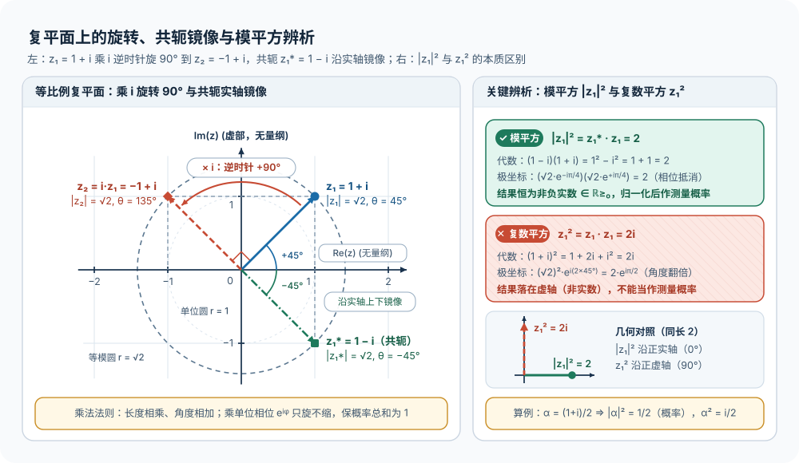
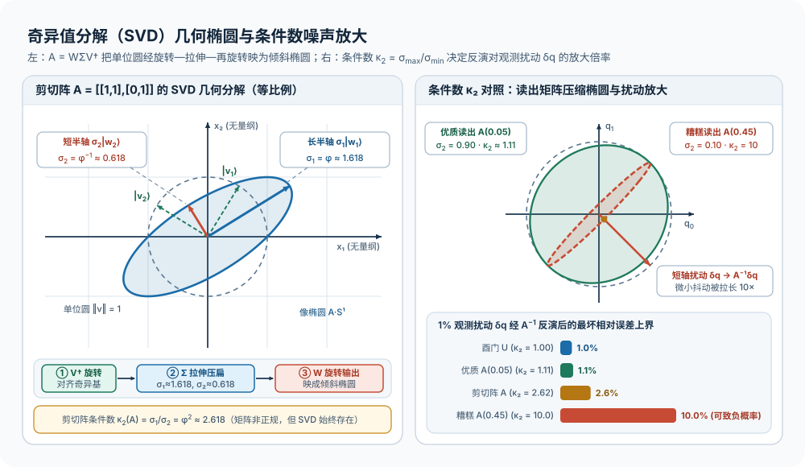
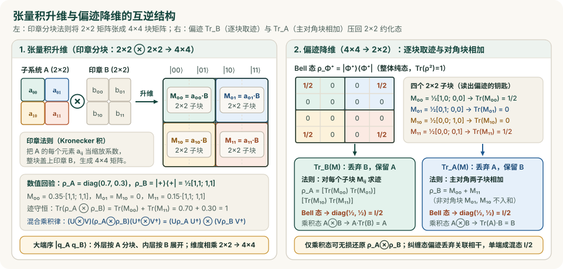

01｜零基础数学工具：看懂量子计算的最小数学语言
很多人打开量子计算教材，第一页就被一串陌生的括号、复数和矩阵拦在门外。其实，读懂绝大部分量子电路、纠缠与基础算法，并不需要微积分，也不需要背诵厚厚的线性代数定理；真正天天上场的，只是高中代数加一点有限维向量、矩阵和基础概率。
这一章专门把这些工具拆开、摆在草稿纸上一步步算给你看。每遇到一个新符号，养成一个习惯：先问它是一个数 、一条向量 ，还是一张矩阵 ；再看它有几个分量、怎么算、算完怎么检查有没有出错。
如果已经几年没碰数学，不必一口气啃完本章，可按“必读 ★ / 进阶按需 ☆”节奏推进：
进入 第 02 章单量子比特 前（★ 核心必读） ：先读第 1–4 节。碰到 Pauli 矩阵和实验频率时，可回看第 5 节与第 8 节。这些计算也会用在物理篇 Q1 的干涉和自旋实验 中。读到谱分解、密度矩阵、量子演化与读出校准时（★ 核心进阶） ：回来看第 5–6 节的正规阵条件、Sylvester 正半定判据、矩阵指数与 SVD 条件数。进入 第 03 章多量子比特与纠缠 前（★ 多比特必读） ：补上第 7 节的张量积、混合乘积律与部分迹分块直觉。进入算法篇 第 06 章 、第 07 章 与信息论篇章时（☆ 按需回看） ：再读第 7.4 节（克罗内克和与 vec \operatorname{vec} vec
标有“进阶回看”“进阶预览”或“进阶选读”的小节第一遍可以先跳过，留到后面需要时再翻回来核对。全章不依赖微积分（仅在矩阵指数处直接借用三个熟知幂级数作为已知代数恒等式）。
1. 复数：把旋转和缩放装进一个数
在经典概率论里，每种可能结果只配一个非负实数概率，两条路径汇到一起只能越加越大，永远无法互相抵消。量子计算最关键的转折，是把“非负概率”升级为允许正负与方向旋转的复数振幅 ——两条路径汇合时，方向相同就增强，方向相反就抵消。
1.1 从虚数单位 i i i
实数里没有任何数平方后等于 − 1 -1 − 1 i i i
i 2 = − 1.
i^2 = -1.
i 2 = − 1. 由两个实数 a , b ∈ R a, b \in \mathbb{R} a , b ∈ R
z = a + b i
z = a + bi
z = a + bi 叫作复数 ，所有复数的集合记为 C \mathbb{C} C a a a 实部 （记作 Re z \operatorname{Re} z Re z b b b 虚部 （记作 Im z \operatorname{Im} z Im z b b b i i i 3 − 2 i 3 - 2i 3 − 2 i 3 3 3 − 2 -2 − 2 b = 0 b = 0 b = 0
加减法就是实部对实部、虚部对虚部各自相加减：
( 1 + 2 i ) + ( 3 − i ) = ( 1 + 3 ) + ( 2 − 1 ) i = 4 + i ,
(1 + 2i) + (3 - i) = (1 + 3) + (2 - 1)i = 4 + i,
( 1 + 2 i ) + ( 3 − i ) = ( 1 + 3 ) + ( 2 − 1 ) i = 4 + i , ( 1 + 2 i ) − ( 3 − i ) = 1 + 2 i − 3 + i = − 2 + 3 i .
(1 + 2i) - (3 - i) = 1 + 2i - 3 + i = -2 + 3i.
( 1 + 2 i ) − ( 3 − i ) = 1 + 2 i − 3 + i = − 2 + 3 i . 乘法按中学的分配律逐项展开，只要看到 i 2 i^2 i 2 − 1 -1 − 1
( 1 + 2 i ) ( 3 − i ) = 1 ⋅ 3 + 1 ⋅ ( − i ) + ( 2 i ) ⋅ 3 + ( 2 i ) ⋅ ( − i ) = 3 − i + 6 i − 2 i 2 = 3 + 5 i − 2 ( − 1 ) = 5 + 5 i .
\begin{aligned}
(1 + 2i)(3 - i)
&= 1\cdot 3 + 1\cdot(-i) + (2i)\cdot 3 + (2i)\cdot(-i) \\
&= 3 - i + 6i - 2i^2 \\
&= 3 + 5i - 2(-1) = 5 + 5i.
\end{aligned}
( 1 + 2 i ) ( 3 − i ) = 1 ⋅ 3 + 1 ⋅ ( − i ) + ( 2 i ) ⋅ 3 + ( 2 i ) ⋅ ( − i ) = 3 − i + 6 i − 2 i 2 = 3 + 5 i − 2 ( − 1 ) = 5 + 5 i . 复数最重要的搭档是复共轭 （简称共轭）：把虚部变号，记作 z ∗ = a − b i z^* = a - bi z ∗ = a − bi i i i
z ∗ z = ( a − b i ) ( a + b i ) = a 2 + a b i − a b i − b 2 i 2 = a 2 + b 2 .
z^* z = (a - bi)(a + bi) = a^2 + abi - abi - b^2 i^2 = a^2 + b^2.
z ∗ z = ( a − bi ) ( a + bi ) = a 2 + abi − abi − b 2 i 2 = a 2 + b 2 . 因为 a , b a, b a , b a 2 + b 2 a^2 + b^2 a 2 + b 2 0 0 0
1 1 + i = 1 − i ( 1 + i ) ( 1 − i ) = 1 − i 1 2 − i 2 = 1 − i 2 .
\frac{1}{1 + i}
= \frac{1 - i}{(1 + i)(1 - i)}
= \frac{1 - i}{1^2 - i^2}
= \frac{1 - i}{2}.
1 + i 1 = ( 1 + i ) ( 1 − i ) 1 − i = 1 2 − i 2 1 − i = 2 1 − i . 1.2 模是长度，相位是方向
把复数 z = a + b i z = a + bi z = a + bi a a a b b b ( a , b ) (a, b) ( a , b ) z z z 复平面 。
箭头有两个一眼能看清的几何量：
模（长度） ：原点到 ( a , b ) (a, b) ( a , b )
∣ z ∣ = a 2 + b 2 , ∣ z ∣ 2 = a 2 + b 2 = z ∗ z .
|z| = \sqrt{a^2 + b^2}, \qquad |z|^2 = a^2 + b^2 = z^* z.
∣ z ∣ = a 2 + b 2 , ∣ z ∣ 2 = a 2 + b 2 = z ∗ z . 例如 z = 1 + i z = 1 + i z = 1 + i ( 1 , 1 ) (1, 1) ( 1 , 1 ) ∣ 1 + i ∣ = 1 2 + 1 2 = 2 |1 + i| = \sqrt{1^2 + 1^2} = \sqrt{2} ∣1 + i ∣ = 1 2 + 1 2 = 2 ∣ 1 + i ∣ 2 = 2 |1 + i|^2 = 2 ∣1 + i ∣ 2 = 2 2 \sqrt{2} 2 2 2 2
相位（方向角） ：从正实轴逆时针转到箭头方向所经过的角度 θ \theta θ 360 ∘ 360^\circ 36 0 ∘ 2 π 2\pi 2 π 180 ∘ 180^\circ 18 0 ∘ π \pi π 90 ∘ 90^\circ 9 0 ∘ π / 2 \pi/2 π /2 45 ∘ 45^\circ 4 5 ∘ π / 4 \pi/4 π /4 r = ∣ z ∣ > 0 r = |z| > 0 r = ∣ z ∣ > 0
a = r cos θ , b = r sin θ , z = r ( cos θ + i sin θ ) .
a = r\cos\theta, \qquad b = r\sin\theta, \qquad z = r(\cos\theta + i\sin\theta).
a = r cos θ , b = r sin θ , z = r ( cos θ + i sin θ ) .
在复平面上，z = 1 + i z = 1 + i z = 1 + i z ∗ = 1 − i z^* = 1 - i z ∗ = 1 − i 2 \sqrt{2} 2 + π / 4 +\pi/4 + π /4 − π / 4 -\pi/4 − π /4 i i i 单个复数 ，不是第 02 章用来表示整个单量子比特态的三维 Bloch 球。
找相位时要看象限，不能只算 b / a b/a b / a − 1 + i -1 + i − 1 + i b / a = − 1 b/a = -1 b / a = − 1 3 π / 4 3\pi/4 3 π /4 135 ∘ 135^\circ 13 5 ∘ − π / 4 -\pi/4 − π /4 θ \theta θ θ + 2 π k \theta + 2\pi k θ + 2 πk k k k z = 0 z = 0 z = 0
1.3 复数乘法的几何直觉：旋转加缩放
只会背分配律，很容易把复数乘法看成一堆冰冷的括号展开。换到复平面上看，它的几何画面其实非常干脆。
先拿最简单的数试一试——反复乘以 i i i
1 → × i i → × i − 1 → × i − i → × i 1.
1 \xrightarrow{\times i} i \xrightarrow{\times i} -1 \xrightarrow{\times i} -i \xrightarrow{\times i} 1.
1 × i i × i − 1 × i − i × i 1. 在复平面上，这四个点依次在东、北、西、南四个方向上，每乘一次 i i i 逆时针旋转 90 ∘ 90^\circ 9 0 ∘ π / 2 \pi/2 π /2 。随便挑一个不在坐标轴上的点 1 + i 1 + i 1 + i i ( 1 + i ) = i + i 2 = − 1 + i i(1 + i) = i + i^2 = -1 + i i ( 1 + i ) = i + i 2 = − 1 + i ( 1 , 1 ) (1, 1) ( 1 , 1 ) ( − 1 , 1 ) (-1, 1) ( − 1 , 1 ) 90 ∘ 90^\circ 9 0 ∘
为了把“任意角度的单位旋转”写得紧凑，我们引入 Euler 公式 ：
e i θ = cos θ + i sin θ , z = r e i θ .
e^{i\theta} = \cos\theta + i\sin\theta, \qquad z = r e^{i\theta}.
e i θ = cos θ + i sin θ , z = r e i θ . 这里 e ≈ 2.71828 e \approx 2.71828 e ≈ 2.71828 e i θ e^{i\theta} e i θ 长度为 1、方向角为 θ \theta θ ”的简记，因为 ∣ cos θ + i sin θ ∣ 2 = cos 2 θ + sin 2 θ = 1 |\cos\theta + i\sin\theta|^2 = \cos^2\theta + \sin^2\theta = 1 ∣ cos θ + i sin θ ∣ 2 = cos 2 θ + sin 2 θ = 1
把两个非零复数 z 1 = r 1 ( cos θ 1 + i sin θ 1 ) z_1 = r_1(\cos\theta_1 + i\sin\theta_1) z 1 = r 1 ( cos θ 1 + i sin θ 1 ) z 2 = r 2 ( cos θ 2 + i sin θ 2 ) z_2 = r_2(\cos\theta_2 + i\sin\theta_2) z 2 = r 2 ( cos θ 2 + i sin θ 2 )
z 1 z 2 = r 1 r 2 [ ( cos θ 1 cos θ 2 − sin θ 1 sin θ 2 ) + i ( sin θ 1 cos θ 2 + cos θ 1 sin θ 2 ) ] = r 1 r 2 [ cos ( θ 1 + θ 2 ) + i sin ( θ 1 + θ 2 ) ] = r 1 r 2 e i ( θ 1 + θ 2 ) .
\begin{aligned}
z_1 z_2
&= r_1 r_2 \big[(\cos\theta_1\cos\theta_2 - \sin\theta_1\sin\theta_2)
+ i(\sin\theta_1\cos\theta_2 + \cos\theta_1\sin\theta_2)\big] \\
&= r_1 r_2 \big[\cos(\theta_1 + \theta_2) + i\sin(\theta_1 + \theta_2)\big]
= r_1 r_2\, e^{i(\theta_1 + \theta_2)}.
\end{aligned}
z 1 z 2 = r 1 r 2 [ ( cos θ 1 cos θ 2 − sin θ 1 sin θ 2 ) + i ( sin θ 1 cos θ 2 + cos θ 1 sin θ 2 ) ] = r 1 r 2 [ cos ( θ 1 + θ 2 ) + i sin ( θ 1 + θ 2 ) ] = r 1 r 2 e i ( θ 1 + θ 2 ) . 这一行不用任何微积分，却给出了复数乘法最直观的法则：长度相乘，角度相加 。乘以 r e i θ r e^{i\theta} r e i θ r r r θ \theta θ r = 1 r = 1 r = 1 e i ϕ e^{i\phi} e i ϕ 只旋转方向，完全不改变长度 ；正是这个几何事实，让量子力学里的纯相位因子 e i ϕ e^{i\phi} e i ϕ
1.4 算例：双路径验算复数乘法与从振幅求概率
算例 A（旋转加缩放的双路径对照） ：计算 w 1 = 1 + i w_1 = 1 + i w 1 = 1 + i w 2 = 3 + i w_2 = \sqrt{3} + i w 2 = 3 + i
路径 1（代数分配律） ：
w 1 w 2 = ( 1 + i ) ( 3 + i ) = 3 + i + 3 i + i 2 = ( 3 − 1 ) + ( 3 + 1 ) i .
w_1 w_2 = (1 + i)(\sqrt{3} + i) = \sqrt{3} + i + \sqrt{3}i + i^2 = (\sqrt{3} - 1) + (\sqrt{3} + 1)i.
w 1 w 2 = ( 1 + i ) ( 3 + i ) = 3 + i + 3 i + i 2 = ( 3 − 1 ) + ( 3 + 1 ) i . 核对结果的模平方：
∣ w 1 w 2 ∣ 2 = ( 3 − 1 ) 2 + ( 3 + 1 ) 2 = ( 4 − 2 3 ) + ( 4 + 2 3 ) = 8 ,
|w_1 w_2|^2 = (\sqrt{3} - 1)^2 + (\sqrt{3} + 1)^2 = (4 - 2\sqrt{3}) + (4 + 2\sqrt{3}) = 8,
∣ w 1 w 2 ∣ 2 = ( 3 − 1 ) 2 + ( 3 + 1 ) 2 = ( 4 − 2 3 ) + ( 4 + 2 3 ) = 8 , 所以长度是 8 = 2 2 \sqrt{8} = 2\sqrt{2} 8 = 2 2
路径 2（极坐标旋转缩放） ：w 1 w_1 w 1 2 \sqrt{2} 2 π / 4 \pi/4 π /4 45 ∘ 45^\circ 4 5 ∘ w 2 w_2 w 2 3 + 1 = 2 \sqrt{3 + 1} = 2 3 + 1 = 2 π / 6 \pi/6 π /6 30 ∘ 30^\circ 3 0 ∘ cos π 6 = 3 2 , sin π 6 = 1 2 \cos\frac{\pi}{6}=\frac{\sqrt{3}}{2}, \sin\frac{\pi}{6}=\frac{1}{2} cos 6 π = 2 3 , sin 6 π = 2 1 2 × 2 = 2 2 \sqrt{2}\times 2 = 2\sqrt{2} 2 × 2 = 2 2 π 4 + π 6 = 5 π 12 \frac{\pi}{4} + \frac{\pi}{6} = \frac{5\pi}{12} 4 π + 6 π = 12 5 π 75 ∘ 75^\circ 7 5 ∘
再看一个纯旋转的极简检验：把 w 1 = 1 + i w_1 = 1 + i w 1 = 1 + i e i π / 4 = 1 + i 2 e^{i\pi/4} = \frac{1 + i}{\sqrt{2}} e iπ /4 = 2 1 + i ( 1 + i ) 2 2 = 1 + 2 i − 1 2 = 2 i \frac{(1 + i)^2}{\sqrt{2}} = \frac{1 + 2i - 1}{\sqrt{2}} = \sqrt{2}\,i 2 ( 1 + i ) 2 = 2 1 + 2 i − 1 = 2 i 45 ∘ 45^\circ 4 5 ∘ 2 \sqrt{2} 2 45 ∘ 45^\circ 4 5 ∘ 90 ∘ 90^\circ 9 0 ∘ 2 \sqrt{2} 2
算例 B（从振幅到测量概率） ：设某个单比特纯态的两个计算基振幅分别是 α = 1 + 2 i 10 \alpha = \frac{1 + 2i}{\sqrt{10}} α = 10 1 + 2 i β = 2 − i 10 \beta = \frac{2 - i}{\sqrt{10}} β = 10 2 − i 模平方 ，而不是直接平方：
∣ α ∣ 2 = α ∗ α = 1 − 2 i 10 ⋅ 1 + 2 i 10 = 1 2 + 2 2 10 = 5 10 = 1 2 .
|\alpha|^2 = \alpha^* \alpha = \frac{1 - 2i}{\sqrt{10}}\cdot\frac{1 + 2i}{\sqrt{10}} = \frac{1^2 + 2^2}{10} = \frac{5}{10} = \frac{1}{2}.
∣ α ∣ 2 = α ∗ α = 10 1 − 2 i ⋅ 10 1 + 2 i = 10 1 2 + 2 2 = 10 5 = 2 1 . 同样算出 ∣ β ∣ 2 = 2 2 + ( − 1 ) 2 10 = 5 10 = 1 2 |\beta|^2 = \frac{2^2 + (-1)^2}{10} = \frac{5}{10} = \frac{1}{2} ∣ β ∣ 2 = 10 2 2 + ( − 1 ) 2 = 10 5 = 2 1 1 2 + 1 2 = 1 \frac{1}{2} + \frac{1}{2} = 1 2 1 + 2 1 = 1 α \alpha α α 2 = 1 + 4 i + 4 i 2 10 = − 3 + 4 i 10 \alpha^2 = \frac{1 + 4i + 4i^2}{10} = \frac{-3 + 4i}{10} α 2 = 10 1 + 4 i + 4 i 2 = 10 − 3 + 4 i

放大查看 ↗ 复平面上的乘 i 旋转 90°、共轭镜像与模平方 |z₁|² 对比复数平方 z₁² 辨析 上面这张双联图把第 1 节最关键的两组几何画面合在了一起（可打开原尺寸复平面旋转与模平方辨析图 清晰查看全部角度与标注）：
左图（等比例复平面） ：z 1 = 1 + i z_1 = 1 + i z 1 = 1 + i i i i r = 2 r = \sqrt{2} r = 2 90 ∘ 90^\circ 9 0 ∘ z 2 = i z 1 = − 1 + i z_2 = i z_1 = -1 + i z 2 = i z 1 = − 1 + i z 1 ∗ = 1 − i z_1^* = 1 - i z 1 ∗ = 1 − i r ≠ 1 r \neq 1 r = 1 r r r w 1 w 2 w_1 w_2 w 1 w 2 右图（两种“平方”的本质区别） ：模平方 ∣ z 1 ∣ 2 = z 1 ∗ z 1 = 2 |z_1|^2 = z_1^* z_1 = 2 ∣ z 1 ∣ 2 = z 1 ∗ z 1 = 2 z 1 2 = 2 i z_1^2 = 2i z 1 2 = 2 i α = 1 + i 2 \alpha = \frac{1+i}{2} α = 2 1 + i 1 / 2 1/2 1/2 i / 2 i/2 i /2
马上核对。 ( 2 − i ) ( 2 + i ) (2 - i)(2 + i) ( 2 − i ) ( 2 + i ) ∣ 3 − 4 i ∣ 2 |3 - 4i|^2 ∣3 − 4 i ∣ 2 2 2 − i 2 = 5 2^2 - i^2 = 5 2 2 − i 2 = 5 3 2 + ( − 4 ) 2 = 25 3^2 + (-4)^2 = 25 3 2 + ( − 4 ) 2 = 25
2. 列向量、Dirac 记号与左共轭内积
单个复数只能记录一个结果的振幅；要同时记录一个量子比特的两种可能（0 和 1），或者 n n n 2 n 2^n 2 n 列向量 。
2.1 从经典概率向量到量子态矢量
在经典随机系统里，一枚不均匀硬币有 p 0 = 0.7 p_0 = 0.7 p 0 = 0.7 p 1 = 0.3 p_1 = 0.3 p 1 = 0.3 p = [ 0.7 0.3 ] p = \begin{bmatrix}0.7\\0.3\end{bmatrix} p = [ 0.7 0.3 ] 1 1 1
量子比特的纯态用同样的方式竖排，只是把非负概率换成复数振幅 α , β ∈ C \alpha, \beta \in \mathbb{C} α , β ∈ C 1 1 1 1 1 1 ∣ α ∣ 2 + ∣ β ∣ 2 = 1 |\alpha|^2 + |\beta|^2 = 1 ∣ α ∣ 2 + ∣ β ∣ 2 = 1 C d \mathbb{C}^d C d d d d
列向量的加法和数乘都按位置逐项进行。为避免与经典概率向量 p , q p, q p , q ∣ a ⟩ , ∣ b ⟩ |a\rangle, |b\rangle ∣ a ⟩ , ∣ b ⟩ ∣ a ⟩ = [ 1 , i ] T |a\rangle = [1, i]^T ∣ a ⟩ = [ 1 , i ] T ∣ b ⟩ = [ 2 , − i ] T |b\rangle = [2, -i]^T ∣ b ⟩ = [ 2 , − i ] T T T T
∣ a ⟩ + ∣ b ⟩ = [ 1 + 2 i + ( − i ) ] = [ 3 0 ] , 2 ∣ a ⟩ = [ 2 2 i ] .
|a\rangle + |b\rangle = \begin{bmatrix}1 + 2 \\ i + (-i)\end{bmatrix} = \begin{bmatrix}3 \\ 0\end{bmatrix},
\qquad
2|a\rangle = \begin{bmatrix}2 \\ 2i\end{bmatrix}.
∣ a ⟩ + ∣ b ⟩ = [ 1 + 2 i + ( − i ) ] = [ 3 0 ] , 2∣ a ⟩ = [ 2 2 i ] . 2.2 ket、bra 与对象形状体检表
量子计算通行的 Dirac 记号 非常实用：
右上角的剑号 † \dagger † 先取共轭、再转置 。不要把它和普通转置 T T T ∣ a ⟩ = [ 1 i ] |a\rangle = \begin{bmatrix}1\\i\end{bmatrix} ∣ a ⟩ = [ 1 i ] [ 1 , i ] [1,\; i] [ 1 , i ] ⟨ a ∣ = [ 1 , − i ] \langle a| = [1,\; -i] ⟨ a ∣ = [ 1 , − i ] i i i
很多初学者在 Dirac 记号里迷路，是因为没先看清表达式的“形状”。其实只要瞄一眼尖括号的朝向，就能立刻判断对象类型：
放大查看 ↗ 列向量 ket 与行向量 bra 的共轭转置、内积标量与外积矩阵 对照上图记忆最省力（可打开原尺寸 ket/bra 形状对照图 放大查看）：嘴对嘴拼成 ⟨ v ∣ v ⟩ \langle v|v\rangle ⟨ v ∣ v ⟩ 数 ；背靠背拼成 ∣ v ⟩ ⟨ v ∣ |v\rangle\langle v| ∣ v ⟩ ⟨ v ∣ 2 × 2 2\times 2 2 × 2 矩阵 。两种顺序得到的连对象类型都不一样，不能随意互换。
2.3 为什么复数内积必须左共轭？
对任意两个 d d d ∣ ϕ ⟩ = [ ϕ 1 , … , ϕ d ] T |\phi\rangle = [\phi_1, \dots, \phi_d]^T ∣ ϕ ⟩ = [ ϕ 1 , … , ϕ d ] T ∣ ψ ⟩ = [ ψ 1 , … , ψ d ] T |\psi\rangle = [\psi_1, \dots, \psi_d]^T ∣ ψ ⟩ = [ ψ 1 , … , ψ d ] T 左共轭内积 （与 Python NumPy 中的 np.vdot(phi, psi) 一致）：
⟨ ϕ ∣ ψ ⟩ = [ ϕ 1 ∗ ⋯ ϕ d ∗ ] [ ψ 1 ⋮ ψ d ] = ∑ j = 1 d ϕ j ∗ ψ j .
\langle\phi|\psi\rangle
= \begin{bmatrix}\phi_1^* & \cdots & \phi_d^*\end{bmatrix}
\begin{bmatrix}\psi_1 \\ \vdots \\ \psi_d\end{bmatrix}
= \sum_{j=1}^{d} \phi_j^* \psi_j.
⟨ ϕ ∣ ψ ⟩ = [ ϕ 1 ∗ ⋯ ϕ d ∗ ] ψ 1 ⋮ ψ d = j = 1 ∑ d ϕ j ∗ ψ j . 初学者常问：“为什么要多此一举给左边取共轭，直接照搬实数点积 ∑ j ϕ j ψ j \sum_j \phi_j \psi_j ∑ j ϕ j ψ j
取非零向量 ∣ u ⟩ = 1 2 [ 1 i ] |u\rangle = \frac{1}{\sqrt{2}}\begin{bmatrix}1\\i\end{bmatrix} ∣ u ⟩ = 2 1 [ 1 i ]
u T u = 1 2 ( 1 2 + i 2 ) = 1 − 1 2 = 0.
u^T u = \frac{1}{2}(1^2 + i^2) = \frac{1 - 1}{2} = 0.
u T u = 2 1 ( 1 2 + i 2 ) = 2 1 − 1 = 0. 一个实实在在的非零向量，算出来的“长度平方”竟然是零！
再取 ∣ r ⟩ = [ i 0 ] |r\rangle = \begin{bmatrix}i\\0\end{bmatrix} ∣ r ⟩ = [ i 0 ] r T r = i 2 = − 1 r^T r = i^2 = -1 r T r = i 2 = − 1
只有对其中一侧取复共轭，向量和自己的内积 ⟨ ψ ∣ ψ ⟩ = ∑ j ψ j ∗ ψ j = ∑ j ∣ ψ j ∣ 2 \langle\psi|\psi\rangle = \sum_j \psi_j^* \psi_j = \sum_j |\psi_j|^2 ⟨ ψ ∣ ψ ⟩ = ∑ j ψ j ∗ ψ j = ∑ j ∣ ψ j ∣ 2 ∣ ψ ⟩ |\psi\rangle ∣ ψ ⟩ 0 0 0 范数 （长度）为
∥ ψ ∥ = ⟨ ψ ∣ ψ ⟩ = ∑ j ∣ ψ j ∣ 2 .
\|\psi\| = \sqrt{\langle\psi|\psi\rangle} = \sqrt{\sum_j |\psi_j|^2}.
∥ ψ ∥ = ⟨ ψ ∣ ψ ⟩ = j ∑ ∣ ψ j ∣ 2 . 如果一个非零向量长度不是 1 1 1 ∥ ψ ∥ \|\psi\| ∥ ψ ∥ 1 1 1 归一化 向量。例如对 ∣ s ⟩ = [ 1 , 1 + i ] T |s\rangle = [1,\; 1 + i]^T ∣ s ⟩ = [ 1 , 1 + i ] T
⟨ s ∣ s ⟩ = ∣ 1 ∣ 2 + ∣ 1 + i ∣ 2 = 1 + ( 1 2 + 1 2 ) = 3 ,
\langle s|s\rangle = |1|^2 + |1 + i|^2 = 1 + (1^2 + 1^2) = 3,
⟨ s ∣ s ⟩ = ∣1 ∣ 2 + ∣1 + i ∣ 2 = 1 + ( 1 2 + 1 2 ) = 3 , 故 ∥ s ∥ = 3 \|s\| = \sqrt{3} ∥ s ∥ = 3
∣ ψ ⟩ = 1 3 [ 1 1 + i ] .
|\psi\rangle = \frac{1}{\sqrt{3}}\begin{bmatrix}1 \\ 1 + i\end{bmatrix}.
∣ ψ ⟩ = 3 1 [ 1 1 + i ] . 回验两项模平方之和：1 3 + 2 3 = 1 \frac{1}{3} + \frac{2}{3} = 1 3 1 + 3 2 = 1
2.4 左共轭带来的两个关键运算规则
因为 bra 自带共轭，内积有两条必须刻进肌肉记忆的性质（对任意复数 c ∈ C c \in \mathbb{C} c ∈ C ∣ ϕ ⟩ , ∣ ψ ⟩ ∈ C d |\phi\rangle, |\psi\rangle \in \mathbb{C}^d ∣ ϕ ⟩ , ∣ ψ ⟩ ∈ C d
共轭对称性 ：调换左右顺序，结果取共轭，即 ⟨ ψ ∣ ϕ ⟩ = ( ⟨ ϕ ∣ ψ ⟩ ) ∗ \langle\psi|\phi\rangle = (\langle\phi|\psi\rangle)^* ⟨ ψ ∣ ϕ ⟩ = (⟨ ϕ ∣ ψ ⟩ ) ∗
右线性、左反线性 ：
⟨ ϕ ∣ c ψ ⟩ = c ⟨ ϕ ∣ ψ ⟩ , ⟨ c ϕ ∣ ψ ⟩ = c ∗ ⟨ ϕ ∣ ψ ⟩ .
\langle\phi\,|\,c\psi\rangle = c\,\langle\phi|\psi\rangle,
\qquad
\langle c\phi\,|\,\psi\rangle = c^*\,\langle\phi|\psi\rangle.
⟨ ϕ ∣ c ψ ⟩ = c ⟨ ϕ ∣ ψ ⟩ , ⟨ c ϕ ∣ ψ ⟩ = c ∗ ⟨ ϕ ∣ ψ ⟩ . 可以记一句顺口溜：“数从右边 ket 往外提，原样出来；数从左边 bra 往外提，过墙变共轭 。”
算例（双路径核验正交与反线性） ：取
∣ u ⟩ = 1 2 [ 1 i ] , ∣ v ⟩ = 1 2 [ 1 − i ] , ∣ w ⟩ = i ∣ u ⟩ .
|u\rangle = \frac{1}{\sqrt{2}}\begin{bmatrix}1\\i\end{bmatrix},
\qquad
|v\rangle = \frac{1}{\sqrt{2}}\begin{bmatrix}1\\-i\end{bmatrix},
\qquad
|w\rangle = i|u\rangle.
∣ u ⟩ = 2 1 [ 1 i ] , ∣ v ⟩ = 2 1 [ 1 − i ] , ∣ w ⟩ = i ∣ u ⟩ .
先查 ∣ u ⟩ |u\rangle ∣ u ⟩ ⟨ u ∣ = 1 2 [ 1 , − i ] \langle u| = \frac{1}{\sqrt{2}}[1,\; -i] ⟨ u ∣ = 2 1 [ 1 , − i ]
⟨ u ∣ u ⟩ = 1 ⋅ 1 + ( − i ) ( i ) 2 = 1 + 1 2 = 1 ,
\langle u|u\rangle = \frac{1\cdot 1 + (-i)(i)}{2} = \frac{1 + 1}{2} = 1,
⟨ u ∣ u ⟩ = 2 1 ⋅ 1 + ( − i ) ( i ) = 2 1 + 1 = 1 , ⟨ u ∣ v ⟩ = 1 ⋅ 1 + ( − i ) ( − i ) 2 = 1 − 1 2 = 0.
\langle u|v\rangle = \frac{1\cdot 1 + (-i)(-i)}{2} = \frac{1 - 1}{2} = 0.
⟨ u ∣ v ⟩ = 2 1 ⋅ 1 + ( − i ) ( − i ) = 2 1 − 1 = 0. 内积为零，说明 ∣ u ⟩ |u\rangle ∣ u ⟩ ∣ v ⟩ |v\rangle ∣ v ⟩ 正交 。
再算 ⟨ w ∣ u ⟩ \langle w|u\rangle ⟨ w ∣ u ⟩
按反线性口诀 ：因为 ∣ w ⟩ = i ∣ u ⟩ |w\rangle = i|u\rangle ∣ w ⟩ = i ∣ u ⟩ i i i − i -i − i ⟨ w ∣ u ⟩ = ( − i ) ⟨ u ∣ u ⟩ = − i \langle w|u\rangle = (-i)\langle u|u\rangle = -i ⟨ w ∣ u ⟩ = ( − i ) ⟨ u ∣ u ⟩ = − i
展开分量独立复算 ：∣ w ⟩ = 1 2 [ i i 2 ] = 1 2 [ i − 1 ] |w\rangle = \frac{1}{\sqrt{2}}\begin{bmatrix}i\\i^2\end{bmatrix} = \frac{1}{\sqrt{2}}\begin{bmatrix}i\\-1\end{bmatrix} ∣ w ⟩ = 2 1 [ i i 2 ] = 2 1 [ i − 1 ] ⟨ w ∣ = 1 2 [ − i , − 1 ] \langle w| = \frac{1}{\sqrt{2}}[-i,\; -1] ⟨ w ∣ = 2 1 [ − i , − 1 ]
⟨ w ∣ u ⟩ = ( − i ) ⋅ 1 + ( − 1 ) ⋅ i 2 = − 2 i 2 = − i .
\langle w|u\rangle = \frac{(-i)\cdot 1 + (-1)\cdot i}{2} = \frac{-2i}{2} = -i.
⟨ w ∣ u ⟩ = 2 ( − i ) ⋅ 1 + ( − 1 ) ⋅ i = 2 − 2 i = − i .
两条路径结果完全一致。再算反过来的 ⟨ u ∣ w ⟩ = i ⟨ u ∣ u ⟩ = + i \langle u|w\rangle = i\langle u|u\rangle = +i ⟨ u ∣ w ⟩ = i ⟨ u ∣ u ⟩ = + i ( − i ) ∗ (-i)^* ( − i ) ∗
2.5 全局相位与相对相位：明确区分两类相位
如果给整个量子态乘上一个单位复数 e i θ g e^{i\theta_{\mathrm{g}}} e i θ g θ g ∈ R \theta_{\mathrm{g}} \in \mathbb{R} θ g ∈ R e i θ g ∣ ψ ⟩ e^{i\theta_{\mathrm{g}}}|\psi\rangle e i θ g ∣ ψ ⟩ ∣ ψ ⟩ |\psi\rangle ∣ ψ ⟩ 同一个物理态 。原因用刚学的模平方一行就能看清：在任何测量基下，无论哪个结果原本的振幅是 c c c e i θ g c e^{i\theta_{\mathrm{g}}} c e i θ g c
∣ e i θ g c ∣ 2 = ( e i θ g c ) ∗ ( e i θ g c ) = e − i θ g e i θ g c ∗ c = ∣ c ∣ 2 .
|e^{i\theta_{\mathrm{g}}} c|^2 = (e^{i\theta_{\mathrm{g}}} c)^*(e^{i\theta_{\mathrm{g}}} c) = e^{-i\theta_{\mathrm{g}}} e^{i\theta_{\mathrm{g}}} c^* c = |c|^2.
∣ e i θ g c ∣ 2 = ( e i θ g c ) ∗ ( e i θ g c ) = e − i θ g e i θ g c ∗ c = ∣ c ∣ 2 . 这种乘在整个态最外面 的共同相位因子叫全局相位 ，不会改变任何实验统计。但只改两个分量之间的相位差就完全不同：例如下一节的 ∣ + ⟩ = ∣ 0 ⟩ + ∣ 1 ⟩ 2 |+\rangle = \frac{|0\rangle + |1\rangle}{\sqrt{2}} ∣ + ⟩ = 2 ∣0 ⟩ + ∣1 ⟩ ∣ − ⟩ = ∣ 0 ⟩ − ∣ 1 ⟩ 2 |-\rangle = \frac{|0\rangle - |1\rangle}{\sqrt{2}} ∣ − ⟩ = 2 ∣0 ⟩ − ∣1 ⟩ ∣ 1 ⟩ |1\rangle ∣1 ⟩ ∣ 0 ⟩ |0\rangle ∣0 ⟩ e i π = − 1 e^{i\pi} = -1 e iπ = − 1 相对相位 ，它可以在后续门操作中触发截然不同的干涉结果。所以后文说“忽略全局相位”时，只允许去掉整个态的公因子，绝不能随手擦掉某个分量上的符号或 i i i
2.6 进阶回看：Cauchy–Schwarz 不等式
这一小节先记住结论即可：任意两个向量的内积大小，不会超过它们各自长度的乘积 ，即
∣ ⟨ u ∣ v ⟩ ∣ ≤ ∥ u ∥ ∥ v ∥ .
|\langle u|v\rangle| \le \|u\|\,\|v\|.
∣ ⟨ u ∣ v ⟩ ∣ ≤ ∥ u ∥ ∥ v ∥. 想看证明时，不需要微积分，只用展开长度平方即可。当 ∣ u ⟩ = 0 |u\rangle = 0 ∣ u ⟩ = 0 0 0 0 ∣ u ⟩ ≠ 0 |u\rangle \neq 0 ∣ u ⟩ = 0 c = ⟨ u ∣ v ⟩ ⟨ u ∣ u ⟩ c = \frac{\langle u|v\rangle}{\langle u|u\rangle} c = ⟨ u ∣ u ⟩ ⟨ u ∣ v ⟩ ∣ v ⟩ |v\rangle ∣ v ⟩ ∣ u ⟩ |u\rangle ∣ u ⟩
∣ w ⟩ = ∣ v ⟩ − c ∣ u ⟩ .
|w\rangle = |v\rangle - c|u\rangle.
∣ w ⟩ = ∣ v ⟩ − c ∣ u ⟩ . 用左反线性与右线性逐项展开非负的范数平方 ⟨ w ∣ w ⟩ \langle w|w\rangle ⟨ w ∣ w ⟩ c c c c ∗ c^* c ∗ ⟨ v ∣ u ⟩ = ⟨ u ∣ v ⟩ ∗ \langle v|u\rangle = \langle u|v\rangle^* ⟨ v ∣ u ⟩ = ⟨ u ∣ v ⟩ ∗
0 ≤ ⟨ w ∣ w ⟩ = ⟨ v − c u ∣ v − c u ⟩ = ⟨ v ∣ v ⟩ − c ⟨ v ∣ u ⟩ − c ∗ ⟨ u ∣ v ⟩ + ∣ c ∣ 2 ⟨ u ∣ u ⟩ = ⟨ v ∣ v ⟩ − ∣ ⟨ u ∣ v ⟩ ∣ 2 ⟨ u ∣ u ⟩ − ∣ ⟨ u ∣ v ⟩ ∣ 2 ⟨ u ∣ u ⟩ + ∣ ⟨ u ∣ v ⟩ ∣ 2 ⟨ u ∣ u ⟩ = ⟨ v ∣ v ⟩ − ∣ ⟨ u ∣ v ⟩ ∣ 2 ⟨ u ∣ u ⟩ .
\begin{aligned}
0 \le \langle w|w\rangle
&= \langle v - c u \mid v - c u\rangle \\
&= \langle v|v\rangle - c\langle v|u\rangle - c^*\langle u|v\rangle + |c|^2 \langle u|u\rangle \\
&= \langle v|v\rangle - \frac{|\langle u|v\rangle|^2}{\langle u|u\rangle}
- \frac{|\langle u|v\rangle|^2}{\langle u|u\rangle}
+ \frac{|\langle u|v\rangle|^2}{\langle u|u\rangle} \\
&= \langle v|v\rangle - \frac{|\langle u|v\rangle|^2}{\langle u|u\rangle}.
\end{aligned}
0 ≤ ⟨ w ∣ w ⟩ = ⟨ v − c u ∣ v − c u ⟩ = ⟨ v ∣ v ⟩ − c ⟨ v ∣ u ⟩ − c ∗ ⟨ u ∣ v ⟩ + ∣ c ∣ 2 ⟨ u ∣ u ⟩ = ⟨ v ∣ v ⟩ − ⟨ u ∣ u ⟩ ∣ ⟨ u ∣ v ⟩ ∣ 2 − ⟨ u ∣ u ⟩ ∣ ⟨ u ∣ v ⟩ ∣ 2 + ⟨ u ∣ u ⟩ ∣ ⟨ u ∣ v ⟩ ∣ 2 = ⟨ v ∣ v ⟩ − ⟨ u ∣ u ⟩ ∣ ⟨ u ∣ v ⟩ ∣ 2 . 移项并两边同乘正数 ⟨ u ∣ u ⟩ \langle u|u\rangle ⟨ u ∣ u ⟩ ∣ ⟨ u ∣ v ⟩ ∣ 2 ≤ ⟨ u ∣ u ⟩ ⟨ v ∣ v ⟩ |\langle u|v\rangle|^2 \le \langle u|u\rangle\langle v|v\rangle ∣ ⟨ u ∣ v ⟩ ∣ 2 ≤ ⟨ u ∣ u ⟩ ⟨ v ∣ v ⟩ 物理篇 Q2：可观测量与动力学 里的不确定关系正是从这条不等式出发的。
3. 正交归一基与正交投影：用“影子”看懂量子测量
同一个物理态，换一把尺子去量，读出来的坐标数字就会变，但物理对象本身没有变。线性代数里这把“尺子”就是一组正交归一基 。
3.1 正交归一基与坐标展开
在二维复空间 C 2 \mathbb{C}^2 C 2 [ a , b ] T [a, b]^T [ a , b ] T
[ a b ] = a [ 1 0 ] + b [ 0 1 ] = a ∣ 0 ⟩ + b ∣ 1 ⟩ .
\begin{bmatrix}a\\b\end{bmatrix}
= a\begin{bmatrix}1\\0\end{bmatrix} + b\begin{bmatrix}0\\1\end{bmatrix}
= a|0\rangle + b|1\rangle.
[ a b ] = a [ 1 0 ] + b [ 0 1 ] = a ∣0 ⟩ + b ∣1 ⟩ . 这两个标准方向 ∣ 0 ⟩ = [ 1 , 0 ] T |0\rangle = [1, 0]^T ∣0 ⟩ = [ 1 , 0 ] T ∣ 1 ⟩ = [ 0 , 1 ] T |1\rangle = [0, 1]^T ∣1 ⟩ = [ 0 , 1 ] T 计算基 （computational basis）。如果 d d d { ∣ e 1 ⟩ , … , ∣ e d ⟩ } \{|e_1\rangle, \dots, |e_d\rangle\} { ∣ e 1 ⟩ , … , ∣ e d ⟩}
⟨ e j ∣ e k ⟩ = δ j k = { 1 , j = k , 0 , j ≠ k ,
\langle e_j | e_k \rangle = \delta_{jk}
= \begin{cases} 1, & j = k, \\ 0, & j \neq k, \end{cases}
⟨ e j ∣ e k ⟩ = δ jk = { 1 , 0 , j = k , j = k , 也就是每个方向长度都是 1 1 1 d d d 正交归一基 。比如三维空间里只有两个互相垂直的单位向量，缺了第三个方向，就不能叫整个三维空间的基。
在任意一组正交归一基下，任何向量 ∣ ψ ⟩ |\psi\rangle ∣ ψ ⟩
∣ ψ ⟩ = ∑ j = 1 d c j ∣ e j ⟩ , c j = ⟨ e j ∣ ψ ⟩ .
|\psi\rangle = \sum_{j=1}^{d} c_j |e_j\rangle, \qquad c_j = \langle e_j | \psi\rangle.
∣ ψ ⟩ = j = 1 ∑ d c j ∣ e j ⟩ , c j = ⟨ e j ∣ ψ ⟩ . 为什么坐标 c j c_j c j ⟨ e j ∣ ψ ⟩ \langle e_j|\psi\rangle ⟨ e j ∣ ψ ⟩ ⟨ e k ∣ \langle e_k| ⟨ e k ∣
⟨ e k ∣ ψ ⟩ = ∑ j = 1 d c j ⟨ e k ∣ e j ⟩ = ∑ j = 1 d c j δ k j = c k .
\langle e_k|\psi\rangle
= \sum_{j=1}^{d} c_j \langle e_k|e_j\rangle
= \sum_{j=1}^{d} c_j \delta_{kj}
= c_k.
⟨ e k ∣ ψ ⟩ = j = 1 ∑ d c j ⟨ e k ∣ e j ⟩ = j = 1 ∑ d c j δ kj = c k . 另一组贯穿全书的二维正交归一基是 X X X
∣ + ⟩ = ∣ 0 ⟩ + ∣ 1 ⟩ 2 = 1 2 [ 1 1 ] , ∣ − ⟩ = ∣ 0 ⟩ − ∣ 1 ⟩ 2 = 1 2 [ 1 − 1 ] .
|+\rangle = \frac{|0\rangle + |1\rangle}{\sqrt{2}} = \frac{1}{\sqrt{2}}\begin{bmatrix}1\\1\end{bmatrix},
\qquad
|-\rangle = \frac{|0\rangle - |1\rangle}{\sqrt{2}} = \frac{1}{\sqrt{2}}\begin{bmatrix}1\\-1\end{bmatrix}.
∣ + ⟩ = 2 ∣0 ⟩ + ∣1 ⟩ = 2 1 [ 1 1 ] , ∣ − ⟩ = 2 ∣0 ⟩ − ∣1 ⟩ = 2 1 [ 1 − 1 ] . 检查一下：⟨ + ∣ + ⟩ = 1 + 1 2 = 1 \langle+|+\rangle = \frac{1+1}{2} = 1 ⟨ + ∣ + ⟩ = 2 1 + 1 = 1 ⟨ − ∣ − ⟩ = 1 + 1 2 = 1 \langle-|-\rangle = \frac{1+1}{2} = 1 ⟨ − ∣ − ⟩ = 2 1 + 1 = 1 ⟨ + ∣ − ⟩ = 1 − 1 2 = 0 \langle+|-\rangle = \frac{1-1}{2} = 0 ⟨ + ∣ − ⟩ = 2 1 − 1 = 0 2 2 2 C 2 \mathbb{C}^2 C 2
算例（复数态换基与回代检验） ：把态 ∣ ψ ⟩ = ∣ 0 ⟩ + i ∣ 1 ⟩ 2 |\psi\rangle = \frac{|0\rangle + i|1\rangle}{\sqrt{2}} ∣ ψ ⟩ = 2 ∣0 ⟩ + i ∣1 ⟩ { ∣ + ⟩ , ∣ − ⟩ } \{|+\rangle, |-\rangle\} { ∣ + ⟩ , ∣ − ⟩}
暂停算一格。 ∣ 1 ⟩ |1\rangle ∣1 ⟩ { ∣ + ⟩ , ∣ − ⟩ } \{|+\rangle, |-\rangle\} { ∣ + ⟩ , ∣ − ⟩} ⟨ + ∣ 1 ⟩ = 1 2 \langle+|1\rangle = \frac{1}{\sqrt{2}} ⟨ + ∣1 ⟩ = 2 1 ⟨ − ∣ 1 ⟩ = − 1 2 \langle-|1\rangle = -\frac{1}{\sqrt{2}} ⟨ − ∣1 ⟩ = − 2 1 1 2 + 1 2 = 1 \frac{1}{2} + \frac{1}{2} = 1 2 1 + 2 1 = 1
3.2 正交投影：把“手电筒的影子”写成外积矩阵
现在回头看坐标展开里的每一项 c j ∣ e j ⟩ = ∣ e j ⟩ ⟨ e j ∣ ψ ⟩ c_j |e_j\rangle = |e_j\rangle \langle e_j | \psi\rangle c j ∣ e j ⟩ = ∣ e j ⟩ ⟨ e j ∣ ψ ⟩ ∣ e j ⟩ ( ⟨ e j ∣ ψ ⟩ ) |e_j\rangle(\langle e_j|\psi\rangle) ∣ e j ⟩ (⟨ e j ∣ ψ ⟩) ( ∣ e j ⟩ ⟨ e j ∣ ) ∣ ψ ⟩ (|e_j\rangle\langle e_j|)|\psi\rangle ( ∣ e j ⟩ ⟨ e j ∣ ) ∣ ψ ⟩ 正交投影机
P j = ∣ e j ⟩ ⟨ e j ∣ .
P_j = |e_j\rangle\langle e_j|.
P j = ∣ e j ⟩ ⟨ e j ∣. 在几何上，这就像拿一束垂直于直线 L j L_j L j ∣ e j ⟩ |e_j\rangle ∣ e j ⟩ ∣ ψ ⟩ |\psi\rangle ∣ ψ ⟩
内积 ⟨ e j ∣ ψ ⟩ \langle e_j|\psi\rangle ⟨ e j ∣ ψ ⟩
外积算符 P j = ∣ e j ⟩ ⟨ e j ∣ P_j = |e_j\rangle\langle e_j| P j = ∣ e j ⟩ ⟨ e j ∣ ∣ ψ ⟩ |\psi\rangle ∣ ψ ⟩ 影子向量本身 ，把垂直于 ∣ e j ⟩ |e_j\rangle ∣ e j ⟩
这立刻解释了正交投影算符的三条核心性质，一条都不用死记：
照两次还是同一个影子（幂等性） ：P j 2 = ∣ e j ⟩ ⟨ e j ∣ e j ⟩ ⏟ 1 ⟨ e j ∣ = P j P_j^2 = |e_j\rangle\underbrace{\langle e_j|e_j\rangle}_{1}\langle e_j| = P_j P j 2 = ∣ e j ⟩ 1 ⟨ e j ∣ e j ⟩ ⟨ e j ∣ = P j P j † = P j P_j^\dagger = P_j P j † = P j
残差与影子垂直（勾股定理） ：剩下的部分 ∣ r ⟩ = ∣ ψ ⟩ − P j ∣ ψ ⟩ |r\rangle = |\psi\rangle - P_j|\psi\rangle ∣ r ⟩ = ∣ ψ ⟩ − P j ∣ ψ ⟩ ⟨ e j ∣ r ⟩ = ⟨ e j ∣ ψ ⟩ − ⟨ e j ∣ ψ ⟩ = 0 \langle e_j|r\rangle = \langle e_j|\psi\rangle - \langle e_j|\psi\rangle = 0 ⟨ e j ∣ r ⟩ = ⟨ e j ∣ ψ ⟩ − ⟨ e j ∣ ψ ⟩ = 0 ∥ P j ∣ ψ ⟩ ∥ 2 + ∥ ∣ r ⟩ ∥ 2 = ∥ ∣ ψ ⟩ ∥ 2 \|P_j|\psi\rangle\|^2 + \||r\rangle\|^2 = \||\psi\rangle\|^2 ∥ P j ∣ ψ ⟩ ∥ 2 + ∥∣ r ⟩ ∥ 2 = ∥∣ ψ ⟩ ∥ 2
所有垂直方向的影子拼回原向量（完备性关系） ：因为对任意 ∣ ψ ⟩ |\psi\rangle ∣ ψ ⟩ ∣ ψ ⟩ = ∑ j ( ∣ e j ⟩ ⟨ e j ∣ ) ∣ ψ ⟩ |\psi\rangle = \sum_j (|e_j\rangle\langle e_j|)|\psi\rangle ∣ ψ ⟩ = ∑ j ( ∣ e j ⟩ ⟨ e j ∣ ) ∣ ψ ⟩
∑ j = 1 d ∣ e j ⟩ ⟨ e j ∣ = I .
\sum_{j=1}^{d} |e_j\rangle\langle e_j| = I.
j = 1 ∑ d ∣ e j ⟩ ⟨ e j ∣ = I .
算例（把 ∣ 0 ⟩ |0\rangle ∣0 ⟩ { ∣ + ⟩ , ∣ − ⟩ } \{|+\rangle, |-\rangle\} { ∣ + ⟩ , ∣ − ⟩} ：先按外积“列乘行”写出两个投影矩阵：
P + = ∣ + ⟩ ⟨ + ∣ = 1 2 [ 1 1 ] 1 2 [ 1 1 ] = 1 2 [ 1 1 1 1 ] , P − = ∣ − ⟩ ⟨ − ∣ = 1 2 [ 1 − 1 − 1 1 ] .
P_+ = |+\rangle\langle+|
= \frac{1}{\sqrt{2}}\begin{bmatrix}1\\1\end{bmatrix}
\frac{1}{\sqrt{2}}\begin{bmatrix}1 & 1\end{bmatrix}
= \frac{1}{2}\begin{bmatrix}1 & 1 \\ 1 & 1\end{bmatrix},
\qquad
P_- = |-\rangle\langle-|
= \frac{1}{2}\begin{bmatrix}1 & -1 \\ -1 & 1\end{bmatrix}.
P + = ∣ + ⟩ ⟨ + ∣ = 2 1 [ 1 1 ] 2 1 [ 1 1 ] = 2 1 [ 1 1 1 1 ] , P − = ∣ − ⟩ ⟨ − ∣ = 2 1 [ 1 − 1 − 1 1 ] . 把 P + P_+ P + ∣ ψ ⟩ = ∣ 0 ⟩ = [ 1 0 ] |\psi\rangle = |0\rangle = \begin{bmatrix}1\\0\end{bmatrix} ∣ ψ ⟩ = ∣0 ⟩ = [ 1 0 ]
P + ∣ 0 ⟩ = 1 2 [ 1 1 1 1 ] [ 1 0 ] = 1 2 [ 1 1 ] = 1 2 ∣ + ⟩ ,
P_+|0\rangle = \frac{1}{2}\begin{bmatrix}1 & 1 \\ 1 & 1\end{bmatrix}\begin{bmatrix}1\\0\end{bmatrix}
= \frac{1}{2}\begin{bmatrix}1\\1\end{bmatrix} = \frac{1}{\sqrt{2}}|+\rangle,
P + ∣0 ⟩ = 2 1 [ 1 1 1 1 ] [ 1 0 ] = 2 1 [ 1 1 ] = 2 1 ∣ + ⟩ , ∣ r ⟩ = ∣ 0 ⟩ − P + ∣ 0 ⟩ = 1 2 [ 1 − 1 ] = 1 2 ∣ − ⟩ = P − ∣ 0 ⟩ .
|r\rangle = |0\rangle - P_+|0\rangle = \frac{1}{2}\begin{bmatrix}1\\-1\end{bmatrix}
= \frac{1}{\sqrt{2}}|-\rangle = P_-|0\rangle.
∣ r ⟩ = ∣0 ⟩ − P + ∣0 ⟩ = 2 1 [ 1 − 1 ] = 2 1 ∣ − ⟩ = P − ∣0 ⟩ . 顺手验算四件事，直接接通 第 02 章单量子比特 的投影测量规则：
垂直性：⟨ + ∣ r ⟩ = 1 2 2 ( 1 − 1 ) = 0 \langle +|r\rangle = \frac{1}{2\sqrt{2}}(1 - 1) = 0 ⟨ + ∣ r ⟩ = 2 2 1 ( 1 − 1 ) = 0
幂等性：P + ( P + ∣ 0 ⟩ ) = 1 2 [ 1 1 1 1 ] [ 1 / 2 1 / 2 ] = [ 1 / 2 1 / 2 ] = P + ∣ 0 ⟩ P_+(P_+|0\rangle) = \frac{1}{2}\begin{bmatrix}1&1\\1&1\end{bmatrix}\begin{bmatrix}1/2\\1/2\end{bmatrix} = \begin{bmatrix}1/2\\1/2\end{bmatrix} = P_+|0\rangle P + ( P + ∣0 ⟩) = 2 1 [ 1 1 1 1 ] [ 1/2 1/2 ] = [ 1/2 1/2 ] = P + ∣0 ⟩
勾股定理与概率和：影子长度平方 ∥ P + ∣ 0 ⟩ ∥ 2 = ( 1 2 ) 2 + ( 1 2 ) 2 = 1 2 \|P_+|0\rangle\|^2 = \left(\frac{1}{2}\right)^2 + \left(\frac{1}{2}\right)^2 = \frac{1}{2} ∥ P + ∣0 ⟩ ∥ 2 = ( 2 1 ) 2 + ( 2 1 ) 2 = 2 1 ∥ P − ∣ 0 ⟩ ∥ 2 = 1 2 \|P_-|0\rangle\|^2 = \frac{1}{2} ∥ P − ∣0 ⟩ ∥ 2 = 2 1 1 1 1 ∣ 0 ⟩ |0\rangle ∣0 ⟩ X X X + + + − - −
测量后态：把影子 P + ∣ 0 ⟩ = 1 2 ∣ + ⟩ P_+|0\rangle = \frac{1}{\sqrt{2}}|+\rangle P + ∣0 ⟩ = 2 1 ∣ + ⟩ 1 2 \frac{1}{\sqrt{2}} 2 1 + + + ∣ + ⟩ |+\rangle ∣ + ⟩
4. 矩阵与量子算符：从线性变换到酉门、厄米算符
如果说向量记录“量子比特此刻在哪里”，矩阵就是“把量子比特送到下一个位置的机器”。读矩阵时，最好同时掌握两套视角：计算时用“行乘列”，理解几何意义时看“每一列” 。
4.1 矩阵乘法、列视角与从右向左的次序
一个 m × n m \times n m × n m m m n n n n × 1 n \times 1 n × 1 n n n m × 1 m \times 1 m × 1 j j j j j j
[ a b c d ] [ x y ] = [ a x + b y c x + d y ] = x [ a c ] + y [ b d ] .
\begin{bmatrix}a & b \\ c & d\end{bmatrix}
\begin{bmatrix}x \\ y\end{bmatrix}
= \begin{bmatrix}ax + by \\ cx + dy\end{bmatrix}
= x\begin{bmatrix}a\\c\end{bmatrix} + y\begin{bmatrix}b\\d\end{bmatrix}.
[ a c b d ] [ x y ] = [ a x + b y c x + d y ] = x [ a c ] + y [ b d ] . 请仔细看最右边那个等号！它揭示了线性代数里极有用的列视角 ：
把 ∣ 0 ⟩ = [ 1 , 0 ] T |0\rangle = [1, 0]^T ∣0 ⟩ = [ 1 , 0 ] T 第一列 [ a c ] \begin{bmatrix}a\\c\end{bmatrix} [ a c ]
把 ∣ 1 ⟩ = [ 0 , 1 ] T |1\rangle = [0, 1]^T ∣1 ⟩ = [ 0 , 1 ] T 第二列 [ b d ] \begin{bmatrix}b\\d\end{bmatrix} [ b d ]
也就是说，一个矩阵的第 k k k k k k 。以后看到任何量子门矩阵，瞄一眼它的各列，就能立刻读出它对每个基态做了什么。
两个矩阵 A , B A, B A , B
A = [ 1 2 0 1 ] , B = [ 0 1 1 0 ] .
A = \begin{bmatrix}1 & 2 \\ 0 & 1\end{bmatrix},
\qquad
B = \begin{bmatrix}0 & 1 \\ 1 & 0\end{bmatrix}.
A = [ 1 0 2 1 ] , B = [ 0 1 1 0 ] . 算 A B AB A B 1 ⋅ 0 + 2 ⋅ 1 = 2 1\cdot 0 + 2\cdot 1 = 2 1 ⋅ 0 + 2 ⋅ 1 = 2
A B = [ 2 1 1 0 ] , B A = [ 0 1 1 2 ] .
AB = \begin{bmatrix}2 & 1 \\ 1 & 0\end{bmatrix},
\qquad
BA = \begin{bmatrix}0 & 1 \\ 1 & 2\end{bmatrix}.
A B = [ 2 1 1 0 ] , B A = [ 0 1 1 2 ] . 逐格对比立刻可见 A B ≠ B A AB \neq BA A B = B A 不可交换 。把先后两次操作作用在态 ∣ ψ ⟩ |\psi\rangle ∣ ψ ⟩ B A ∣ ψ ⟩ = B ( A ∣ ψ ⟩ ) BA|\psi\rangle = B(A|\psi\rangle) B A ∣ ψ ⟩ = B ( A ∣ ψ ⟩) 公式里右边的算符先作用，左边的算符后作用 。请记住全书统一约定：量子线路图按时间从左到右 画门，而对应的矩阵连乘是从右到左 写（先做 A A A B B B B A BA B A
另外，矩阵上的三个上标绝不能混写：M T M^T M T M ∗ M^* M ∗ M † = ( M ∗ ) T M^\dagger = (M^*)^T M † = ( M ∗ ) T M = [ 1 i 0 2 ] M = \begin{bmatrix}1 & i \\ 0 & 2\end{bmatrix} M = [ 1 0 i 2 ]
M T = [ 1 0 i 2 ] , M ∗ = [ 1 − i 0 2 ] , M † = [ 1 0 − i 2 ] .
M^T = \begin{bmatrix}1 & 0 \\ i & 2\end{bmatrix},
\qquad
M^* = \begin{bmatrix}1 & -i \\ 0 & 2\end{bmatrix},
\qquad
M^\dagger = \begin{bmatrix}1 & 0 \\ -i & 2\end{bmatrix}.
M T = [ 1 i 0 2 ] , M ∗ = [ 1 0 − i 2 ] , M † = [ 1 − i 0 2 ] . 单位矩阵 I = [ 1 0 0 1 ] I = \begin{bmatrix}1 & 0 \\ 0 & 1\end{bmatrix} I = [ 1 0 0 1 ] 1 1 1 I ∣ v ⟩ = ∣ v ⟩ I|v\rangle = |v\rangle I ∣ v ⟩ = ∣ v ⟩ A I = I A = A AI = IA = A A I = I A = A
4.2 算例：手算 Hadamard 门与四类核心矩阵速查
量子计算里最常用的单比特门之一是 Hadamard 门 ：
H = 1 2 [ 1 1 1 − 1 ] .
H = \frac{1}{\sqrt{2}}\begin{bmatrix}1 & 1 \\ 1 & -1\end{bmatrix}.
H = 2 1 [ 1 1 1 − 1 ] . 用列视角一眼就能读出它对计算基的作用：第一列就是 H ∣ 0 ⟩ = 1 2 [ 1 1 ] = ∣ + ⟩ H|0\rangle = \frac{1}{\sqrt{2}}\begin{bmatrix}1\\1\end{bmatrix} = |+\rangle H ∣0 ⟩ = 2 1 [ 1 1 ] = ∣ + ⟩ H ∣ 1 ⟩ = 1 2 [ 1 − 1 ] = ∣ − ⟩ H|1\rangle = \frac{1}{\sqrt{2}}\begin{bmatrix}1\\-1\end{bmatrix} = |-\rangle H ∣1 ⟩ = 2 1 [ 1 − 1 ] = ∣ − ⟩ H † H H^\dagger H H † H H H H H † = H H^\dagger = H H † = H
H † H = H 2 = 1 2 [ 1 1 1 − 1 ] [ 1 1 1 − 1 ] = 1 2 [ 1 + 1 1 − 1 1 − 1 1 + 1 ] = [ 1 0 0 1 ] = I .
H^\dagger H = H^2
= \frac{1}{2}\begin{bmatrix}1 & 1 \\ 1 & -1\end{bmatrix}\begin{bmatrix}1 & 1 \\ 1 & -1\end{bmatrix}
= \frac{1}{2}\begin{bmatrix}1+1 & 1-1 \\ 1-1 & 1+1\end{bmatrix}
= \begin{bmatrix}1 & 0 \\ 0 & 1\end{bmatrix} = I.
H † H = H 2 = 2 1 [ 1 1 1 − 1 ] [ 1 1 1 − 1 ] = 2 1 [ 1 + 1 1 − 1 1 − 1 1 + 1 ] = [ 1 0 0 1 ] = I . 连做两次 Hadamard 门正好回到原态。全书反复出场的特殊方阵主要有下面四类：
4.3 为什么酉矩阵保概率？以及“列归一不等于酉”的反例
封闭量子系统的理想门必须把任意合法纯态映成合法纯态，也就是保持向量长度为 1 1 1 U U U U † U = I U^\dagger U = I U † U = I ∣ ψ ⟩ |\psi\rangle ∣ ψ ⟩ ∣ ϕ ⟩ |\phi\rangle ∣ ϕ ⟩ ∣ ψ ′ ⟩ = U ∣ ψ ⟩ |\psi'\rangle = U|\psi\rangle ∣ ψ ′ ⟩ = U ∣ ψ ⟩ ∣ ϕ ′ ⟩ = U ∣ ϕ ⟩ |\phi'\rangle = U|\phi\rangle ∣ ϕ ′ ⟩ = U ∣ ϕ ⟩ ( U ∣ ϕ ⟩ ) † = ⟨ ϕ ∣ U † (U|\phi\rangle)^\dagger = \langle\phi|U^\dagger ( U ∣ ϕ ⟩ ) † = ⟨ ϕ ∣ U †
⟨ ϕ ′ ∣ ψ ′ ⟩ = ⟨ ϕ ∣ U † U ∣ ψ ⟩ = ⟨ ϕ ∣ I ∣ ψ ⟩ = ⟨ ϕ ∣ ψ ⟩ .
\langle\phi'|\psi'\rangle = \langle\phi|U^\dagger U|\psi\rangle = \langle\phi|I|\psi\rangle = \langle\phi|\psi\rangle.
⟨ ϕ ′ ∣ ψ ′ ⟩ = ⟨ ϕ ∣ U † U ∣ ψ ⟩ = ⟨ ϕ ∣ I ∣ ψ ⟩ = ⟨ ϕ ∣ ψ ⟩ . 取 ∣ ϕ ⟩ = ∣ ψ ⟩ |\phi\rangle = |\psi\rangle ∣ ϕ ⟩ = ∣ ψ ⟩ ⟨ ψ ′ ∣ ψ ′ ⟩ = ⟨ ψ ∣ ψ ⟩ \langle\psi'|\psi'\rangle = \langle\psi|\psi\rangle ⟨ ψ ′ ∣ ψ ′ ⟩ = ⟨ ψ ∣ ψ ⟩ 总概率恒为 1 1 1 。注意总概率不变不代表单个结果的概率不变——H H H ∣ 0 ⟩ |0\rangle ∣0 ⟩ ∣ + ⟩ |+\rangle ∣ + ⟩ ( 1 , 0 ) (1, 0) ( 1 , 0 ) ( 1 / 2 , 1 / 2 ) (1/2, 1/2) ( 1/2 , 1/2 )
因为 U † U U^\dagger U U † U ( j , k ) (j, k) ( j , k ) U U U j j j k k k U † U = I U^\dagger U = I U † U = I U U U
反例（列归一但非正交的矩阵不是酉门） ：考察二维矩阵
A = [ 1 1 0 0 ] .
A = \begin{bmatrix}1 & 1 \\ 0 & 0\end{bmatrix}.
A = [ 1 0 1 0 ] . 它把 ∣ 0 ⟩ |0\rangle ∣0 ⟩ ∣ 0 ⟩ |0\rangle ∣0 ⟩ ∣ 1 ⟩ |1\rangle ∣1 ⟩ ∣ 0 ⟩ |0\rangle ∣0 ⟩ 1 1 1 A † A A^\dagger A A † A
A † A = [ 1 0 1 0 ] [ 1 1 0 0 ] = [ 1 1 1 1 ] ≠ I ,
A^\dagger A = \begin{bmatrix}1 & 0 \\ 1 & 0\end{bmatrix}\begin{bmatrix}1 & 1 \\ 0 & 0\end{bmatrix} = \begin{bmatrix}1 & 1 \\ 1 & 1\end{bmatrix} \neq I,
A † A = [ 1 1 0 0 ] [ 1 0 1 0 ] = [ 1 1 1 1 ] = I , A ∣ + ⟩ = 1 2 [ 1 1 0 0 ] [ 1 1 ] = 2 ∣ 0 ⟩ , A ∣ − ⟩ = 1 2 [ 1 1 0 0 ] [ 1 − 1 ] = [ 0 0 ] .
A|+\rangle = \frac{1}{\sqrt{2}}\begin{bmatrix}1 & 1 \\ 0 & 0\end{bmatrix}\begin{bmatrix}1 \\ 1\end{bmatrix} = \sqrt{2}|0\rangle,
\qquad
A|-\rangle = \frac{1}{\sqrt{2}}\begin{bmatrix}1 & 1 \\ 0 & 0\end{bmatrix}\begin{bmatrix}1 \\ -1\end{bmatrix} = \begin{bmatrix}0 \\ 0\end{bmatrix}.
A ∣ + ⟩ = 2 1 [ 1 0 1 0 ] [ 1 1 ] = 2 ∣0 ⟩ , A ∣ − ⟩ = 2 1 [ 1 0 1 0 ] [ 1 − 1 ] = [ 0 0 ] . 两列相等，交叉内积是 1 1 1 0 0 0 ∣ + ⟩ |+\rangle ∣ + ⟩ 2 2 2 ∣ − ⟩ |-\rangle ∣ − ⟩ 第 05 章噪声与量子信道 的一条重要事实：物理上的“复位到 ∣ 0 ⟩ |0\rangle ∣0 ⟩ ∣ 0 ⟩ ⟨ 0 ∣ |0\rangle\langle 0| ∣0 ⟩ ⟨ 0∣ ∣ 0 ⟩ ⟨ 1 ∣ |0\rangle\langle 1| ∣0 ⟩ ⟨ 1∣ A A A
4.4 换坐标还是动了态？被动换基与主动施门
学完基变换和酉矩阵后，一个绕不开的困惑浮出了水面：第 3 节说“换基不改变物理态”，本节又说“酉门把态改变了”，可两件事写出来都是“拿一个酉矩阵去乘列向量”，到底差在哪里？
答案藏在一句大白话里：被动换基是“态和测量尺子一起换坐标系”，预测不变；主动施门是“真正改变物理态，但还用原来那把固定尺子去量”，实验结果就会变。
用一个带复数的具体例子把两者彻底拆开。选一组新基 ∣ + i ⟩ = ∣ 0 ⟩ + i ∣ 1 ⟩ 2 |{+i}\rangle = \frac{|0\rangle + i|1\rangle}{\sqrt{2}} ∣ + i ⟩ = 2 ∣0 ⟩ + i ∣1 ⟩ ∣ − i ⟩ = ∣ 0 ⟩ − i ∣ 1 ⟩ 2 |{-i}\rangle = \frac{|0\rangle - i|1\rangle}{\sqrt{2}} ∣ − i ⟩ = 2 ∣0 ⟩ − i ∣1 ⟩
W = 1 2 [ 1 1 i − i ] , W † = 1 2 [ 1 − i 1 i ] .
W = \frac{1}{\sqrt{2}}\begin{bmatrix}1 & 1 \\ i & -i\end{bmatrix},
\qquad
W^\dagger = \frac{1}{\sqrt{2}}\begin{bmatrix}1 & -i \\ 1 & i\end{bmatrix}.
W = 2 1 [ 1 i 1 − i ] , W † = 2 1 [ 1 1 − i i ] . 直接验证 W † W = 1 2 [ 1 + ( − i ) i 1 + ( − i ) ( − i ) 1 + i ⋅ i 1 + i ( − i ) ] = [ 1 0 0 1 ] = I W^\dagger W = \frac{1}{2}\begin{bmatrix}1+(-i)i & 1+(-i)(-i) \\ 1+i\cdot i & 1+i(-i)\end{bmatrix} = \begin{bmatrix}1&0\\0&1\end{bmatrix} = I W † W = 2 1 [ 1 + ( − i ) i 1 + i ⋅ i 1 + ( − i ) ( − i ) 1 + i ( − i ) ] = [ 1 0 0 1 ] = I ∣ ψ ⟩ |\psi\rangle ∣ ψ ⟩ c c c ∣ ψ ⟩ = W c |\psi\rangle = Wc ∣ ψ ⟩ = W c W † W^\dagger W † c = W † ∣ ψ ⟩ c = W^\dagger|\psi\rangle c = W † ∣ ψ ⟩
现在拿初态 ∣ ψ ⟩ = ∣ 0 ⟩ = [ 1 , 0 ] T |\psi\rangle = |0\rangle = [1, 0]^T ∣ ψ ⟩ = ∣0 ⟩ = [ 1 , 0 ] T Z = [ 1 0 0 − 1 ] Z = \begin{bmatrix}1 & 0 \\ 0 & -1\end{bmatrix} Z = [ 1 0 0 − 1 ]
情景一（被动换基，只换账本写法） ：
∣ 0 ⟩ |0\rangle ∣0 ⟩ c = W † ∣ 0 ⟩ = 1 2 [ 1 1 ] c = W^\dagger|0\rangle = \frac{1}{\sqrt{2}}\begin{bmatrix}1\\1\end{bmatrix} c = W † ∣0 ⟩ = 2 1 [ 1 1 ] Z Z Z
Z n e w = W † Z W = 1 2 [ 1 − i 1 i ] [ 1 0 0 − 1 ] [ 1 1 i − i ] = 1 2 [ 1 − i 1 i ] [ 1 1 − i i ] = [ 0 1 1 0 ] = X .
Z_{\mathrm{new}} = W^\dagger Z W
= \frac{1}{2}\begin{bmatrix}1 & -i \\ 1 & i\end{bmatrix}
\begin{bmatrix}1 & 0 \\ 0 & -1\end{bmatrix}
\begin{bmatrix}1 & 1 \\ i & -i\end{bmatrix}
= \frac{1}{2}\begin{bmatrix}1 & -i \\ 1 & i\end{bmatrix}
\begin{bmatrix}1 & 1 \\ -i & i\end{bmatrix}
= \begin{bmatrix}0 & 1 \\ 1 & 0\end{bmatrix} = X.
Z new = W † Z W = 2 1 [ 1 1 − i i ] [ 1 0 0 − 1 ] [ 1 i 1 − i ] = 2 1 [ 1 1 − i i ] [ 1 − i 1 i ] = [ 0 1 1 0 ] = X . （这个把上下分量互换的矩阵就是下一节正式介绍的 Pauli X X X ⟨ 0 ∣ Z ∣ 0 ⟩ = 1 \langle 0|Z|0\rangle = 1 ⟨ 0∣ Z ∣0 ⟩ = 1 c † Z n e w c = 1 2 [ 1 , 1 ] [ 0 1 1 0 ] [ 1 1 ] = 1 c^\dagger Z_{\mathrm{new}} c = \frac{1}{2}[1, 1]\begin{bmatrix}0&1\\1&0\end{bmatrix}\begin{bmatrix}1\\1\end{bmatrix} = 1 c † Z new c = 2 1 [ 1 , 1 ] [ 0 1 1 0 ] [ 1 1 ] = 1 c † ( W † A W ) c = ⟨ ψ ∣ A ∣ ψ ⟩ c^\dagger(W^\dagger A W)c = \langle\psi|A|\psi\rangle c † ( W † A W ) c = ⟨ ψ ∣ A ∣ ψ ⟩ 1 2 [ 1 , 1 ] T \frac{1}{\sqrt{2}}[1,1]^T 2 1 [ 1 , 1 ] T { ∣ + i ⟩ , ∣ − i ⟩ } \{|+i\rangle,|-i\rangle\} { ∣ + i ⟩ , ∣ − i ⟩} ∣ + ⟩ |+\rangle ∣ + ⟩
情景二（主动施门，真实操作粒子） ：
把物理设备调成对初态 ∣ 0 ⟩ |0\rangle ∣0 ⟩ U = W † U = W^\dagger U = W † 保持不变的计算基 下变成 ∣ ψ ′ ⟩ = W † ∣ 0 ⟩ = 1 2 [ 1 , 1 ] T = ∣ + ⟩ |\psi'\rangle = W^\dagger|0\rangle = \frac{1}{\sqrt{2}}[1, 1]^T = |+\rangle ∣ ψ ′ ⟩ = W † ∣0 ⟩ = 2 1 [ 1 , 1 ] T = ∣ + ⟩ Z Z Z ⟨ + ∣ Z ∣ + ⟩ = 1 2 ( 1 − 1 ) = 0 \langle+|Z|+\rangle = \frac{1}{2}(1 - 1) = 0 ⟨ + ∣ Z ∣ + ⟩ = 2 1 ( 1 − 1 ) = 0
小排查。 如果计算 ∣ + i ⟩ |{+i}\rangle ∣ + i ⟩ W † ∣ + i ⟩ = 1 2 [ 1 − i 1 i ] [ 1 i ] = [ 1 0 ] W^\dagger|{+i}\rangle = \frac{1}{2}\begin{bmatrix}1&-i\\1&i\end{bmatrix}\begin{bmatrix}1\\i\end{bmatrix} = \begin{bmatrix}1\\0\end{bmatrix} W † ∣ + i ⟩ = 2 1 [ 1 1 − i i ] [ 1 i ] = [ 1 0 ] 1 1 1 W T ∣ + i ⟩ = 1 2 [ 1 i 1 − i ] [ 1 i ] = [ 0 1 ] W^T|{+i}\rangle = \frac{1}{2}\begin{bmatrix}1&i\\1&-i\end{bmatrix}\begin{bmatrix}1\\i\end{bmatrix} = \begin{bmatrix}0\\1\end{bmatrix} W T ∣ + i ⟩ = 2 1 [ 1 1 i − i ] [ 1 i ] = [ 0 1 ] ∣ + i ⟩ |{+i}\rangle ∣ + i ⟩ ∣ − i ⟩ |{-i}\rangle ∣ − i ⟩
5. 本征值、本征向量与谱分解：2×2 逐步配方
矩阵作用在空间里，绝大多数向量都会被掰歪方向。但总有极少数“倔强”的非零方向，经过矩阵作用后依然留在原来的直线上，只是被拉长、缩短，或者翻了个方向。找到这些方向，就抓住了矩阵的核心结构。
5.1 定义与热身：Pauli X X X Z Z Z
对一个 d × d d \times d d × d A A A 非零 列向量 ∣ v ⟩ ∈ C d |v\rangle \in \mathbb{C}^d ∣ v ⟩ ∈ C d λ ∈ C \lambda \in \mathbb{C} λ ∈ C
A ∣ v ⟩ = λ ∣ v ⟩ ,
A|v\rangle = \lambda|v\rangle,
A ∣ v ⟩ = λ ∣ v ⟩ , 那么 ∣ v ⟩ |v\rangle ∣ v ⟩ A A A 本征向量 （特征向量），λ \lambda λ 本征值 （特征值）。必须排除零向量 ∣ v ⟩ = 0 |v\rangle = 0 ∣ v ⟩ = 0 A ⋅ 0 = λ ⋅ 0 A\cdot 0 = \lambda\cdot 0 A ⋅ 0 = λ ⋅ 0 λ \lambda λ λ \lambda λ 0 0 0 λ = − 1 \lambda = -1 λ = − 1
先拿最简单的两个 Pauli 矩阵热身：
Pauli Z = [ 1 0 0 − 1 ] Z = \begin{bmatrix}1 & 0 \\ 0 & -1\end{bmatrix} Z = [ 1 0 0 − 1 ] ：对角矩阵直接把两个坐标各自乘对角元，所以 Z ∣ 0 ⟩ = ( + 1 ) ∣ 0 ⟩ Z|0\rangle = (+1)|0\rangle Z ∣0 ⟩ = ( + 1 ) ∣0 ⟩ Z ∣ 1 ⟩ = ( − 1 ) ∣ 1 ⟩ Z|1\rangle = (-1)|1\rangle Z ∣1 ⟩ = ( − 1 ) ∣1 ⟩ + 1 , − 1 +1, -1 + 1 , − 1 ∣ 0 ⟩ , ∣ 1 ⟩ |0\rangle, |1\rangle ∣0 ⟩ , ∣1 ⟩ Pauli X = [ 0 1 1 0 ] X = \begin{bmatrix}0 & 1 \\ 1 & 0\end{bmatrix} X = [ 0 1 1 0 ] ：它把上下两格互换。设非零 ∣ v ⟩ = [ x , y ] T |v\rangle = [x, y]^T ∣ v ⟩ = [ x , y ] T X ∣ v ⟩ = λ ∣ v ⟩ X|v\rangle = \lambda|v\rangle X ∣ v ⟩ = λ ∣ v ⟩ y = λ x y = \lambda x y = λ x x = λ y x = \lambda y x = λ y x = 0 x = 0 x = 0 y = 0 y = 0 y = 0 x ≠ 0 x \neq 0 x = 0 x = λ 2 x ⟹ λ 2 = 1 ⟹ λ = ± 1 x = \lambda^2 x \implies \lambda^2 = 1 \implies \lambda = \pm 1 x = λ 2 x ⟹ λ 2 = 1 ⟹ λ = ± 1
λ = + 1 \lambda = +1 λ = + 1 y = x y = x y = x ∣ + ⟩ = 1 2 [ 1 , 1 ] T |+\rangle = \frac{1}{\sqrt{2}}[1, 1]^T ∣ + ⟩ = 2 1 [ 1 , 1 ] T λ = − 1 \lambda = -1 λ = − 1 y = − x y = -x y = − x ∣ − ⟩ = 1 2 [ 1 , − 1 ] T |-\rangle = \frac{1}{\sqrt{2}}[1, -1]^T ∣ − ⟩ = 2 1 [ 1 , − 1 ] T
5.2 一般 2×2 矩阵的特征方程与三步配方
遇到带复数、对角元又不全为零的一般 2 × 2 2\times 2 2 × 2 A = [ a b c d ] A = \begin{bmatrix}a & b \\ c & d\end{bmatrix} A = [ a c b d ] A ∣ v ⟩ = λ ∣ v ⟩ A|v\rangle = \lambda|v\rangle A ∣ v ⟩ = λ ∣ v ⟩
( A − λ I ) ∣ v ⟩ = [ a − λ b c d − λ ] [ x y ] = [ 0 0 ] .
(A - \lambda I)|v\rangle = \begin{bmatrix}a - \lambda & b \\ c & d - \lambda\end{bmatrix}\begin{bmatrix}x \\ y\end{bmatrix} = \begin{bmatrix}0 \\ 0\end{bmatrix}.
( A − λ I ) ∣ v ⟩ = [ a − λ c b d − λ ] [ x y ] = [ 0 0 ] . 这个齐次方程组要存在非零解 [ x , y ] T ≠ [ 0 , 0 ] T [x, y]^T \neq [0, 0]^T [ x , y ] T = [ 0 , 0 ] T A − λ I A - \lambda I A − λ I 行列式必须等于零 （称为特征方程 ）：
det ( A − λ I ) = ( a − λ ) ( d − λ ) − b c = λ 2 − ( a + d ) λ + ( a d − b c ) = 0.
\det(A - \lambda I)
= (a - \lambda)(d - \lambda) - bc
= \lambda^2 - (a + d)\lambda + (ad - bc)
= 0.
det ( A − λ I ) = ( a − λ ) ( d − λ ) − b c = λ 2 − ( a + d ) λ + ( a d − b c ) = 0. 把上式与两根展开式 ( λ − λ 1 ) ( λ − λ 2 ) = λ 2 − ( λ 1 + λ 2 ) λ + λ 1 λ 2 = 0 (\lambda - \lambda_1)(\lambda - \lambda_2) = \lambda^2 - (\lambda_1 + \lambda_2)\lambda + \lambda_1\lambda_2 = 0 ( λ − λ 1 ) ( λ − λ 2 ) = λ 2 − ( λ 1 + λ 2 ) λ + λ 1 λ 2 = 0 两个本征值的和恰好等于主对角线之和（即迹 T = a + d T = a + d T = a + d D = a d − b c D = ad - bc D = a d − b c 。由此得到一个几乎不会算错的三步配方：
第 1 步：读出“和”与“积”，算出中点。
从矩阵直接读出迹 T = a + d T = a + d T = a + d D = a d − b c D = ad - bc D = a d − b c
m = T 2 = a + d 2 .
m = \frac{T}{2} = \frac{a + d}{2}.
m = 2 T = 2 a + d . 第 2 步：中点加减偏移量，直接写出本征值。
既然两数关于中点 m m m m + s m + s m + s m − s m - s m − s ( m + s ) ( m − s ) = m 2 − s 2 = D (m + s)(m - s) = m^2 - s^2 = D ( m + s ) ( m − s ) = m 2 − s 2 = D s 2 = m 2 − D s^2 = m^2 - D s 2 = m 2 − D
λ 1 , 2 = m ± m 2 − D .
\lambda_{1,2} = m \pm \sqrt{m^2 - D}.
λ 1 , 2 = m ± m 2 − D . 算完顺手核对 λ 1 + λ 2 = T \lambda_1 + \lambda_2 = T λ 1 + λ 2 = T λ 1 λ 2 = D \lambda_1\lambda_2 = D λ 1 λ 2 = D
第 3 步：“单行交叉法”读出本征向量并归一化。
把求出的某个 λ \lambda λ A − λ I A - \lambda I A − λ I A − λ I A - \lambda I A − λ I A = λ I A = \lambda I A = λ I ∣ 0 ⟩ , ∣ 1 ⟩ |0\rangle, |1\rangle ∣0 ⟩ , ∣1 ⟩ 非零行 [ u , v ] [u,\; v] [ u , v ] [ − v u ] \begin{bmatrix}-v\\u\end{bmatrix} [ − v u ] u ( − v ) + v u = 0 u(-v) + vu = 0 u ( − v ) + vu = 0 A ∣ v ⟩ A|v\rangle A ∣ v ⟩
5.3 两道完整复数手算：Pauli Y Y Y
算例 A：Pauli Y = [ 0 − i i 0 ] Y = \begin{bmatrix}0 & -i \\ i & 0\end{bmatrix} Y = [ 0 i − i 0 ]
第 1 步 ：迹 T = 0 + 0 = 0 ⟹ m = 0 T = 0 + 0 = 0 \implies m = 0 T = 0 + 0 = 0 ⟹ m = 0 D = 0 ⋅ 0 − ( − i ) ( i ) = − 1 D = 0\cdot 0 - (-i)(i) = -1 D = 0 ⋅ 0 − ( − i ) ( i ) = − 1 第 2 步 ：λ 1 , 2 = 0 ± 0 − ( − 1 ) = ± 1 \lambda_{1,2} = 0 \pm \sqrt{0 - (-1)} = \pm 1 λ 1 , 2 = 0 ± 0 − ( − 1 ) = ± 1 第 3 步 ：
取 λ 1 = + 1 \lambda_1 = +1 λ 1 = + 1 Y − I = [ − 1 − i i − 1 ] Y - I = \begin{bmatrix}-1 & -i \\ i & -1\end{bmatrix} Y − I = [ − 1 i − i − 1 ] [ − 1 , − i ] [-1,\; -i] [ − 1 , − i ] [ i − 1 ] \begin{bmatrix}i\\-1\end{bmatrix} [ i − 1 ] − i -i − i [ 1 i ] \begin{bmatrix}1\\i\end{bmatrix} [ 1 i ] 2 \sqrt{2} 2 ∣ + i ⟩ = 1 2 [ 1 i ] |{+i}\rangle = \frac{1}{\sqrt{2}}\begin{bmatrix}1\\i\end{bmatrix} ∣ + i ⟩ = 2 1 [ 1 i ]
取 λ 2 = − 1 \lambda_2 = -1 λ 2 = − 1 Y + I = [ 1 − i i 1 ] Y + I = \begin{bmatrix}1 & -i \\ i & 1\end{bmatrix} Y + I = [ 1 i − i 1 ] [ 1 , − i ] [1,\; -i] [ 1 , − i ] [ i 1 ] \begin{bmatrix}i\\1\end{bmatrix} [ i 1 ] − i -i − i [ 1 − i ] \begin{bmatrix}1\\-i\end{bmatrix} [ 1 − i ] ∣ − i ⟩ = 1 2 [ 1 − i ] |{-i}\rangle = \frac{1}{\sqrt{2}}\begin{bmatrix}1\\-i\end{bmatrix} ∣ − i ⟩ = 2 1 [ 1 − i ]
回验 ：Y ∣ + i ⟩ = 1 2 [ ( − i ) ( i ) i ⋅ 1 ] = 1 2 [ 1 i ] = + ∣ + i ⟩ Y|{+i}\rangle = \frac{1}{\sqrt{2}}\begin{bmatrix}(-i)(i)\\i\cdot 1\end{bmatrix} = \frac{1}{\sqrt{2}}\begin{bmatrix}1\\i\end{bmatrix} = +|{+i}\rangle Y ∣ + i ⟩ = 2 1 [ ( − i ) ( i ) i ⋅ 1 ] = 2 1 [ 1 i ] = + ∣ + i ⟩ Y ∣ − i ⟩ = 1 2 [ ( − i ) ( − i ) i ⋅ 1 ] = 1 2 [ − 1 i ] = − ∣ − i ⟩ Y|{-i}\rangle = \frac{1}{\sqrt{2}}\begin{bmatrix}(-i)(-i)\\i\cdot 1\end{bmatrix} = \frac{1}{\sqrt{2}}\begin{bmatrix}-1\\i\end{bmatrix} = -|{-i}\rangle Y ∣ − i ⟩ = 2 1 [ ( − i ) ( − i ) i ⋅ 1 ] = 2 1 [ − 1 i ] = − ∣ − i ⟩
算例 B：一般复厄米矩阵 M = [ 2 1 − i 1 + i 3 ] M = \begin{bmatrix}2 & 1 - i \\ 1 + i & 3\end{bmatrix} M = [ 2 1 + i 1 − i 3 ]
先检查 M † = [ 2 ( 1 + i ) ∗ ( 1 − i ) ∗ 3 ] = [ 2 1 − i 1 + i 3 ] = M M^\dagger = \begin{bmatrix}2 & (1+i)^* \\ (1-i)^* & 3\end{bmatrix} = \begin{bmatrix}2 & 1-i \\ 1+i & 3\end{bmatrix} = M M † = [ 2 ( 1 − i ) ∗ ( 1 + i ) ∗ 3 ] = [ 2 1 + i 1 − i 3 ] = M
第 1 步 ：迹 T = 2 + 3 = 5 ⟹ m = 5 2 T = 2 + 3 = 5 \implies m = \frac{5}{2} T = 2 + 3 = 5 ⟹ m = 2 5 D = 2 ⋅ 3 − ( 1 − i ) ( 1 + i ) = 6 − 2 = 4 D = 2\cdot 3 - (1 - i)(1 + i) = 6 - 2 = 4 D = 2 ⋅ 3 − ( 1 − i ) ( 1 + i ) = 6 − 2 = 4
第 2 步 ：偏移量 s = ( 5 2 ) 2 − 4 = 25 4 − 16 4 = 9 4 = 3 2 s = \sqrt{\left(\frac{5}{2}\right)^2 - 4} = \sqrt{\frac{25}{4} - \frac{16}{4}} = \sqrt{\frac{9}{4}} = \frac{3}{2} s = ( 2 5 ) 2 − 4 = 4 25 − 4 16 = 4 9 = 2 3
λ 1 = 5 2 + 3 2 = 4 , λ 2 = 5 2 − 3 2 = 1.
\lambda_1 = \frac{5}{2} + \frac{3}{2} = 4,
\qquad
\lambda_2 = \frac{5}{2} - \frac{3}{2} = 1.
λ 1 = 2 5 + 2 3 = 4 , λ 2 = 2 5 − 2 3 = 1. 核对：和 4 + 1 = 5 = T 4 + 1 = 5 = T 4 + 1 = 5 = T 4 × 1 = 4 = D 4 \times 1 = 4 = D 4 × 1 = 4 = D
第 3 步 ：
对 λ 1 = 4 \lambda_1 = 4 λ 1 = 4 M − 4 I = [ − 2 1 − i 1 + i − 1 ] M - 4I = \begin{bmatrix}-2 & 1 - i \\ 1 + i & -1\end{bmatrix} M − 4 I = [ − 2 1 + i 1 − i − 1 ] [ 1 + i , − 1 ] [1 + i,\; -1] [ 1 + i , − 1 ] [ 1 1 + i ] \begin{bmatrix}1 \\ 1 + i\end{bmatrix} [ 1 1 + i ] 1 2 + ∣ 1 + i ∣ 2 = 3 1^2 + |1 + i|^2 = 3 1 2 + ∣1 + i ∣ 2 = 3
∣ v 1 ⟩ = 1 3 [ 1 1 + i ] .
|v_1\rangle = \frac{1}{\sqrt{3}}\begin{bmatrix}1 \\ 1 + i\end{bmatrix}.
∣ v 1 ⟩ = 3 1 [ 1 1 + i ] . 对 λ 2 = 1 \lambda_2 = 1 λ 2 = 1 M − I = [ 1 1 − i 1 + i 2 ] M - I = \begin{bmatrix}1 & 1 - i \\ 1 + i & 2\end{bmatrix} M − I = [ 1 1 + i 1 − i 2 ] [ 1 , 1 − i ] [1,\; 1 - i] [ 1 , 1 − i ] [ − 1 + i 1 ] \begin{bmatrix}-1 + i \\ 1\end{bmatrix} [ − 1 + i 1 ] ∣ − 1 + i ∣ 2 + 1 2 = 3 |-1 + i|^2 + 1^2 = 3 ∣ − 1 + i ∣ 2 + 1 2 = 3
∣ v 2 ⟩ = 1 3 [ − 1 + i 1 ] .
|v_2\rangle = \frac{1}{\sqrt{3}}\begin{bmatrix}-1 + i \\ 1\end{bmatrix}.
∣ v 2 ⟩ = 3 1 [ − 1 + i 1 ] .
三重独立验算 ：
乘回原矩阵：M ∣ v 1 ⟩ = 1 3 [ 2 + ( 1 − i ) ( 1 + i ) ( 1 + i ) + 3 ( 1 + i ) ] = 1 3 [ 4 4 ( 1 + i ) ] = 4 ∣ v 1 ⟩ M|v_1\rangle = \frac{1}{\sqrt{3}}\begin{bmatrix}2 + (1-i)(1+i) \\ (1+i) + 3(1+i)\end{bmatrix} = \frac{1}{\sqrt{3}}\begin{bmatrix}4 \\ 4(1+i)\end{bmatrix} = 4|v_1\rangle M ∣ v 1 ⟩ = 3 1 [ 2 + ( 1 − i ) ( 1 + i ) ( 1 + i ) + 3 ( 1 + i ) ] = 3 1 [ 4 4 ( 1 + i ) ] = 4∣ v 1 ⟩ M ∣ v 2 ⟩ = 1 3 [ 2 ( − 1 + i ) + ( 1 − i ) ( 1 + i ) ( − 1 + i ) + 3 ] = 1 3 [ − 1 + i 1 ] = 1 ∣ v 2 ⟩ M|v_2\rangle = \frac{1}{\sqrt{3}}\begin{bmatrix}2(-1+i)+(1-i) \\ (1+i)(-1+i)+3\end{bmatrix} = \frac{1}{\sqrt{3}}\begin{bmatrix}-1+i \\ 1\end{bmatrix} = 1|v_2\rangle M ∣ v 2 ⟩ = 3 1 [ 2 ( − 1 + i ) + ( 1 − i ) ( 1 + i ) ( − 1 + i ) + 3 ] = 3 1 [ − 1 + i 1 ] = 1∣ v 2 ⟩
检查正交：⟨ v 1 ∣ v 2 ⟩ = 1 3 ( 1 ⋅ ( − 1 + i ) + ( 1 − i ) ⋅ 1 ) = 0 3 = 0 \langle v_1|v_2\rangle = \frac{1}{3}\big(1\cdot(-1 + i) + (1 - i)\cdot 1\big) = \frac{0}{3} = 0 ⟨ v 1 ∣ v 2 ⟩ = 3 1 ( 1 ⋅ ( − 1 + i ) + ( 1 − i ) ⋅ 1 ) = 3 0 = 0
检查谱分解还原（见 5.5 节）。
5.4 厄米矩阵与酉矩阵的谱性质（三行自证）
刚才算出来的两个厄米矩阵 Y Y Y M M M 任意有限维 证明：
厄米矩阵（A = A † A = A^\dagger A = A † ：设 A ∣ v ⟩ = λ ∣ v ⟩ A|v\rangle = \lambda|v\rangle A ∣ v ⟩ = λ ∣ v ⟩ ∣ v ⟩ ≠ 0 |v\rangle \neq 0 ∣ v ⟩ = 0 ⟨ v ∣ \langle v| ⟨ v ∣ ⟨ v ∣ A ∣ v ⟩ = λ ⟨ v ∣ v ⟩ \langle v|A|v\rangle = \lambda\langle v|v\rangle ⟨ v ∣ A ∣ v ⟩ = λ ⟨ v ∣ v ⟩ A = A † A = A^\dagger A = A † ⟨ v ∣ A † = ( A ∣ v ⟩ ) † = ( λ ∣ v ⟩ ) † = λ ∗ ⟨ v ∣ \langle v|A^\dagger = (A|v\rangle)^\dagger = (\lambda|v\rangle)^\dagger = \lambda^*\langle v| ⟨ v ∣ A † = ( A ∣ v ⟩ ) † = ( λ ∣ v ⟩ ) † = λ ∗ ⟨ v ∣ ⟨ v ∣ A ∣ v ⟩ = λ ∗ ⟨ v ∣ v ⟩ \langle v|A|v\rangle = \lambda^*\langle v|v\rangle ⟨ v ∣ A ∣ v ⟩ = λ ∗ ⟨ v ∣ v ⟩ ⟨ v ∣ v ⟩ \langle v|v\rangle ⟨ v ∣ v ⟩ λ = λ ∗ \lambda = \lambda^* λ = λ ∗ λ ∈ R \lambda \in \mathbb{R} λ ∈ R
厄米矩阵对应不同本征值的本征向量必正交 ：设 A ∣ v 1 ⟩ = λ 1 ∣ v 1 ⟩ A|v_1\rangle = \lambda_1|v_1\rangle A ∣ v 1 ⟩ = λ 1 ∣ v 1 ⟩ A ∣ v 2 ⟩ = λ 2 ∣ v 2 ⟩ A|v_2\rangle = \lambda_2|v_2\rangle A ∣ v 2 ⟩ = λ 2 ∣ v 2 ⟩ λ 1 ≠ λ 2 \lambda_1 \neq \lambda_2 λ 1 = λ 2 A A A λ 1 \lambda_1 λ 1
λ 2 ⟨ v 1 ∣ v 2 ⟩ = ⟨ v 1 ∣ A ∣ v 2 ⟩ = ⟨ v 1 ∣ A † ∣ v 2 ⟩ = λ 1 ⟨ v 1 ∣ v 2 ⟩ ⟹ ( λ 1 − λ 2 ) ⟨ v 1 ∣ v 2 ⟩ = 0.
\lambda_2\langle v_1|v_2\rangle = \langle v_1|A|v_2\rangle = \langle v_1|A^\dagger|v_2\rangle = \lambda_1\langle v_1|v_2\rangle
\implies (\lambda_1 - \lambda_2)\langle v_1|v_2\rangle = 0.
λ 2 ⟨ v 1 ∣ v 2 ⟩ = ⟨ v 1 ∣ A ∣ v 2 ⟩ = ⟨ v 1 ∣ A † ∣ v 2 ⟩ = λ 1 ⟨ v 1 ∣ v 2 ⟩ ⟹ ( λ 1 − λ 2 ) ⟨ v 1 ∣ v 2 ⟩ = 0. 因为 λ 1 ≠ λ 2 \lambda_1 \neq \lambda_2 λ 1 = λ 2 ⟨ v 1 ∣ v 2 ⟩ = 0 \langle v_1|v_2\rangle = 0 ⟨ v 1 ∣ v 2 ⟩ = 0
酉矩阵（U † U = I U^\dagger U = I U † U = I ：设 U ∣ v ⟩ = μ ∣ v ⟩ U|v\rangle = \mu|v\rangle U ∣ v ⟩ = μ ∣ v ⟩ ∣ v ⟩ ≠ 0 |v\rangle \neq 0 ∣ v ⟩ = 0
⟨ v ∣ v ⟩ = ⟨ v ∣ U † U ∣ v ⟩ = ( μ ∣ v ⟩ ) † ( μ ∣ v ⟩ ) = ∣ μ ∣ 2 ⟨ v ∣ v ⟩ ⟹ ∣ μ ∣ = 1.
\langle v|v\rangle = \langle v|U^\dagger U|v\rangle = (\mu|v\rangle)^\dagger(\mu|v\rangle) = |\mu|^2\langle v|v\rangle
\implies |\mu| = 1.
⟨ v ∣ v ⟩ = ⟨ v ∣ U † U ∣ v ⟩ = ( μ ∣ v ⟩ ) † ( μ ∣ v ⟩) = ∣ μ ∣ 2 ⟨ v ∣ v ⟩ ⟹ ∣ μ ∣ = 1. 也就是说，酉矩阵的本征值全长成 μ = e i ϕ \mu = e^{i\phi} μ = e i ϕ
来看一个很妙的对照：Hadamard 门 H H H 既是厄米又是酉矩阵 （H † = H H^\dagger = H H † = H H 2 = I H^2 = I H 2 = I + 1 +1 + 1 − 1 -1 − 1 T = 0 , D = − 1 ⟹ λ = ± 1 T = 0, D = -1 \implies \lambda = \pm 1 T = 0 , D = − 1 ⟹ λ = ± 1 S = [ 1 0 0 i ] S = \begin{bmatrix}1 & 0 \\ 0 & i\end{bmatrix} S = [ 1 0 0 i ] S † S = I S^\dagger S = I S † S = I 1 , i 1, i 1 , i S † ≠ S S^\dagger \neq S S † = S i i i
5.5 谱分解：把矩阵拆成“本征值 × 投影机”
把外积投影和本征值合起来，就得到全书最核心的定理之一——谱分解 （spectral decomposition）：一个有限维方阵 A A A { ∣ v j ⟩ } \{|v_j\rangle\} { ∣ v j ⟩} 当且仅当它是正规矩阵（normal matrix） ，即满足 A † A = A A † A^\dagger A = A A^\dagger A † A = A A † A A A
A = ∑ j = 1 d λ j ∣ v j ⟩ ⟨ v j ∣ = ∑ j = 1 d λ j P j .
A = \sum_{j=1}^{d} \lambda_j |v_j\rangle\langle v_j| = \sum_{j=1}^{d} \lambda_j P_j.
A = j = 1 ∑ d λ j ∣ v j ⟩ ⟨ v j ∣ = j = 1 ∑ d λ j P j . 厄米矩阵（A † = A ⟹ A † A = A 2 = A A † A^\dagger = A \implies A^\dagger A = A^2 = A A^\dagger A † = A ⟹ A † A = A 2 = A A † U † U = I = U U † U^\dagger U = I = U U^\dagger U † U = I = U U †
直白地读这条公式：A A A λ j \lambda_j λ j e i ϕ j e^{i\phi_j} e i ϕ j
同时要记清两条严谨边界，避免把谱定理当成无条件定律：
非正规矩阵未必能正交对角化 ：看一行反例 N = [ 0 1 0 0 ] N = \begin{bmatrix}0 & 1 \\ 0 & 0\end{bmatrix} N = [ 0 0 1 0 ] N † N = [ 0 0 0 1 ] ≠ [ 1 0 0 0 ] = N N † N^\dagger N = \begin{bmatrix}0&0\\0&1\end{bmatrix} \neq \begin{bmatrix}1&0\\0&0\end{bmatrix} = N N^\dagger N † N = [ 0 0 0 1 ] = [ 1 0 0 0 ] = N N † λ 2 = 0 \lambda^2 = 0 λ 2 = 0 λ = 0 \lambda = 0 λ = 0 N ∣ v ⟩ = 0 N|v\rangle = 0 N ∣ v ⟩ = 0 ∣ 0 ⟩ = [ 1 , 0 ] T |0\rangle = [1, 0]^T ∣0 ⟩ = [ 1 , 0 ] T C 2 \mathbb{C}^2 C 2 简并本征子空间需要手动正交化 ：如果多个线性无关的本征向量共享同一个本征值（称为简并 ，例如 2 × 2 2\times 2 2 × 2 I I I λ = 1 \lambda = 1 λ = 1
动手逐格核对两个例子：
Pauli X X X ：用 3.2 节算好的 P + = 1 2 [ 1 1 1 1 ] P_+ = \frac{1}{2}\begin{bmatrix}1&1\\1&1\end{bmatrix} P + = 2 1 [ 1 1 1 1 ] P − = 1 2 [ 1 − 1 − 1 1 ] P_- = \frac{1}{2}\begin{bmatrix}1&-1\\-1&1\end{bmatrix} P − = 2 1 [ 1 − 1 − 1 1 ]
( + 1 ) P + + ( − 1 ) P − = 1 2 [ 1 − 1 1 − ( − 1 ) 1 − ( − 1 ) 1 − 1 ] = [ 0 1 1 0 ] = X .
(+1)P_+ + (-1)P_-
= \frac{1}{2}\begin{bmatrix}1-1 & 1-(-1) \\ 1-(-1) & 1-1\end{bmatrix}
= \begin{bmatrix}0 & 1 \\ 1 & 0\end{bmatrix} = X.
( + 1 ) P + + ( − 1 ) P − = 2 1 [ 1 − 1 1 − ( − 1 ) 1 − ( − 1 ) 1 − 1 ] = [ 0 1 1 0 ] = X . 复厄米矩阵 M = [ 2 1 − i 1 + i 3 ] M = \begin{bmatrix}2 & 1-i \\ 1+i & 3\end{bmatrix} M = [ 2 1 + i 1 − i 3 ] ：由 5.3 节的 ∣ v 1 ⟩ , ∣ v 2 ⟩ |v_1\rangle, |v_2\rangle ∣ v 1 ⟩ , ∣ v 2 ⟩
P 1 = ∣ v 1 ⟩ ⟨ v 1 ∣ = 1 3 [ 1 1 + i ] [ 1 1 − i ] = 1 3 [ 1 1 − i 1 + i 2 ] ,
P_1 = |v_1\rangle\langle v_1| = \frac{1}{3}\begin{bmatrix}1 \\ 1+i\end{bmatrix}\begin{bmatrix}1 & 1-i\end{bmatrix} = \frac{1}{3}\begin{bmatrix}1 & 1-i \\ 1+i & 2\end{bmatrix},
P 1 = ∣ v 1 ⟩ ⟨ v 1 ∣ = 3 1 [ 1 1 + i ] [ 1 1 − i ] = 3 1 [ 1 1 + i 1 − i 2 ] , P 2 = ∣ v 2 ⟩ ⟨ v 2 ∣ = 1 3 [ − 1 + i 1 ] [ − 1 − i 1 ] = 1 3 [ 2 − 1 + i − 1 − i 1 ] .
P_2 = |v_2\rangle\langle v_2| = \frac{1}{3}\begin{bmatrix}-1+i \\ 1\end{bmatrix}\begin{bmatrix}-1-i & 1\end{bmatrix} = \frac{1}{3}\begin{bmatrix}2 & -1+i \\ -1-i & 1\end{bmatrix}.
P 2 = ∣ v 2 ⟩ ⟨ v 2 ∣ = 3 1 [ − 1 + i 1 ] [ − 1 − i 1 ] = 3 1 [ 2 − 1 − i − 1 + i 1 ] . 加权合成 4 P 1 + 1 P 2 = 1 3 [ 4 + 2 4 ( 1 − i ) + ( − 1 + i ) 4 ( 1 + i ) + ( − 1 − i ) 8 + 1 ] = [ 2 1 − i 1 + i 3 ] = M 4P_1 + 1P_2 = \frac{1}{3}\begin{bmatrix}4+2 & 4(1-i)+(-1+i) \\ 4(1+i)+(-1-i) & 8+1\end{bmatrix} = \begin{bmatrix}2 & 1-i \\ 1+i & 3\end{bmatrix} = M 4 P 1 + 1 P 2 = 3 1 [ 4 + 2 4 ( 1 + i ) + ( − 1 − i ) 4 ( 1 − i ) + ( − 1 + i ) 8 + 1 ] = [ 2 1 + i 1 − i 3 ] = M P 1 + P 2 = I P_1 + P_2 = I P 1 + P 2 = I
测量一个物理可观测量（厄米矩阵 A A A λ j \lambda_j λ j ∥ P j ∣ ψ ⟩ ∥ 2 \|P_j|\psi\rangle\|^2 ∥ P j ∣ ψ ⟩ ∥ 2
5.6 对易子、反对易子与 Pauli 矩阵乘法表
第 4.1 节已经看到矩阵乘法一般满足 A B ≠ B A AB \neq BA A B = B A 物理篇 Q1 与Q2 中，我们需要一把专门度量“交换两个算符先后顺序会差多少”的尺子——对任意两个同尺寸方阵 A , B A, B A , B 对易子 （commutator）与反对易子 （anticommutator）：
[ A , B ] = A B − B A , { A , B } = A B + B A .
[A, B] = AB - BA,
\qquad
\{A, B\} = AB + BA.
[ A , B ] = A B − B A , { A , B } = A B + B A .
当 [ A , B ] = 0 [A, B] = 0 [ A , B ] = 0 A B = B A AB = BA A B = B A A A A B B B 对易 （顺序可互换；若同为厄米算符，它们共享同一组正交本征基，物理上代表可以同时精确测量的相容观测量）；
当 { A , B } = 0 \{A, B\} = 0 { A , B } = 0 A B = − B A AB = -BA A B = − B A A A A B B B 反对易 （交换顺序会多出一个负号）。
立刻拿单比特最核心的三张 Pauli 矩阵 X = [ 0 1 1 0 ] X = \begin{bmatrix}0&1\\1&0\end{bmatrix} X = [ 0 1 1 0 ] Y = [ 0 − i i 0 ] Y = \begin{bmatrix}0&-i\\i&0\end{bmatrix} Y = [ 0 i − i 0 ] Z = [ 1 0 0 − 1 ] Z = \begin{bmatrix}1&0\\0&-1\end{bmatrix} Z = [ 1 0 0 − 1 ]
X Y = [ 0 1 1 0 ] [ 0 − i i 0 ] = [ i 0 0 − i ] = i Z , Y X = [ 0 − i i 0 ] [ 0 1 1 0 ] = [ − i 0 0 i ] = − i Z .
XY = \begin{bmatrix}0 & 1 \\ 1 & 0\end{bmatrix}\begin{bmatrix}0 & -i \\ i & 0\end{bmatrix} = \begin{bmatrix}i & 0 \\ 0 & -i\end{bmatrix} = iZ,
\qquad
YX = \begin{bmatrix}0 & -i \\ i & 0\end{bmatrix}\begin{bmatrix}0 & 1 \\ 1 & 0\end{bmatrix} = \begin{bmatrix}-i & 0 \\ 0 & i\end{bmatrix} = -iZ.
X Y = [ 0 1 1 0 ] [ 0 i − i 0 ] = [ i 0 0 − i ] = i Z , Y X = [ 0 i − i 0 ] [ 0 1 1 0 ] = [ − i 0 0 i ] = − i Z . 两式相减与相加立得 [ X , Y ] = X Y − Y X = 2 i Z [X, Y] = XY - YX = 2iZ [ X , Y ] = X Y − Y X = 2 i Z { X , Y } = X Y + Y X = 0 \{X, Y\} = XY + YX = 0 { X , Y } = X Y + Y X = 0
此外，X , Y , Z X, Y, Z X , Y , Z Tr ( X ) = Tr ( Y ) = Tr ( Z ) = 0 \operatorname{Tr}(X) = \operatorname{Tr}(Y) = \operatorname{Tr}(Z) = 0 Tr ( X ) = Tr ( Y ) = Tr ( Z ) = 0 Tr ( σ j σ k ) = 2 δ j k \operatorname{Tr}(\sigma_j \sigma_k) = 2\delta_{jk} Tr ( σ j σ k ) = 2 δ jk σ x = X , σ y = Y , σ z = Z \sigma_x=X,\;\sigma_y=Y,\;\sigma_z=Z σ x = X , σ y = Y , σ z = Z { I , X , Y , Z } \{I, X, Y, Z\} { I , X , Y , Z } 4 4 4 任意一张 2 × 2 2\times 2 2 × 2 M M M
M = c 0 I + c x X + c y Y + c z Z , c 0 = 1 2 Tr ( M ) , c j = 1 2 Tr ( σ j M ) .
M = c_0 I + c_x X + c_y Y + c_z Z,
\qquad
c_0 = \frac{1}{2}\operatorname{Tr}(M),
\qquad
c_j = \frac{1}{2}\operatorname{Tr}(\sigma_j M).
M = c 0 I + c x X + c y Y + c z Z , c 0 = 2 1 Tr ( M ) , c j = 2 1 Tr ( σ j M ) . 顺手拿 5.3 节算例 B 的 M = [ 2 1 − i 1 + i 3 ] M = \begin{bmatrix}2 & 1-i \\ 1+i & 3\end{bmatrix} M = [ 2 1 + i 1 − i 3 ] Tr ( M ) = 5 ⟹ c 0 = 5 2 \operatorname{Tr}(M)=5 \implies c_0=\frac{5}{2} Tr ( M ) = 5 ⟹ c 0 = 2 5 Tr ( X M ) = ( 1 + i ) + ( 1 − i ) = 2 ⟹ c x = 1 \operatorname{Tr}(XM)=(1+i)+(1-i)=2 \implies c_x=1 Tr ( XM ) = ( 1 + i ) + ( 1 − i ) = 2 ⟹ c x = 1 Tr ( Y M ) = − i ( 1 + i ) + i ( 1 − i ) = 2 ⟹ c y = 1 \operatorname{Tr}(YM)=-i(1+i)+i(1-i)=2 \implies c_y=1 Tr ( Y M ) = − i ( 1 + i ) + i ( 1 − i ) = 2 ⟹ c y = 1 Tr ( Z M ) = 2 − 3 = − 1 ⟹ c z = − 1 2 \operatorname{Tr}(ZM)=2-3=-1 \implies c_z=-\frac{1}{2} Tr ( ZM ) = 2 − 3 = − 1 ⟹ c z = − 2 1 5 2 I + X + Y − 1 2 Z = [ 2 1 − i 1 + i 3 ] = M \frac{5}{2}I + X + Y - \frac{1}{2}Z = \begin{bmatrix}2 & 1-i \\ 1+i & 3\end{bmatrix} = M 2 5 I + X + Y − 2 1 Z = [ 2 1 + i 1 − i 3 ] = M
6. 迹、正半定、矩阵指数与求逆条件数
这一节补齐后面进入密度矩阵、旋转门、哈密顿量演化和硬件读出校准时最常遇到的四把工具。每一把都先看直觉，再给完整逐步手算。
6.1 迹与纯态密度矩阵
方阵的迹 （trace）只做一件事：把主对角线上的元素加起来，记作
Tr ( A ) = ∑ i = 1 d A i i .
\operatorname{Tr}(A) = \sum_{i=1}^{d} A_{ii}.
Tr ( A ) = i = 1 ∑ d A ii . 它是一个数，不是矩阵。以第 3 节的 ∣ ψ ⟩ = ∣ 0 ⟩ + i ∣ 1 ⟩ 2 |\psi\rangle = \frac{|0\rangle + i|1\rangle}{\sqrt{2}} ∣ ψ ⟩ = 2 ∣0 ⟩ + i ∣1 ⟩ ⟨ ψ ∣ = 1 2 [ 1 , − i ] \langle\psi| = \frac{1}{\sqrt{2}}[1,\; -i] ⟨ ψ ∣ = 2 1 [ 1 , − i ] 密度矩阵 ：
ρ = ∣ ψ ⟩ ⟨ ψ ∣ = 1 2 [ 1 i ] [ 1 − i ] = 1 2 [ 1 − i i 1 ] .
\rho = |\psi\rangle\langle\psi|
= \frac{1}{2}\begin{bmatrix}1\\i\end{bmatrix}\begin{bmatrix}1 & -i\end{bmatrix}
= \frac{1}{2}\begin{bmatrix}1 & -i \\ i & 1\end{bmatrix}.
ρ = ∣ ψ ⟩ ⟨ ψ ∣ = 2 1 [ 1 i ] [ 1 − i ] = 2 1 [ 1 i − i 1 ] . 这里 ρ \rho ρ ∣ ψ ⟩ |\psi\rangle ∣ ψ ⟩ e i θ g ∣ ψ ⟩ e^{i\theta_{\mathrm{g}}}|\psi\rangle e i θ g ∣ ψ ⟩ e i θ g e − i θ g = 1 e^{i\theta_{\mathrm{g}}}e^{-i\theta_{\mathrm{g}}} = 1 e i θ g e − i θ g = 1 ρ \rho ρ 第 05 章噪声与量子信道 还能自然推广到有噪声的混合态。逐格检查它的三条性质：ρ † = ρ \rho^\dagger = \rho ρ † = ρ Tr ( ρ ) = 1 2 + 1 2 = 1 \operatorname{Tr}(\rho) = \frac{1}{2} + \frac{1}{2} = 1 Tr ( ρ ) = 2 1 + 2 1 = 1 ρ 2 = ∣ ψ ⟩ ⟨ ψ ∣ ψ ⟩ ⏟ 1 ⟨ ψ ∣ = ρ \rho^2 = |\psi\rangle\underbrace{\langle\psi|\psi\rangle}_{1}\langle\psi| = \rho ρ 2 = ∣ ψ ⟩ 1 ⟨ ψ ∣ ψ ⟩ ⟨ ψ ∣ = ρ
用投影算符 P 0 = ∣ 0 ⟩ ⟨ 0 ∣ = [ 1 0 0 0 ] P_0 = |0\rangle\langle 0| = \begin{bmatrix}1 & 0 \\ 0 & 0\end{bmatrix} P 0 = ∣0 ⟩ ⟨ 0∣ = [ 1 0 0 0 ] ρ \rho ρ
P 0 ρ = [ 1 0 0 0 ] 1 2 [ 1 − i i 1 ] = 1 2 [ 1 − i 0 0 ] ,
P_0 \rho = \begin{bmatrix}1 & 0 \\ 0 & 0\end{bmatrix}\frac{1}{2}\begin{bmatrix}1 & -i \\ i & 1\end{bmatrix} = \frac{1}{2}\begin{bmatrix}1 & -i \\ 0 & 0\end{bmatrix},
P 0 ρ = [ 1 0 0 0 ] 2 1 [ 1 i − i 1 ] = 2 1 [ 1 0 − i 0 ] , 取迹得 Tr ( P 0 ρ ) = 1 2 + 0 = 1 2 \operatorname{Tr}(P_0\rho) = \frac{1}{2} + 0 = \frac{1}{2} Tr ( P 0 ρ ) = 2 1 + 0 = 2 1 ∣ ⟨ 0 ∣ ψ ⟩ ∣ 2 |\langle 0|\psi\rangle|^2 ∣ ⟨ 0∣ ψ ⟩ ∣ 2
线性性 ：对任意复数 α , β \alpha, \beta α , β A , B A, B A , B Tr ( α A + β B ) = α Tr ( A ) + β Tr ( B ) \operatorname{Tr}(\alpha A + \beta B) = \alpha\operatorname{Tr}(A) + \beta\operatorname{Tr}(B) Tr ( α A + βB ) = α Tr ( A ) + β Tr ( B )
循环不变性 ：对尺寸相容的矩阵 A , B A, B A , B
Tr ( A B ) = ∑ i ( A B ) i i = ∑ i , j A i j B j i = ∑ j , i B j i A i j = Tr ( B A ) .
\operatorname{Tr}(AB) = \sum_i (AB)_{ii} = \sum_{i,j} A_{ij} B_{ji} = \sum_{j,i} B_{ji} A_{ij} = \operatorname{Tr}(BA).
Tr ( A B ) = i ∑ ( A B ) ii = i , j ∑ A ij B ji = j , i ∑ B ji A ij = Tr ( B A ) . 注意循环换位不意味着 A B = B A AB = BA A B = B A
酉相似不变性（与正交基选择无关） ：对任意酉矩阵 U U U U U † = I U U^\dagger = I U U † = I
Tr ( U † A U ) = Tr ( A U U † ) = Tr ( A ) .
\operatorname{Tr}(U^\dagger A U) = \operatorname{Tr}(A U U^\dagger) = \operatorname{Tr}(A).
Tr ( U † A U ) = Tr ( A U U † ) = Tr ( A ) . 特别地，若 A A A A = ∑ j λ j ∣ v j ⟩ ⟨ v j ∣ A = \sum_j \lambda_j |v_j\rangle\langle v_j| A = ∑ j λ j ∣ v j ⟩ ⟨ v j ∣ Tr ( A ) = ∑ j λ j \operatorname{Tr}(A) = \sum_j \lambda_j Tr ( A ) = ∑ j λ j
外积取迹化内积 ：对外积 ∣ a ⟩ ⟨ b ∣ |a\rangle\langle b| ∣ a ⟩ ⟨ b ∣ i i i a i b i ∗ a_i b_i^* a i b i ∗
Tr ( ∣ a ⟩ ⟨ b ∣ ) = ∑ i b i ∗ a i = ⟨ b ∣ a ⟩ .
\operatorname{Tr}(|a\rangle\langle b|) = \sum_i b_i^* a_i = \langle b|a\rangle.
Tr ( ∣ a ⟩ ⟨ b ∣ ) = i ∑ b i ∗ a i = ⟨ b ∣ a ⟩ .
暂停算一格。 ∣ 0 ⟩ ⟨ 1 ∣ |0\rangle\langle 1| ∣0 ⟩ ⟨ 1∣ [ 0 1 0 0 ] \begin{bmatrix}0 & 1 \\ 0 & 0\end{bmatrix} [ 0 0 1 0 ] 0 0 0 ⟨ 1 ∣ 0 ⟩ = 0 \langle 1|0\rangle = 0 ⟨ 1∣0 ⟩ = 0
6.2 正半定与 2 × 2 2\times 2 2 × 2
一个厄米矩阵 A = A † A = A^\dagger A = A † ∣ v ⟩ ∈ C d |v\rangle \in \mathbb{C}^d ∣ v ⟩ ∈ C d ⟨ v ∣ A ∣ v ⟩ ≥ 0 \langle v|A|v\rangle \ge 0 ⟨ v ∣ A ∣ v ⟩ ≥ 0 正半定 （PSD），记作 A ⪰ 0 A \succeq 0 A ⪰ 0 ⟨ v ∣ A ∣ v ⟩ > 0 \langle v|A|v\rangle > 0 ⟨ v ∣ A ∣ v ⟩ > 0 严格正定 （PD），记作 A ≻ 0 A \succ 0 A ≻ 0 ≥ 0 \ge 0 ≥ 0 > 0 > 0 > 0 ∣ v ⟩ |v\rangle ∣ v ⟩ ⟨ v ∣ A ∣ v ⟩ = ∑ j λ j ∣ c j ∣ 2 \langle v|A|v\rangle = \sum_j \lambda_j |c_j|^2 ⟨ v ∣ A ∣ v ⟩ = ∑ j λ j ∣ c j ∣ 2
对单比特最常碰到的 2 × 2 2\times 2 2 × 2 A = [ a c c ∗ d ] A = \begin{bmatrix}a & c \\ c^* & d\end{bmatrix} A = [ a c ∗ c d ] a , d ∈ R , c ∈ C a, d \in \mathbb{R},\; c \in \mathbb{C} a , d ∈ R , c ∈ C λ 1 + λ 2 = a + d = Tr ( A ) \lambda_1 + \lambda_2 = a + d = \operatorname{Tr}(A) λ 1 + λ 2 = a + d = Tr ( A ) λ 1 λ 2 = a d − ∣ c ∣ 2 = det ( A ) \lambda_1\lambda_2 = ad - |c|^2 = \det(A) λ 1 λ 2 = a d − ∣ c ∣ 2 = det ( A ) 2 × 2 2\times 2 2 × 2
严格正定（A ≻ 0 A \succ 0 A ≻ 0 ⟺ a > 0 \iff a > 0 ⟺ a > 0 det ( A ) = a d − ∣ c ∣ 2 > 0 \det(A) = ad - |c|^2 > 0 det ( A ) = a d − ∣ c ∣ 2 > 0 a d > ∣ c ∣ 2 ≥ 0 ad > |c|^2 \ge 0 a d > ∣ c ∣ 2 ≥ 0 a > 0 a > 0 a > 0 d > 0 d > 0 d > 0 正半定（A ⪰ 0 A \succeq 0 A ⪰ 0 ⟺ a ≥ 0 , d ≥ 0 \iff a \ge 0,\; d \ge 0 ⟺ a ≥ 0 , d ≥ 0 det ( A ) = a d − ∣ c ∣ 2 ≥ 0 \det(A) = ad - |c|^2 \ge 0 det ( A ) = a d − ∣ c ∣ 2 ≥ 0 Tr ( A ) ≥ 0 \operatorname{Tr}(A) \ge 0 Tr ( A ) ≥ 0 det ( A ) ≥ 0 \det(A) \ge 0 det ( A ) ≥ 0
动手检验三个典型算例，顺便避开两个高频陷阱：
正例（含复数外积） ：取 ∣ w ⟩ = [ 1 , − i ] T |w\rangle = [1, -i]^T ∣ w ⟩ = [ 1 , − i ] T A = ∣ w ⟩ ⟨ w ∣ = [ 1 i − i 1 ] A = |w\rangle\langle w| = \begin{bmatrix}1 & i \\ -i & 1\end{bmatrix} A = ∣ w ⟩ ⟨ w ∣ = [ 1 − i i 1 ] a = 1 ≥ 0 , d = 1 ≥ 0 a = 1 \ge 0,\; d = 1 \ge 0 a = 1 ≥ 0 , d = 1 ≥ 0 det ( A ) = 1 ⋅ 1 − ∣ i ∣ 2 = 0 ≥ 0 \det(A) = 1\cdot 1 - |i|^2 = 0 \ge 0 det ( A ) = 1 ⋅ 1 − ∣ i ∣ 2 = 0 ≥ 0 A ⪰ 0 A \succeq 0 A ⪰ 0 A ∣ w ⟩ = 2 ∣ w ⟩ A|w\rangle = 2|w\rangle A ∣ w ⟩ = 2∣ w ⟩ A [ − i , 1 ] T = 0 A[-i, 1]^T = 0 A [ − i , 1 ] T = 0 { 2 , 0 } \{2, 0\} { 2 , 0 } 反例 1（对角全正却不是正半定） ：看实对称矩阵 B = [ 1 2 2 1 ] B = \begin{bmatrix}1 & 2 \\ 2 & 1\end{bmatrix} B = [ 1 2 2 1 ] + 1 > 0 +1 > 0 + 1 > 0 det ( B ) = 1 ⋅ 1 − 2 2 = − 3 < 0 \det(B) = 1\cdot 1 - 2^2 = -3 < 0 det ( B ) = 1 ⋅ 1 − 2 2 = − 3 < 0 ∣ v ⟩ = [ 1 , − 1 ] T |v\rangle = [1, -1]^T ∣ v ⟩ = [ 1 , − 1 ] T B ∣ v ⟩ = [ − 1 , 1 ] T = − ∣ v ⟩ B|v\rangle = [-1, 1]^T = -|v\rangle B ∣ v ⟩ = [ − 1 , 1 ] T = − ∣ v ⟩ − 1 -1 − 1 ⟨ v ∣ B ∣ v ⟩ = − 2 < 0 \langle v|B|v\rangle = -2 < 0 ⟨ v ∣ B ∣ v ⟩ = − 2 < 0 ∣ − ⟩ |-\rangle ∣ − ⟩ 反例 2（判 PSD 不能只查顺序主子式 ≥ 0 \ge 0 ≥ 0 ：考察对角矩阵 C = [ 0 0 0 − 1 ] C = \begin{bmatrix}0 & 0 \\ 0 & -1\end{bmatrix} C = [ 0 0 0 − 1 ] a = 0 ≥ 0 a = 0 \ge 0 a = 0 ≥ 0 det ( C ) = 0 ≥ 0 \det(C) = 0 \ge 0 det ( C ) = 0 ≥ 0 d = − 1 < 0 d = -1 < 0 d = − 1 < 0 ⟨ 1 ∣ C ∣ 1 ⟩ = − 1 < 0 \langle 1|C|1\rangle = -1 < 0 ⟨ 1∣ C ∣1 ⟩ = − 1 < 0 所有主子式非负 （二维即 a ≥ 0 , d ≥ 0 , det ( A ) ≥ 0 a \ge 0,\; d \ge 0,\; \det(A) \ge 0 a ≥ 0 , d ≥ 0 , det ( A ) ≥ 0 > 0 >0 > 0 ≥ 0 \ge 0 ≥ 0
6.3 矩阵指数：从厄米算符生出酉门
在 第 02 章旋转门 和 物理篇 Q2 中，时间演化和连续旋转门都写成 U = e − i θ A U = e^{-i\theta A} U = e − i θ A e − i H t / ℏ e^{-i\mathcal{H}t/\hbar} e − i H t /ℏ
回想普通数的幂级数展开 e x = 1 + x + x 2 2 ! + x 3 3 ! + ⋯ e^x = 1 + x + \frac{x^2}{2!} + \frac{x^3}{3!} + \cdots e x = 1 + x + 2 ! x 2 + 3 ! x 3 + ⋯ m ! = 1 × 2 × ⋯ × m m! = 1\times 2\times \cdots \times m m ! = 1 × 2 × ⋯ × m 0 ! = 1 0! = 1 0 ! = 1 1 1 1 I I I A A A 矩阵指数 ：
e A = I + A + A 2 2 ! + A 3 3 ! + ⋯ .
e^A = I + A + \frac{A^2}{2!} + \frac{A^3}{3!} + \cdots.
e A = I + A + 2 ! A 2 + 3 ! A 3 + ⋯ . 把厄米矩阵、谱分解和矩阵指数连在一起看，会出现全书最漂亮的一座桥：厄米算符 A A A λ j \lambda_j λ j 实轴 上；乘上 − i θ -i\theta − i θ 虚轴 上变成 − i θ λ j -i\theta\lambda_j − i θ λ j e − i θ A e^{-i\theta A} e − i θ A 单位圆 上成为 e − i θ λ j e^{-i\theta\lambda_j} e − i θ λ j 每个厄米算符都自然生成一族保长的酉旋转门 ！
图 1｜从厄米算符出发的测量与酉演化两条路径 · 横向较长时可在图内滚动 · 打开完整图 实际手算矩阵指数时，有两条极省力的实用捷径（此处直接借用 e x , cos θ , sin θ e^x, \cos\theta, \sin\theta e x , cos θ , sin θ
捷径 1（已有正交谱分解） ：若 A = ∑ j λ j P j A = \sum_j \lambda_j P_j A = ∑ j λ j P j P j 2 = P j P_j^2 = P_j P j 2 = P j P j P k = 0 P_j P_k = 0 P j P k = 0 j ≠ k j \neq k j = k A m = ∑ j λ j m P j A^m = \sum_j \lambda_j^m P_j A m = ∑ j λ j m P j
e A = ∑ j e λ j P j .
e^A = \sum_j e^{\lambda_j} P_j.
e A = j ∑ e λ j P j . 在这个前提下，矩阵指数只改各个本征值，投影方向保持不变。第 5.5 节的非正规矩阵 N = [ 0 1 0 0 ] N=\begin{bmatrix}0&1\\0&0\end{bmatrix} N = [ 0 0 1 0 ] 0 0 0 N 2 = 0 N^2=0 N 2 = 0 e N = I + N e^N=I+N e N = I + N
捷径 2（A 2 = I A^2=I A 2 = I ：X , Y , Z X, Y, Z X , Y , Z H H H A 2 = I A^2 = I A 2 = I A 3 = A , A 4 = I , … A^3 = A, A^4 = I, \dots A 3 = A , A 4 = I , … e ± i θ A e^{\pm i\theta A} e ± i θ A cos θ = 1 − θ 2 2 ! + θ 4 4 ! − ⋯ \cos\theta = 1 - \frac{\theta^2}{2!} + \frac{\theta^4}{4!} - \cdots cos θ = 1 − 2 ! θ 2 + 4 ! θ 4 − ⋯ sin θ = θ − θ 3 3 ! + θ 5 5 ! − ⋯ \sin\theta = \theta - \frac{\theta^3}{3!} + \frac{\theta^5}{5!} - \cdots sin θ = θ − 3 ! θ 3 + 5 ! θ 5 − ⋯
e ± i θ A = ( cos θ ) I ± i ( sin θ ) A ( 当 A 2 = I ) .
e^{\pm i\theta A} = (\cos\theta)\,I \pm i(\sin\theta)\,A \qquad (\text{当 } A^2 = I).
e ± i θ A = ( cos θ ) I ± i ( sin θ ) A ( 当 A 2 = I ) .
算例 A（双路径计算 e − i π 4 X e^{-i\frac{\pi}{4}X} e − i 4 π X ：
用捷径 1（谱分解） ：由 3.2 节逐格核对可知 I + X 2 = 1 2 [ 1 1 1 1 ] = P + \frac{I+X}{2} = \frac{1}{2}\begin{bmatrix}1&1\\1&1\end{bmatrix} = P_+ 2 I + X = 2 1 [ 1 1 1 1 ] = P + I − X 2 = 1 2 [ 1 − 1 − 1 1 ] = P − \frac{I-X}{2} = \frac{1}{2}\begin{bmatrix}1&-1\\-1&1\end{bmatrix} = P_- 2 I − X = 2 1 [ 1 − 1 − 1 1 ] = P − X = P + − P − X = P_+ - P_- X = P + − P − + 1 , − 1 +1, -1 + 1 , − 1
e − i π 4 X = e − i π / 4 P + + e i π / 4 P − = 1 − i 2 ⋅ I + X 2 + 1 + i 2 ⋅ I − X 2 = I − i X 2 = 1 2 [ 1 − i − i 1 ] .
\begin{aligned}
e^{-i\frac{\pi}{4}X}
&= e^{-i\pi/4} P_+ + e^{i\pi/4} P_- \\
&= \frac{1 - i}{\sqrt{2}}\cdot\frac{I + X}{2} + \frac{1 + i}{\sqrt{2}}\cdot\frac{I - X}{2} \\
&= \frac{I - iX}{\sqrt{2}}
= \frac{1}{\sqrt{2}}\begin{bmatrix}1 & -i \\ -i & 1\end{bmatrix}.
\end{aligned}
e − i 4 π X = e − iπ /4 P + + e iπ /4 P − = 2 1 − i ⋅ 2 I + X + 2 1 + i ⋅ 2 I − X = 2 I − i X = 2 1 [ 1 − i − i 1 ] . 用捷径 2（X 2 = I X^2 = I X 2 = I ：cos ( π / 4 ) I − i sin ( π / 4 ) X = 1 2 I − i 2 X = 1 2 [ 1 − i − i 1 ] \cos(\pi/4) I - i\sin(\pi/4) X = \frac{1}{\sqrt{2}}I - \frac{i}{\sqrt{2}}X = \frac{1}{\sqrt{2}}\begin{bmatrix}1 & -i \\ -i & 1\end{bmatrix} cos ( π /4 ) I − i sin ( π /4 ) X = 2 1 I − 2 i X = 2 1 [ 1 − i − i 1 ] ∣ 0 ⟩ |0\rangle ∣0 ⟩ 1 2 ( ∣ 0 ⟩ − i ∣ 1 ⟩ ) \frac{1}{\sqrt{2}}(|0\rangle - i|1\rangle) 2 1 ( ∣0 ⟩ − i ∣1 ⟩) 1 / 2 1/2 1/2 1 1 1
易错点 1（不要逐格取指数） ：如果错误地把 − i π 4 X = [ 0 − i π / 4 − i π / 4 0 ] -i\frac{\pi}{4}X = \begin{bmatrix}0 & -i\pi/4 \\ -i\pi/4 & 0\end{bmatrix} − i 4 π X = [ 0 − iπ /4 − iπ /4 0 ] e 0 = 1 e^0 = 1 e 0 = 1 [ 1 e − i π / 4 e − i π / 4 1 ] \begin{bmatrix}1 & e^{-i\pi/4} \\ e^{-i\pi/4} & 1\end{bmatrix} [ 1 e − iπ /4 e − iπ /4 1 ] 1 2 + ∣ e − i π / 4 ∣ 2 = 2 ≠ 1 1^2 + |e^{-i\pi/4}|^2 = 2 \neq 1 1 2 + ∣ e − iπ /4 ∣ 2 = 2 = 1
算例 B（易错点 2：什么时候能合并两个矩阵指数） ：当 [ A , B ] = 0 [A,B]=0 [ A , B ] = 0 A A A B B B ( A + B ) m (A+B)^m ( A + B ) m e A e B = e A + B e^Ae^B=e^{A+B} e A e B = e A + B [ A , B ] ≠ 0 [A,B]\ne 0 [ A , B ] = 0 A = i π 2 X A = i\frac{\pi}{2}X A = i 2 π X B = i π 2 Z B = i\frac{\pi}{2}Z B = i 2 π Z
分别对正号情形应用捷径 2（把上式中的矩阵依次取为 X X X Z Z Z θ = π 2 \theta = \frac{\pi}{2} θ = 2 π e A = e i π 2 X = cos ( π 2 ) I + i sin ( π 2 ) X = i X e^A = e^{i\frac{\pi}{2}X} = \cos(\frac{\pi}{2})I + i\sin(\frac{\pi}{2})X = iX e A = e i 2 π X = cos ( 2 π ) I + i sin ( 2 π ) X = i X e B = e i π 2 Z = i Z e^B = e^{i\frac{\pi}{2}Z} = iZ e B = e i 2 π Z = i Z
e A e B = ( i X ) ( i Z ) = − X Z = − [ 0 1 1 0 ] [ 1 0 0 − 1 ] = [ 0 1 − 1 0 ] = i Y .
e^A e^B = (iX)(iZ) = -XZ = -\begin{bmatrix}0 & 1 \\ 1 & 0\end{bmatrix}\begin{bmatrix}1 & 0 \\ 0 & -1\end{bmatrix}
= \begin{bmatrix}0 & 1 \\ -1 & 0\end{bmatrix} = iY.
e A e B = ( i X ) ( i Z ) = − XZ = − [ 0 1 1 0 ] [ 1 0 0 − 1 ] = [ 0 − 1 1 0 ] = iY . 注意它的两个主对角元全为 0 0 0 。
再算 e A + B e^{A+B} e A + B X + Z = [ 1 1 1 − 1 ] X + Z = \begin{bmatrix}1 & 1 \\ 1 & -1\end{bmatrix} X + Z = [ 1 1 1 − 1 ] 2 \sqrt{2} 2 X + Z 2 = H \frac{X+Z}{\sqrt{2}} = H 2 X + Z = H A + B = i π 2 ( X + Z ) = i π 2 H A + B = i\frac{\pi}{2}(X + Z) = i\frac{\pi}{\sqrt{2}}H A + B = i 2 π ( X + Z ) = i 2 π H H 2 = I H^2 = I H 2 = I
e A + B = cos ( π 2 ) I + i sin ( π 2 ) H .
e^{A+B} = \cos\!\left(\frac{\pi}{\sqrt{2}}\right)I + i\sin\!\left(\frac{\pi}{\sqrt{2}}\right)H.
e A + B = cos ( 2 π ) I + i sin ( 2 π ) H . 算具体数值：π 2 ≈ 2.2214 \frac{\pi}{\sqrt{2}} \approx 2.2214 2 π ≈ 2.2214 127.3 ∘ 127.3^\circ 127. 3 ∘ cos ( π 2 ) + i 2 sin ( π 2 ) ≈ − 0.6057 + 0.5626 i ≠ 0 \cos(\frac{\pi}{\sqrt{2}}) + \frac{i}{\sqrt{2}}\sin(\frac{\pi}{\sqrt{2}}) \approx -0.6057 + 0.5626i \neq 0 cos ( 2 π ) + 2 i sin ( 2 π ) ≈ − 0.6057 + 0.5626 i = 0 e A e B e^A e^B e A e B 第 06 章 与 第 07 章 的 Trotter 拆分模拟技术。
固定角度也可能巧合地相等。 取 A = 6 π i X A=6\pi iX A = 6 πi X B = 8 π i Z B=8\pi iZ B = 8 πi Z X Z + Z X = 0 XZ+ZX=0 XZ + ZX = 0 ( 3 X + 4 Z ) 2 = ( 9 + 16 ) I = 25 I (3X+4Z)^2=(9+16)I=25I ( 3 X + 4 Z ) 2 = ( 9 + 16 ) I = 25 I A , B , A + B A,B,A+B A , B , A + B 6 π , 8 π , 10 π 6\pi,8\pi,10\pi 6 π , 8 π , 10 π I I I [ A , B ] = 96 π 2 i Y ≠ 0 [A,B]=96\pi^2iY\ne0 [ A , B ] = 96 π 2 iY = 0
若换成 e t A e t B = e t ( A + B ) e^{tA}e^{tB}=e^{t(A+B)} e t A e tB = e t ( A + B ) t = 0 t=0 t = 0 t t t t 2 t^2 t 2 ( A 2 + B 2 ) / 2 + A B (A^2+B^2)/2+AB ( A 2 + B 2 ) /2 + A B ( A 2 + B 2 ) / 2 + ( A B + B A ) / 2 (A^2+B^2)/2+(AB+BA)/2 ( A 2 + B 2 ) /2 + ( A B + B A ) /2 [ A , B ] / 2 [A,B]/2 [ A , B ] /2
6.4 进阶选读：奇异值分解（SVD）、三大矩阵范数与读出条件数
5.5 节说非正规矩阵（甚至非方阵）没有正交归一的本征基。那遇到一般 m × n m\times n m × n A A A
答案是线性代数里最强大的普适分解——奇异值分解（SVD） 。与全书符号表 保持一致（为避免与第 16 章的块编码酉阵 U U U W W W m × n m\times n m × n A A A
A = W Σ V † = ∑ j = 1 r σ j ∣ w j ⟩ ⟨ v j ∣ .
A = W \Sigma V^\dagger = \sum_{j=1}^{r} \sigma_j |w_j\rangle\langle v_j|.
A = W Σ V † = j = 1 ∑ r σ j ∣ w j ⟩ ⟨ v j ∣. 这里 W W W m × m m\times m m × m 左奇异向量 ∣ w j ⟩ |w_j\rangle ∣ w j ⟩ V V V n × n n\times n n × n 右奇异向量 ∣ v j ⟩ |v_j\rangle ∣ v j ⟩ Σ \Sigma Σ m × n m\times n m × n r = min ( m , n ) r = \min(m, n) r = min ( m , n ) σ 1 ≥ σ 2 ≥ ⋯ ≥ σ r ≥ 0 \sigma_1 \ge \sigma_2 \ge \cdots \ge \sigma_r \ge 0 σ 1 ≥ σ 2 ≥ ⋯ ≥ σ r ≥ 0 奇异值 ），其余位置全为零。从输入空间看，V † V^\dagger V † Σ \Sigma Σ W W W A = [ 1 0 ] A=[1\;0] A = [ 1 0 ] 1 1 1 A [ 0 , 1 ] T = 0 A[0,1]^T=0 A [ 0 , 1 ] T = 0 min ∥ x ∥ 2 = 1 ∥ A x ∥ 2 = 0 \min_{\lVert x\rVert_2=1}\lVert Ax\rVert_2=0 min ∥ x ∥ 2 = 1 ∥ A x ∥ 2 = 0 A † A = diag ( 1 , 0 ) A^\dagger A=\operatorname{diag}(1,0) A † A = diag ( 1 , 0 )
怎么不用黑箱软件、靠手算求 SVD？核心只有一句话：对任意矩阵 A A A A † A A^\dagger A A † A 厄米且正半定 的方阵（因为 ⟨ x ∣ A † A ∣ x ⟩ = ∥ A ∣ x ⟩ ∥ 2 ≥ 0 \langle x|A^\dagger A|x\rangle = \|A|x\rangle\|^2 \ge 0 ⟨ x ∣ A † A ∣ x ⟩ = ∥ A ∣ x ⟩ ∥ 2 ≥ 0 A † A = V Σ † Σ V † A^\dagger A = V\Sigma^\dagger\Sigma V^\dagger A † A = V Σ † Σ V † A † A A^\dagger A A † A μ j \mu_j μ j σ j = μ j \sigma_j=\sqrt{\mu_j} σ j = μ j σ j > 0 \sigma_j>0 σ j > 0 ∣ v j ⟩ |v_j\rangle ∣ v j ⟩ ∣ w j ⟩ = A ∣ v j ⟩ / σ j |w_j\rangle=A|v_j\rangle/\sigma_j ∣ w j ⟩ = A ∣ v j ⟩ / σ j n − m n-m n − m A † A A^\dagger A A † A 第 21 章 。
算例 A（非对称 2 × 2 2\times 2 2 × 2 ：考察实剪切矩阵 A = [ 1 1 0 1 ] A = \begin{bmatrix}1 & 1 \\ 0 & 1\end{bmatrix} A = [ 1 0 1 1 ]
构造 A † A A^\dagger A A † A ：
A † A = A T A = [ 1 0 1 1 ] [ 1 1 0 1 ] = [ 1 1 1 2 ] .
A^\dagger A = A^T A = \begin{bmatrix}1 & 0 \\ 1 & 1\end{bmatrix}\begin{bmatrix}1 & 1 \\ 0 & 1\end{bmatrix} = \begin{bmatrix}1 & 1 \\ 1 & 2\end{bmatrix}.
A † A = A T A = [ 1 1 0 1 ] [ 1 0 1 1 ] = [ 1 1 1 2 ] . 用 5.2 节配方求 A T A A^T A A T A ：迹 T = 1 + 2 = 3 ⟹ m = 3 2 T = 1 + 2 = 3 \implies m = \frac{3}{2} T = 1 + 2 = 3 ⟹ m = 2 3 D = 1 ⋅ 2 − 1 ⋅ 1 = 1 D = 1\cdot 2 - 1\cdot 1 = 1 D = 1 ⋅ 2 − 1 ⋅ 1 = 1 s = 9 4 − 1 = 5 2 s = \sqrt{\frac{9}{4} - 1} = \frac{\sqrt{5}}{2} s = 4 9 − 1 = 2 5 μ 1 = 3 + 5 2 \mu_1 = \frac{3 + \sqrt{5}}{2} μ 1 = 2 3 + 5 μ 2 = 3 − 5 2 \mu_2 = \frac{3 - \sqrt{5}}{2} μ 2 = 2 3 − 5 φ = 1 + 5 2 ≈ 1.6180 \varphi = \frac{1 + \sqrt{5}}{2} \approx 1.6180 φ = 2 1 + 5 ≈ 1.6180 φ 2 = 3 + 5 2 \varphi^2 = \frac{3 + \sqrt{5}}{2} φ 2 = 2 3 + 5 φ − 2 = ( 5 − 1 2 ) 2 = 3 − 5 2 \varphi^{-2} = \left(\frac{\sqrt{5} - 1}{2}\right)^2 = \frac{3 - \sqrt{5}}{2} φ − 2 = ( 2 5 − 1 ) 2 = 2 3 − 5
σ 1 = μ 1 = 1 + 5 2 = φ ≈ 1.6180 , σ 2 = μ 2 = 5 − 1 2 = φ − 1 ≈ 0.6180.
\sigma_1 = \sqrt{\mu_1} = \frac{1 + \sqrt{5}}{2} = \varphi \approx 1.6180,
\qquad
\sigma_2 = \sqrt{\mu_2} = \frac{\sqrt{5} - 1}{2} = \varphi^{-1} \approx 0.6180.
σ 1 = μ 1 = 2 1 + 5 = φ ≈ 1.6180 , σ 2 = μ 2 = 2 5 − 1 = φ − 1 ≈ 0.6180. 求右奇异向量 ∣ v 1 ⟩ , ∣ v 2 ⟩ |v_1\rangle, |v_2\rangle ∣ v 1 ⟩ , ∣ v 2 ⟩ ：对 μ 1 = 1 + φ \mu_1 = 1 + \varphi μ 1 = 1 + φ A T A − μ 1 I A^T A - \mu_1 I A T A − μ 1 I [ − φ , 1 ] [-\varphi,\; 1] [ − φ , 1 ] [ 1 , φ ] T [1,\; \varphi]^T [ 1 , φ ] T [ − φ , 1 ] T [-\varphi,\; 1]^T [ − φ , 1 ] T L = 1 + φ 2 = 5 + 5 2 ≈ 1.9021 L = \sqrt{1 + \varphi^2} = \sqrt{\frac{5 + \sqrt{5}}{2}} \approx 1.9021 L = 1 + φ 2 = 2 5 + 5 ≈ 1.9021
∣ v 1 ⟩ = 1 1 + φ 2 [ 1 φ ] ≈ [ 0.5257 0.8507 ] , ∣ v 2 ⟩ = 1 1 + φ 2 [ − φ 1 ] ≈ [ − 0.8507 0.5257 ] .
|v_1\rangle = \frac{1}{\sqrt{1 + \varphi^2}}\begin{bmatrix}1 \\ \varphi\end{bmatrix} \approx \begin{bmatrix}0.5257 \\ 0.8507\end{bmatrix},
\qquad
|v_2\rangle = \frac{1}{\sqrt{1 + \varphi^2}}\begin{bmatrix}-\varphi \\ 1\end{bmatrix} \approx \begin{bmatrix}-0.8507 \\ 0.5257\end{bmatrix}.
∣ v 1 ⟩ = 1 + φ 2 1 [ 1 φ ] ≈ [ 0.5257 0.8507 ] , ∣ v 2 ⟩ = 1 + φ 2 1 [ − φ 1 ] ≈ [ − 0.8507 0.5257 ] . 求左奇异向量 ∣ w j ⟩ = 1 σ j A ∣ v j ⟩ |w_j\rangle = \frac{1}{\sigma_j} A |v_j\rangle ∣ w j ⟩ = σ j 1 A ∣ v j ⟩ ：利用 1 + φ = φ 2 1 + \varphi = \varphi^2 1 + φ = φ 2 1 − φ = − φ − 1 1 - \varphi = -\varphi^{-1} 1 − φ = − φ − 1
∣ w 1 ⟩ = 1 φ 1 + φ 2 [ 1 + φ φ ] = 1 1 + φ 2 [ φ 1 ] , ∣ w 2 ⟩ = 1 φ − 1 1 + φ 2 [ 1 − φ 1 ] = 1 1 + φ 2 [ − 1 φ ] .
|w_1\rangle = \frac{1}{\varphi\sqrt{1 + \varphi^2}}\begin{bmatrix}1 + \varphi \\ \varphi\end{bmatrix}
= \frac{1}{\sqrt{1 + \varphi^2}}\begin{bmatrix}\varphi \\ 1\end{bmatrix},
\qquad
|w_2\rangle = \frac{1}{\varphi^{-1}\sqrt{1 + \varphi^2}}\begin{bmatrix}1 - \varphi \\ 1\end{bmatrix}
= \frac{1}{\sqrt{1 + \varphi^2}}\begin{bmatrix}-1 \\ \varphi\end{bmatrix}.
∣ w 1 ⟩ = φ 1 + φ 2 1 [ 1 + φ φ ] = 1 + φ 2 1 [ φ 1 ] , ∣ w 2 ⟩ = φ − 1 1 + φ 2 1 [ 1 − φ 1 ] = 1 + φ 2 1 [ − 1 φ ] . 逐格乘回验算 W Σ V † = A W\Sigma V^\dagger = A W Σ V † = A ：利用恒等式 φ 3 − φ − 1 = ( φ 2 + φ ) − ( φ − 1 ) = φ 2 + 1 \varphi^3 - \varphi^{-1} = (\varphi^2 + \varphi) - (\varphi - 1) = \varphi^2 + 1 φ 3 − φ − 1 = ( φ 2 + φ ) − ( φ − 1 ) = φ 2 + 1
W Σ V † = σ 1 ∣ w 1 ⟩ ⟨ v 1 ∣ + σ 2 ∣ w 2 ⟩ ⟨ v 2 ∣ = 1 1 + φ 2 ( φ [ φ φ 2 1 φ ] + φ − 1 [ φ − 1 − φ 2 φ ] ) = 1 1 + φ 2 [ φ 2 + 1 φ 3 − φ − 1 0 φ 2 + 1 ] = [ 1 1 0 1 ] = A .
W\Sigma V^\dagger
= \sigma_1 |w_1\rangle\langle v_1| + \sigma_2 |w_2\rangle\langle v_2|
= \frac{1}{1 + \varphi^2}\left(\varphi\begin{bmatrix}\varphi & \varphi^2 \\ 1 & \varphi\end{bmatrix} + \varphi^{-1}\begin{bmatrix}\varphi & -1 \\ -\varphi^2 & \varphi\end{bmatrix}\right)
= \frac{1}{1 + \varphi^2}\begin{bmatrix}\varphi^2 + 1 & \varphi^3 - \varphi^{-1} \\ 0 & \varphi^2 + 1\end{bmatrix}
= \begin{bmatrix}1 & 1 \\ 0 & 1\end{bmatrix} = A.
W Σ V † = σ 1 ∣ w 1 ⟩ ⟨ v 1 ∣ + σ 2 ∣ w 2 ⟩ ⟨ v 2 ∣ = 1 + φ 2 1 ( φ [ φ 1 φ 2 φ ] + φ − 1 [ φ − φ 2 − 1 φ ] ) = 1 + φ 2 1 [ φ 2 + 1 0 φ 3 − φ − 1 φ 2 + 1 ] = [ 1 0 1 1 ] = A .
有了奇异值 σ 1 , … , σ r \sigma_1, \dots, \sigma_r σ 1 , … , σ r 三大矩阵范数 就能一次收入囊中：
现在把 SVD 几何直接接到一个极接地气的工程问题上——读出校准与条件数噪声放大 。真实量子硬件读取 0 和 1 时总会偶尔报反。全书统一采用列随机 约定（列是真实态，行是仪器报告结果 ；部分软件库按行存储真值，相差一次转置，读代码前务必核对）：
q = A p , A = [ 1 − α β α 1 − β ] , det A = 1 − α − β .
q = Ap,
\qquad
A = \begin{bmatrix}1 - \alpha & \beta \\ \alpha & 1 - \beta\end{bmatrix},
\qquad
\det A = 1 - \alpha - \beta.
q = A p , A = [ 1 − α α β 1 − β ] , det A = 1 − α − β . 在计算基经典混淆模型中，p = ( p 0 , p 1 ) T p = (p_0, p_1)^T p = ( p 0 , p 1 ) T q = ( q 0 , q 1 ) T q = (q_0, q_1)^T q = ( q 0 , q 1 ) T α \alpha α β \beta β det A ≠ 0 \det A \neq 0 det A = 0 A − 1 = 1 1 − α − β [ 1 − β − β − α 1 − α ] A^{-1} = \frac{1}{1 - \alpha - \beta}\begin{bmatrix}1 - \beta & -\beta \\ -\alpha & 1 - \alpha\end{bmatrix} A − 1 = 1 − α − β 1 [ 1 − β − α − β 1 − α ]
什么时候两列校准足够？ 若输入确实是按经典标签准备的 ∣ 0 ⟩ |0\rangle ∣0 ⟩ ∣ 1 ⟩ |1\rangle ∣1 ⟩ q = A p q=Ap q = A p
把报 1 的有效读出写成一对矩阵 E 1 E_1 E 1 E 0 = I − E 1 E_0=I-E_1 E 0 = I − E 1 ⟨ ψ ∣ E 1 ∣ ψ ⟩ \langle\psi|E_1|\psi\rangle ⟨ ψ ∣ E 1 ∣ ψ ⟩ E 1 E_1 E 1
E 1 ( 0 ) = [ 0.05 0 0 0.90 ] , E 1 ( 1 ) = [ 0.05 0.10 0.10 0.90 ] .
E_1^{(0)}=\begin{bmatrix}0.05&0\\0&0.90\end{bmatrix},\qquad
E_1^{(1)}=\begin{bmatrix}0.05&0.10\\0.10&0.90\end{bmatrix}.
E 1 ( 0 ) = [ 0.05 0 0 0.90 ] , E 1 ( 1 ) = [ 0.05 0.10 0.10 0.90 ] . 它们对 ∣ 0 ⟩ |0\rangle ∣0 ⟩ ∣ 1 ⟩ |1\rangle ∣1 ⟩ 0.05 0.05 0.05 0.90 0.90 0.90 E 1 E_1 E 1 I − E 1 I-E_1 I − E 1 0.035 0.035 0.035 0.085 0.085 0.085 I I I
现在用 ∣ ψ ⟩ = 0.9 ∣ 0 ⟩ + 0.1 ∣ 1 ⟩ |\psi\rangle=\sqrt{0.9}|0\rangle+\sqrt{0.1}|1\rangle ∣ ψ ⟩ = 0.9 ∣0 ⟩ + 0.1 ∣1 ⟩ 0.05 × 0.9 + 0.90 × 0.1 = 0.135 0.05\times0.9+0.90\times0.1=0.135 0.05 × 0.9 + 0.90 × 0.1 = 0.135 2 × 0.10 0.9 × 0.1 = 0.060 2\times0.10\sqrt{0.9\times0.1}=0.060 2 × 0.10 0.9 × 0.1 = 0.060 0.195 0.195 0.195
什么时候求逆安全，什么时候求逆会把采样噪声吹成灾难？ 用刚才的 SVD 椭圆一看便知：最大与最小奇异值之比定义为二范数条件数 ：
κ 2 ( A ) = σ max σ min ≥ 1.
\kappa_2(A) = \frac{\sigma_{\max}}{\sigma_{\min}} \ge 1.
κ 2 ( A ) = σ m i n σ m a x ≥ 1. 正演 q = A p q = Ap q = A p p = A − 1 q p = A^{-1}q p = A − 1 q δ q \delta q δ q δ p = A − 1 δ q \delta p = A^{-1}\delta q δ p = A − 1 δ q
绝对误差放大上界由 1 / σ min 1/\sigma_{\min} 1/ σ m i n ：因为 ∥ A − 1 ∥ ∞ = 1 / σ min \|A^{-1}\|_\infty = 1/\sigma_{\min} ∥ A − 1 ∥ ∞ = 1/ σ m i n ∥ δ p ∥ 2 ≤ 1 σ min ∥ δ q ∥ 2 \|\delta p\|_2 \le \frac{1}{\sigma_{\min}}\|\delta q\|_2 ∥ δ p ∥ 2 ≤ σ m i n 1 ∥ δ q ∥ 2 相对误差放大上界由条件数 κ 2 ( A ) = σ max / σ min \kappa_2(A) = \sigma_{\max}/\sigma_{\min} κ 2 ( A ) = σ m a x / σ m i n ：结合 ∥ q ∥ 2 = ∥ A p ∥ 2 ≤ σ max ∥ p ∥ 2 \|q\|_2 = \|Ap\|_2 \le \sigma_{\max}\|p\|_2 ∥ q ∥ 2 = ∥ A p ∥ 2 ≤ σ m a x ∥ p ∥ 2
∥ δ p ∥ 2 ∥ p ∥ 2 ≤ κ 2 ( A ) ∥ δ q ∥ 2 ∥ q ∥ 2 .
\frac{\|\delta p\|_2}{\|p\|_2} \le \kappa_2(A)\,\frac{\|\delta q\|_2}{\|q\|_2}.
∥ p ∥ 2 ∥ δ p ∥ 2 ≤ κ 2 ( A ) ∥ q ∥ 2 ∥ δ q ∥ 2 . 酉矩阵保持单位圆不变（σ max = σ min = 1 \sigma_{\max} = \sigma_{\min} = 1 σ m a x = σ m i n = 1 1 1 1 同一酉矩阵保持输入扰动的二范数 ；上面剪切矩阵的 1 / σ min = φ ≈ 1.618 1/\sigma_{\min} = \varphi \approx 1.618 1/ σ m i n = φ ≈ 1.618 κ 2 = φ / φ − 1 = φ 2 ≈ 2.618 \kappa_2 = \varphi / \varphi^{-1} = \varphi^2 \approx 2.618 κ 2 = φ / φ − 1 = φ 2 ≈ 2.618 σ min → 0 \sigma_{\min} \to 0 σ m i n → 0

放大查看 ↗ 奇异值分解几何椭圆与条件数噪声放大 观察上图就能把奇异值与条件数的几何含义印在脑海里：优质读出 A ( 0.05 ) A(0.05) A ( 0.05 ) κ 2 ≈ 1.11 \kappa_2 \approx 1.11 κ 2 ≈ 1.11 A = [ 1 1 0 1 ] A = \bigl[\begin{smallmatrix}1&1\\0&1\end{smallmatrix}\bigr] A = [ 1 0 1 1 ] φ \varphi φ φ − 1 \varphi^{-1} φ − 1 κ 2 ≈ 2.62 \kappa_2 \approx 2.62 κ 2 ≈ 2.62 A ( 0.45 ) A(0.45) A ( 0.45 ) κ 2 = 10 \kappa_2 = 10 κ 2 = 10 原尺寸奇异值分解几何椭圆与条件数图 清晰查看奇异轴与放大倍数标注。）
算例 B（对称读出矩阵 A ( e ) A(e) A ( e ) ：设 α = β = e \alpha = \beta = e α = β = e 0 ≤ e < 1 / 2 0 \le e < 1/2 0 ≤ e < 1/2 A ( e ) = [ 1 − e e e 1 − e ] A(e) = \begin{bmatrix}1 - e & e \\ e & 1 - e\end{bmatrix} A ( e ) = [ 1 − e e e 1 − e ] e < 1 / 2 e < 1/2 e < 1/2 λ 1 = 1 \lambda_1 = 1 λ 1 = 1 [ 1 , 1 ] T [1,1]^T [ 1 , 1 ] T λ 2 = 1 − 2 e > 0 \lambda_2 = 1 - 2e > 0 λ 2 = 1 − 2 e > 0 [ 1 , − 1 ] T [1,-1]^T [ 1 , − 1 ] T 绝对值 ∣ λ j ∣ |\lambda_j| ∣ λ j ∣ e > 1 / 2 e > 1/2 e > 1/2 λ 2 = 1 − 2 e < 0 \lambda_2 = 1 - 2e < 0 λ 2 = 1 − 2 e < 0 ∣ 1 − 2 e ∣ = 2 e − 1 |1 - 2e| = 2e - 1 ∣1 − 2 e ∣ = 2 e − 1 σ max = 1 \sigma_{\max} = 1 σ m a x = 1 1 / σ min 1/\sigma_{\min} 1/ σ m i n κ 2 \kappa_2 κ 2
1 σ min = κ 2 ( A ( e ) ) = 1 ∣ 1 − 2 e ∣ .
\frac{1}{\sigma_{\min}} = \kappa_2\big(A(e)\big) = \frac{1}{|1 - 2e|}.
σ m i n 1 = κ 2 ( A ( e ) ) = ∣1 − 2 e ∣ 1 .
优质读出（e = 0.05 e = 0.05 e = 0.05 ：κ 2 = 1 0.9 ≈ 1.11 \kappa_2 = \frac{1}{0.9} \approx 1.11 κ 2 = 0.9 1 ≈ 1.11 1 % 1\% 1% δ q = ( 0.01 , − 0.01 ) T \delta q = (0.01, -0.01)^T δ q = ( 0.01 , − 0.01 ) T ( 0.0111 , − 0.0111 ) T (0.0111, -0.0111)^T ( 0.0111 , − 0.0111 ) T 糟糕读出（e = 0.45 e = 0.45 e = 0.45 ：κ 2 = 1 0.1 = 10 \kappa_2 = \frac{1}{0.1} = 10 κ 2 = 0.1 1 = 10 1 % 1\% 1% ( 0.10 , − 0.10 ) T (0.10, -0.10)^T ( 0.10 , − 0.10 ) T q = ( 0.58 , 0.42 ) T q = (0.58, 0.42)^T q = ( 0.58 , 0.42 ) T A ( 0.45 ) − 1 = 1 0.1 [ 0.55 − 0.45 − 0.45 0.55 ] A(0.45)^{-1} = \frac{1}{0.1}\begin{bmatrix}0.55 & -0.45 \\ -0.45 & 0.55\end{bmatrix} A ( 0.45 ) − 1 = 0.1 1 [ 0.55 − 0.45 − 0.45 0.55 ] p = ( 1.30 , − 0.30 ) T p = (1.30, -0.30)^T p = ( 1.30 , − 0.30 ) T [ 0 , 1 ] [0, 1] [ 0 , 1 ]
算例 C（不对称读出矩阵的三把尺子辨析） ：一旦 α ≠ β \alpha \neq \beta α = β 1 1 1 第 02 章第 8.3 节 将完整演练的 α = 0.12 , β = 0.23 \alpha = 0.12,\; \beta = 0.23 α = 0.12 , β = 0.23 det A = 0.65 \det A = 0.65 det A = 0.65 A T A A^T A A T A σ max ≈ 1.0103 \sigma_{\max}\approx 1.0103 σ m a x ≈ 1.0103 σ min ≈ 0.6434 \sigma_{\min}\approx 0.6434 σ m i n ≈ 0.6434 1 / det A ≈ 1.538 1/\det A \approx 1.538 1/ det A ≈ 1.538 1 / σ min ≈ 1.554 1/\sigma_{\min} \approx 1.554 1/ σ m i n ≈ 1.554 κ 2 ( A ) ≈ 1.570 \kappa_2(A) \approx 1.570 κ 2 ( A ) ≈ 1.570 α + β = 1 \alpha + \beta = 1 α + β = 1 A A A d q = ( d A ) p + A d p \mathrm{d}q=(\mathrm{d}A)p+A\,\mathrm{d}p d q = ( d A ) p + A d p d p = A − 1 ( d q − ( d A ) p ) \mathrm{d}p=A^{-1}(\mathrm{d}q-(\mathrm{d}A)p) d p = A − 1 ( d q − ( d A ) p ) 第 02 章第 8.3 节 、第 09 章第 5.3 节 与第 14 章第 9 节 。
7. 张量积：多比特系统的印章分块法则
一个量子比特活在 2 2 2 n n n 2 + 2 + 2 = 6 2 + 2 + 2 = 6 2 + 2 + 2 = 6 2 × 2 × 2 = 8 2 \times 2 \times 2 = 8 2 × 2 × 2 = 8
想一想经典比特就明白了：描述 3 3 3 000, 001, 010, 011, 100, 101, 110, 111，共 2 3 = 8 2^3 = 8 2 3 = 8 每一种联合组合 各配一个独立的复振幅，因此每多加一个量子比特，态矢量的分量数就翻一倍——这就是用符号 ⊗ \otimes ⊗ 张量积 （tensor product），它专门负责组合子系统，与把两个向量乘成单个数的内积完全不是一回事。
7.1 全书基序与向量的张量积
写多比特态时，最先要锁定基的排列顺序。全书统一采用高位在左（大端序） ，即第一个比特写在左边，第二个比特写在右边：∣ 01 ⟩ = ∣ 0 ⟩ ⊗ ∣ 1 ⟩ |01\rangle = |0\rangle \otimes |1\rangle ∣01 ⟩ = ∣0 ⟩ ⊗ ∣1 ⟩
∣ 00 ⟩ = [ 1 0 0 0 ] , ∣ 01 ⟩ = [ 0 1 0 0 ] , ∣ 10 ⟩ = [ 0 0 1 0 ] , ∣ 11 ⟩ = [ 0 0 0 1 ] .
|00\rangle = \begin{bmatrix}1\\0\\0\\0\end{bmatrix}, \quad
|01\rangle = \begin{bmatrix}0\\1\\0\\0\end{bmatrix}, \quad
|10\rangle = \begin{bmatrix}0\\0\\1\\0\end{bmatrix}, \quad
|11\rangle = \begin{bmatrix}0\\0\\0\\1\end{bmatrix}.
∣00 ⟩ = 1 0 0 0 , ∣01 ⟩ = 0 1 0 0 , ∣10 ⟩ = 0 0 1 0 , ∣11 ⟩ = 0 0 0 1 .
跨软件位序提示 ：部分量子编程框架采用小端序 （如 Qiskit 默认）：将线路第 0 位 q 0 q_0 q 0 ∣ q n − 1 ⋯ q 1 q 0 ⟩ |q_{n-1}\cdots q_1 q_0\rangle ∣ q n − 1 ⋯ q 1 q 0 ⟩ ∣ q 0 q 1 ⋯ q n − 1 ⟩ |q_0 q_1\cdots q_{n-1}\rangle ∣ q 0 q 1 ⋯ q n − 1 ⟩ 10 时，务必先查清线路编号约定，再对应到本手册的列向量分量。
对任意两个单比特态 ∣ a ⟩ = a 0 ∣ 0 ⟩ + a 1 ∣ 1 ⟩ |a\rangle = a_0|0\rangle + a_1|1\rangle ∣ a ⟩ = a 0 ∣0 ⟩ + a 1 ∣1 ⟩ ∣ b ⟩ = b 0 ∣ 0 ⟩ + b 1 ∣ 1 ⟩ |b\rangle = b_0|0\rangle + b_1|1\rangle ∣ b ⟩ = b 0 ∣0 ⟩ + b 1 ∣1 ⟩
∣ a ⟩ ⊗ ∣ b ⟩ = ( a 0 ∣ 0 ⟩ + a 1 ∣ 1 ⟩ ) ⊗ ( b 0 ∣ 0 ⟩ + b 1 ∣ 1 ⟩ ) = a 0 b 0 ∣ 00 ⟩ + a 0 b 1 ∣ 01 ⟩ + a 1 b 0 ∣ 10 ⟩ + a 1 b 1 ∣ 11 ⟩ = [ a 0 b 0 a 0 b 1 a 1 b 0 a 1 b 1 ] .
\begin{aligned}
|a\rangle \otimes |b\rangle
&= (a_0|0\rangle + a_1|1\rangle) \otimes (b_0|0\rangle + b_1|1\rangle) \\
&= a_0 b_0|00\rangle + a_0 b_1|01\rangle + a_1 b_0|10\rangle + a_1 b_1|11\rangle
= \begin{bmatrix}a_0 b_0 \\ a_0 b_1 \\ a_1 b_0 \\ a_1 b_1\end{bmatrix}.
\end{aligned}
∣ a ⟩ ⊗ ∣ b ⟩ = ( a 0 ∣0 ⟩ + a 1 ∣1 ⟩) ⊗ ( b 0 ∣0 ⟩ + b 1 ∣1 ⟩) = a 0 b 0 ∣00 ⟩ + a 0 b 1 ∣01 ⟩ + a 1 b 0 ∣10 ⟩ + a 1 b 1 ∣11 ⟩ = a 0 b 0 a 0 b 1 a 1 b 0 a 1 b 1 . 一般地，m m m n n n m n mn mn
算例（实数与复数向量张量积，检查顺序不可换） ：
取 ∣ a ⟩ = ∣ + ⟩ |a\rangle = |+\rangle ∣ a ⟩ = ∣ + ⟩ ∣ b ⟩ = ∣ 1 ⟩ |b\rangle = |1\rangle ∣ b ⟩ = ∣1 ⟩
∣ + ⟩ ⊗ ∣ 1 ⟩ = ∣ 0 ⟩ + ∣ 1 ⟩ 2 ⊗ ∣ 1 ⟩ = ∣ 01 ⟩ + ∣ 11 ⟩ 2 = 1 2 [ 0 1 0 1 ] .
|+\rangle \otimes |1\rangle
= \frac{|0\rangle + |1\rangle}{\sqrt{2}} \otimes |1\rangle
= \frac{|01\rangle + |11\rangle}{\sqrt{2}}
= \frac{1}{\sqrt{2}}\begin{bmatrix}0\\1\\0\\1\end{bmatrix}.
∣ + ⟩ ⊗ ∣1 ⟩ = 2 ∣0 ⟩ + ∣1 ⟩ ⊗ ∣1 ⟩ = 2 ∣01 ⟩ + ∣11 ⟩ = 2 1 0 1 0 1 . 反过来算 ∣ 1 ⟩ ⊗ ∣ + ⟩ = ∣ 10 ⟩ + ∣ 11 ⟩ 2 = 1 2 [ 0 , 0 , 1 , 1 ] T |1\rangle \otimes |+\rangle = \frac{|10\rangle + |11\rangle}{\sqrt{2}} = \frac{1}{\sqrt{2}}[0, 0, 1, 1]^T ∣1 ⟩ ⊗ ∣ + ⟩ = 2 ∣10 ⟩ + ∣11 ⟩ = 2 1 [ 0 , 0 , 1 , 1 ] T 不能交换 。
取含复数的 ∣ a ⟩ = ∣ 0 ⟩ + i ∣ 1 ⟩ 2 |a\rangle = \frac{|0\rangle + i|1\rangle}{\sqrt{2}} ∣ a ⟩ = 2 ∣0 ⟩ + i ∣1 ⟩ ∣ b ⟩ = ∣ 0 ⟩ + ∣ 1 ⟩ 2 |b\rangle = \frac{|0\rangle + |1\rangle}{\sqrt{2}} ∣ b ⟩ = 2 ∣0 ⟩ + ∣1 ⟩
∣ a ⟩ ⊗ ∣ b ⟩ = 1 2 ( ∣ 00 ⟩ + ∣ 01 ⟩ + i ∣ 10 ⟩ + i ∣ 11 ⟩ ) = 1 2 [ 1 1 i i ] .
|a\rangle \otimes |b\rangle
= \frac{1}{2}(|00\rangle + |01\rangle + i|10\rangle + i|11\rangle)
= \frac{1}{2}\begin{bmatrix}1\\1\\i\\i\end{bmatrix}.
∣ a ⟩ ⊗ ∣ b ⟩ = 2 1 ( ∣00 ⟩ + ∣01 ⟩ + i ∣10 ⟩ + i ∣11 ⟩) = 2 1 1 1 i i . 四项模平方均为 1 / 4 1/4 1/4 1 1 1
7.2 矩阵张量积的“印章分块法则”与通用混合乘积律
当我们要同时在第一个比特做门 A A A B B B 4 × 4 4 \times 4 4 × 4 A ⊗ B A \otimes B A ⊗ B 4 × 4 4 \times 4 4 × 4 印章分块法则 （Kronecker 分块）：
把左矩阵 A A A B B B ：把 A A A a j k a_{jk} a jk a j k a_{jk} a jk B B B
[ a 00 a 01 a 10 a 11 ] ⊗ B = [ a 00 B a 01 B a 10 B a 11 B ] .
\begin{bmatrix}a_{00} & a_{01} \\ a_{10} & a_{11}\end{bmatrix} \otimes B
= \begin{bmatrix}a_{00} B & a_{01} B \\ a_{10} B & a_{11} B\end{bmatrix}.
[ a 00 a 10 a 01 a 11 ] ⊗ B = [ a 00 B a 10 B a 01 B a 11 B ] . 有了印章分块法则，只需一行分块矩阵乘法，就能直接证出多比特运算最常用的通用混合乘积律 （对任意尺寸相容的矩阵 A , B , C , D A, B, C, D A , B , C , D
( A ⊗ B ) ( C ⊗ D ) = [ a 00 B a 01 B a 10 B a 11 B ] [ c 00 D c 01 D c 10 D c 11 D ] = [ ( a 00 c 00 + a 01 c 10 ) B D ( a 00 c 01 + a 01 c 11 ) B D ( a 10 c 00 + a 11 c 10 ) B D ( a 10 c 01 + a 11 c 11 ) B D ] = ( A C ) ⊗ ( B D ) .
\begin{aligned}
(A \otimes B)(C \otimes D)
&= \begin{bmatrix}a_{00} B & a_{01} B \\ a_{10} B & a_{11} B\end{bmatrix}
\begin{bmatrix}c_{00} D & c_{01} D \\ c_{10} D & c_{11} D\end{bmatrix} \\
&= \begin{bmatrix}(a_{00}c_{00} + a_{01}c_{10})\,BD & (a_{00}c_{01} + a_{01}c_{11})\,BD \\ (a_{10}c_{00} + a_{11}c_{10})\,BD & (a_{10}c_{01} + a_{11}c_{11})\,BD\end{bmatrix}
= (AC) \otimes (BD).
\end{aligned}
( A ⊗ B ) ( C ⊗ D ) = [ a 00 B a 10 B a 01 B a 11 B ] [ c 00 D c 10 D c 01 D c 11 D ] = [ ( a 00 c 00 + a 01 c 10 ) B D ( a 10 c 00 + a 11 c 10 ) B D ( a 00 c 01 + a 01 c 11 ) B D ( a 10 c 01 + a 11 c 11 ) B D ] = ( A C ) ⊗ ( B D ) . （对一般 m × n m\times n m × n 左边和左边相乘、右边和右边相乘，各算各的 。由此立刻推得全书高频使用的四条法则：
举一个立刻能用手验证的例子：结合 5.6 节的 Pauli 乘法表（X Z = − i Y XZ = -iY XZ = − iY Z X = + i Y ZX = +iY ZX = + iY 4 × 4 4\times 4 4 × 4
( X ⊗ Z ) ( Z ⊗ X ) = ( X Z ) ⊗ ( Z X ) = ( − i Y ) ⊗ ( i Y ) = ( − i ) ( i ) ( Y ⊗ Y ) = Y ⊗ Y .
(X \otimes Z)(Z \otimes X) = (XZ) \otimes (ZX) = (-iY) \otimes (iY) = (-i)(i)(Y \otimes Y) = Y \otimes Y.
( X ⊗ Z ) ( Z ⊗ X ) = ( XZ ) ⊗ ( ZX ) = ( − iY ) ⊗ ( iY ) = ( − i ) ( i ) ( Y ⊗ Y ) = Y ⊗ Y . 算例 A（单比特作用对比：H ⊗ I H \otimes I H ⊗ I I ⊗ H I \otimes H I ⊗ H ：
只对第一个比特做 H H H I I I I I I H H H
H ⊗ I = 1 2 [ I I I − I ] = 1 2 [ 1 0 1 0 0 1 0 1 1 0 − 1 0 0 1 0 − 1 ] .
H \otimes I
= \frac{1}{\sqrt{2}}\begin{bmatrix}I & I \\ I & -I\end{bmatrix}
= \frac{1}{\sqrt{2}}\begin{bmatrix}
1 & 0 & 1 & 0 \\
0 & 1 & 0 & 1 \\
1 & 0 & -1 & 0 \\
0 & 1 & 0 & -1
\end{bmatrix}.
H ⊗ I = 2 1 [ I I I − I ] = 2 1 1 0 1 0 0 1 0 1 1 0 − 1 0 0 1 0 − 1 . 只对第二个比特做 H H H H H H I I I 0 0 0 2 × 2 2\times 2 2 × 2
I ⊗ H = [ H 0 0 H ] = 1 2 [ 1 1 0 0 1 − 1 0 0 0 0 1 1 0 0 1 − 1 ] .
I \otimes H
= \begin{bmatrix}H & 0 \\ 0 & H\end{bmatrix}
= \frac{1}{\sqrt{2}}\begin{bmatrix}
1 & 1 & 0 & 0 \\
1 & -1 & 0 & 0 \\
0 & 0 & 1 & 1 \\
0 & 0 & 1 & -1
\end{bmatrix}.
I ⊗ H = [ H 0 0 H ] = 2 1 1 1 0 0 1 − 1 0 0 0 0 1 1 0 0 1 − 1 . 拿输入 ∣ 01 ⟩ = [ 0 , 1 , 0 , 0 ] T |01\rangle = [0, 1, 0, 0]^T ∣01 ⟩ = [ 0 , 1 , 0 , 0 ] T
对 H ⊗ I H \otimes I H ⊗ I 1 2 [ 0 , 1 , 0 , 1 ] T = ∣ 01 ⟩ + ∣ 11 ⟩ 2 \frac{1}{\sqrt{2}}[0, 1, 0, 1]^T = \frac{|01\rangle + |11\rangle}{\sqrt{2}} 2 1 [ 0 , 1 , 0 , 1 ] T = 2 ∣01 ⟩ + ∣11 ⟩ ( H ∣ 0 ⟩ ) ⊗ ( I ∣ 1 ⟩ ) = ∣ + ⟩ ⊗ ∣ 1 ⟩ = ∣ 01 ⟩ + ∣ 11 ⟩ 2 (H|0\rangle)\otimes(I|1\rangle) = |+\rangle\otimes|1\rangle = \frac{|01\rangle + |11\rangle}{\sqrt{2}} ( H ∣0 ⟩) ⊗ ( I ∣1 ⟩) = ∣ + ⟩ ⊗ ∣1 ⟩ = 2 ∣01 ⟩ + ∣11 ⟩
对 I ⊗ H I \otimes H I ⊗ H 1 2 [ 1 , − 1 , 0 , 0 ] T = ∣ 00 ⟩ − ∣ 01 ⟩ 2 \frac{1}{\sqrt{2}}[1, -1, 0, 0]^T = \frac{|00\rangle - |01\rangle}{\sqrt{2}} 2 1 [ 1 , − 1 , 0 , 0 ] T = 2 ∣00 ⟩ − ∣01 ⟩ ( I ∣ 0 ⟩ ) ⊗ ( H ∣ 1 ⟩ ) = ∣ 0 ⟩ ⊗ ∣ − ⟩ = ∣ 00 ⟩ − ∣ 01 ⟩ 2 (I|0\rangle)\otimes(H|1\rangle) = |0\rangle\otimes|-\rangle = \frac{|00\rangle - |01\rangle}{\sqrt{2}} ( I ∣0 ⟩) ⊗ ( H ∣1 ⟩) = ∣0 ⟩ ⊗ ∣ − ⟩ = 2 ∣00 ⟩ − ∣01 ⟩
算例 B（非对易张量积对照：X ⊗ Z X \otimes Z X ⊗ Z Z ⊗ X Z \otimes X Z ⊗ X ：
用印章法则把 Z = [ 1 0 0 − 1 ] Z = \begin{bmatrix}1&0\\0&-1\end{bmatrix} Z = [ 1 0 0 − 1 ] X = [ 0 1 1 0 ] X = \begin{bmatrix}0&1\\1&0\end{bmatrix} X = [ 0 1 1 0 ] X X X Z Z Z
X ⊗ Z = [ 0 Z Z 0 ] = [ 0 0 1 0 0 0 0 − 1 1 0 0 0 0 − 1 0 0 ] , Z ⊗ X = [ X 0 0 − X ] = [ 0 1 0 0 1 0 0 0 0 0 0 − 1 0 0 − 1 0 ] .
X \otimes Z
= \begin{bmatrix}0 & Z \\ Z & 0\end{bmatrix}
= \begin{bmatrix}
0 & 0 & 1 & 0 \\
0 & 0 & 0 & -1 \\
1 & 0 & 0 & 0 \\
0 & -1 & 0 & 0
\end{bmatrix},
\qquad
Z \otimes X
= \begin{bmatrix}X & 0 \\ 0 & -X\end{bmatrix}
= \begin{bmatrix}
0 & 1 & 0 & 0 \\
1 & 0 & 0 & 0 \\
0 & 0 & 0 & -1 \\
0 & 0 & -1 & 0
\end{bmatrix}.
X ⊗ Z = [ 0 Z Z 0 ] = 0 0 1 0 0 0 0 − 1 1 0 0 0 0 − 1 0 0 , Z ⊗ X = [ X 0 0 − X ] = 0 1 0 0 1 0 0 0 0 0 0 − 1 0 0 − 1 0 . 把四个基态输入后的结果并排对照，一眼看清 A ⊗ B ≠ B ⊗ A A \otimes B \neq B \otimes A A ⊗ B = B ⊗ A
随手核对。 对输入 ∣ 10 ⟩ |10\rangle ∣10 ⟩ ( H ⊗ I ) ∣ 10 ⟩ (H \otimes I)|10\rangle ( H ⊗ I ) ∣10 ⟩ ( I ⊗ H ) ∣ 10 ⟩ (I \otimes H)|10\rangle ( I ⊗ H ) ∣10 ⟩ ∣ 00 ⟩ − ∣ 10 ⟩ 2 \frac{|00\rangle - |10\rangle}{\sqrt{2}} 2 ∣00 ⟩ − ∣10 ⟩ ∣ 10 ⟩ + ∣ 11 ⟩ 2 \frac{|10\rangle + |11\rangle}{\sqrt{2}} 2 ∣10 ⟩ + ∣11 ⟩
7.3 预告纠缠：不是每个四维态都能拆成乘积
一定要分清两句话：“一个两比特态住在张量积空间里”是说它可以写成 ∣ 00 ⟩ , ∣ 01 ⟩ , ∣ 10 ⟩ , ∣ 11 ⟩ |00\rangle, |01\rangle, |10\rangle, |11\rangle ∣00 ⟩ , ∣01 ⟩ , ∣10 ⟩ , ∣11 ⟩ 不保证 它自己能拆成单个 ∣ a ⟩ ⊗ ∣ b ⟩ |a\rangle \otimes |b\rangle ∣ a ⟩ ⊗ ∣ b ⟩
拿归一化态 ∣ Φ + ⟩ = ∣ 00 ⟩ + ∣ 11 ⟩ 2 |\Phi^+\rangle = \frac{|00\rangle + |11\rangle}{\sqrt{2}} ∣ Φ + ⟩ = 2 ∣00 ⟩ + ∣11 ⟩ ∣ a ⟩ ⊗ ∣ b ⟩ |a\rangle \otimes |b\rangle ∣ a ⟩ ⊗ ∣ b ⟩ c 00 = a 0 b 0 c_{00} = a_0 b_0 c 00 = a 0 b 0 c 01 = a 0 b 1 c_{01} = a_0 b_1 c 01 = a 0 b 1 c 10 = a 1 b 0 c_{10} = a_1 b_0 c 10 = a 1 b 0 c 11 = a 1 b 1 c_{11} = a_1 b_1 c 11 = a 1 b 1
c 00 c 11 = ( a 0 b 0 ) ( a 1 b 1 ) = ( a 0 b 1 ) ( a 1 b 0 ) = c 01 c 10 .
c_{00} c_{11} = (a_0 b_0)(a_1 b_1) = (a_0 b_1)(a_1 b_0) = c_{01} c_{10}.
c 00 c 11 = ( a 0 b 0 ) ( a 1 b 1 ) = ( a 0 b 1 ) ( a 1 b 0 ) = c 01 c 10 . 代入 ∣ Φ + ⟩ |\Phi^+\rangle ∣ Φ + ⟩ ( 1 2 , 0 , 0 , 1 2 ) \left(\frac{1}{\sqrt{2}}, 0, 0, \frac{1}{\sqrt{2}}\right) ( 2 1 , 0 , 0 , 2 1 ) c 00 c 11 = 1 2 c_{00} c_{11} = \frac{1}{2} c 00 c 11 = 2 1 c 01 c 10 = 0 c_{01} c_{10} = 0 c 01 c 10 = 0 ∣ Φ + ⟩ |\Phi^+\rangle ∣ Φ + ⟩ 第 03 章多量子比特与纠缠 会把这类不可分解的纯态正式定义为纠缠态 。
7.4 进阶预览：部分迹的分块直觉、克罗内克和与矩阵拉直
这一小节为后续的物理篇 Q1 （路径探测器约化态）、第 03 章 （偏迹）、第 05 章 （信道超算符）与第 18 章 （Choi 矩阵）提前搭好三块纯矩阵垫脚石。第一遍可以先扫过直觉，遇到对应章节时再回头核对。
1. 从印章分块一眼看懂部分迹（偏迹 Tr B \operatorname{Tr}_B Tr B Tr A \operatorname{Tr}_A Tr A
已知一个两比特联合系统的 4 × 4 4\times 4 4 × 4 M M M A A A 2 × 2 2\times 2 2 × 2
M = [ M 00 M 01 M 10 M 11 ] .
M = \begin{bmatrix}M_{00} & M_{01} \\ M_{10} & M_{11}\end{bmatrix}.
M = [ M 00 M 10 M 01 M 11 ] . 想只保留 A A A B B B B B B 部分迹 Tr B \operatorname{Tr}_B Tr B 逐块取迹 ；想只保留 B B B A A A A A A Tr A \operatorname{Tr}_A Tr A 主对角块相加 ：
Tr B ( M ) = [ Tr ( M 00 ) Tr ( M 01 ) Tr ( M 10 ) Tr ( M 11 ) ] , Tr A ( M ) = M 00 + M 11 .
\operatorname{Tr}_B(M)
= \begin{bmatrix}\operatorname{Tr}(M_{00}) & \operatorname{Tr}(M_{01}) \\ \operatorname{Tr}(M_{10}) & \operatorname{Tr}(M_{11})\end{bmatrix},
\qquad
\operatorname{Tr}_A(M) = M_{00} + M_{11}.
Tr B ( M ) = [ Tr ( M 00 ) Tr ( M 10 ) Tr ( M 01 ) Tr ( M 11 ) ] , Tr A ( M ) = M 00 + M 11 . 立刻用两个对象核对这套分块规则：
乘积算符 A ⊗ B = [ a 00 B a 01 B a 10 B a 11 B ] A \otimes B = \begin{bmatrix}a_{00}B & a_{01}B \\ a_{10}B & a_{11}B\end{bmatrix} A ⊗ B = [ a 00 B a 10 B a 01 B a 11 B ] ：逐块取迹得 Tr B ( A ⊗ B ) = A Tr ( B ) \operatorname{Tr}_B(A\otimes B) = A\,\operatorname{Tr}(B) Tr B ( A ⊗ B ) = A Tr ( B ) Tr A ( A ⊗ B ) = ( a 00 + a 11 ) B = Tr ( A ) B \operatorname{Tr}_A(A\otimes B) = (a_{00} + a_{11})B = \operatorname{Tr}(A)\,B Tr A ( A ⊗ B ) = ( a 00 + a 11 ) B = Tr ( A ) B Bell 态密度矩阵 ρ Φ + = ∣ Φ + ⟩ ⟨ Φ + ∣ = 1 2 [ 1 0 0 1 0 0 0 0 0 0 0 0 1 0 0 1 ] \rho_{\Phi^+} = |\Phi^+\rangle\langle\Phi^+| = \frac{1}{2}\begin{bmatrix}1&0&0&1 \\ 0&0&0&0 \\ 0&0&0&0 \\ 1&0&0&1\end{bmatrix} ρ Φ + = ∣ Φ + ⟩ ⟨ Φ + ∣ = 2 1 1 0 0 1 0 0 0 0 0 0 0 0 1 0 0 1 ：它的四个 2 × 2 2\times 2 2 × 2 M 00 = 1 2 [ 1 0 0 0 ] M_{00}=\frac{1}{2}\begin{bmatrix}1&0\\0&0\end{bmatrix} M 00 = 2 1 [ 1 0 0 0 ] M 01 = 1 2 [ 0 1 0 0 ] M_{01}=\frac{1}{2}\begin{bmatrix}0&1\\0&0\end{bmatrix} M 01 = 2 1 [ 0 0 1 0 ] M 10 = 1 2 [ 0 0 1 0 ] M_{10}=\frac{1}{2}\begin{bmatrix}0&0\\1&0\end{bmatrix} M 10 = 2 1 [ 0 1 0 0 ] M 11 = 1 2 [ 0 0 0 1 ] M_{11}=\frac{1}{2}\begin{bmatrix}0&0\\0&1\end{bmatrix} M 11 = 2 1 [ 0 0 0 1 ] Tr B ( ρ Φ + ) = 1 2 [ 1 0 0 1 ] = I 2 \operatorname{Tr}_B(\rho_{\Phi^+}) = \frac{1}{2}\begin{bmatrix}1&0\\0&1\end{bmatrix} = \frac{I}{2} Tr B ( ρ Φ + ) = 2 1 [ 1 0 0 1 ] = 2 I Tr A ( ρ Φ + ) = M 00 + M 11 = 1 2 [ 1 0 0 1 ] = I 2 \operatorname{Tr}_A(\rho_{\Phi^+}) = M_{00} + M_{11} = \frac{1}{2}\begin{bmatrix}1&0\\0&1\end{bmatrix} = \frac{I}{2} Tr A ( ρ Φ + ) = M 00 + M 11 = 2 1 [ 1 0 0 1 ] = 2 I I 2 \frac{I}{2} 2 I

放大查看 ↗ 张量积分块与偏迹如何从联合矩阵提取边缘 上图把第 7.2 节的印章分块升维（2 × 2 → 4 × 4 2\times 2 \to 4\times 4 2 × 2 → 4 × 4 4 × 4 → 2 × 2 4\times 4 \to 2\times 2 4 × 4 → 2 × 2 第 03 章 与第 05 章 反复回查（可打开原尺寸张量积与偏迹结构图 查看细节）。
约化态一般不能反推联合态。 Bell 态 ρ Φ + \rho_{\Phi^+} ρ Φ + I 4 / 4 I_4/4 I 4 /4 I 2 / 2 I_2/2 I 2 /2 1 / 4 + 1 / 4 = 1 / 2 1/4+1/4=1/2 1/4 + 1/4 = 1/2 ( 00 , 11 ) (00,11) ( 00 , 11 ) 1 / 2 1/2 1/2 0 0 0
2. 克罗内克和（Kronecker sum）与无耦合多体演化
当两个互不相互作用的量子比特各自按哈密顿量 A A A B B B 克罗内克和 A ⊕ K B = A ⊗ I + I ⊗ B A \oplus_{\mathrm{K}} B = A \otimes I + I \otimes B A ⊕ K B = A ⊗ I + I ⊗ B ( A ⊗ I ) ( I ⊗ B ) = A ⊗ B = ( I ⊗ B ) ( A ⊗ I ) (A \otimes I)(I \otimes B) = A \otimes B = (I \otimes B)(A \otimes I) ( A ⊗ I ) ( I ⊗ B ) = A ⊗ B = ( I ⊗ B ) ( A ⊗ I )
e A ⊗ I + I ⊗ B = e A ⊗ I e I ⊗ B = e A ⊗ e B .
e^{A \otimes I + I \otimes B} = e^{A \otimes I}\,e^{I \otimes B} = e^A \otimes e^B.
e A ⊗ I + I ⊗ B = e A ⊗ I e I ⊗ B = e A ⊗ e B . 3. 矩阵拉直（向量化 vec \operatorname{vec} vec
在量子信道与超算符章节，常把 d × d d\times d d × d X X X d 2 d^2 d 2 vec ( X ) \operatorname{vec}(X) vec ( X ) A X B AXB A XB 行优先 与列优先 两套约定，切忌混用（以 2 × 2 2\times 2 2 × 2 X = [ x 00 x 01 x 10 x 11 ] X = \begin{bmatrix}x_{00} & x_{01} \\ x_{10} & x_{11}\end{bmatrix} X = [ x 00 x 10 x 01 x 11 ]
行优先拉直 （本书的张量积编号约定）：按行依次堆叠 vec r ( X ) = [ x 00 , x 01 , x 10 , x 11 ] T \operatorname{vec}_r(X) = [x_{00}, x_{01}, x_{10}, x_{11}]^T vec r ( X ) = [ x 00 , x 01 , x 10 , x 11 ] T vec r ( A X B ) = ( A ⊗ B T ) vec r ( X ) \operatorname{vec}_r(AXB) = (A \otimes B^T)\,\operatorname{vec}_r(X) vec r ( A XB ) = ( A ⊗ B T ) vec r ( X ) 列优先拉直 （线性代数与控制论常用）：按列依次堆叠 vec c ( X ) = [ x 00 , x 10 , x 01 , x 11 ] T \operatorname{vec}_c(X) = [x_{00}, x_{10}, x_{01}, x_{11}]^T vec c ( X ) = [ x 00 , x 10 , x 01 , x 11 ] T vec c ( A X B ) = ( B T ⊗ A ) vec c ( X ) \operatorname{vec}_c(AXB) = (B^T \otimes A)\,\operatorname{vec}_c(X) vec c ( A XB ) = ( B T ⊗ A ) vec c ( X )
符号回验。 取 X = ∣ 0 ⟩ ⟨ 0 ∣ X=|0\rangle\langle0| X = ∣0 ⟩ ⟨ 0∣ K = diag ( 1 , i ) H K=\operatorname{diag}(1,i)H K = diag ( 1 , i ) H A = K A=K A = K B = K † B=K^\dagger B = K † K ∣ 0 ⟩ = ( ∣ 0 ⟩ + i ∣ 1 ⟩ ) / 2 K|0\rangle=(|0\rangle+i|1\rangle)/\sqrt{2} K ∣0 ⟩ = ( ∣0 ⟩ + i ∣1 ⟩) / 2 [ 1 , − i , i , 1 ] T / 2 [1,-i,i,1]^T/2 [ 1 , − i , i , 1 ] T /2 B T = K ∗ B^T=K^* B T = K ∗
8. 概率、贝叶斯推理与期望方差
每次量子测量最终吐出来的都是一个经典比特串。读懂实验报告里的成功率、误判率、置信区间和平均值，需要几条扎实的有限概率工具（全节不需要积分）。
8.1 事件与条件概率：先数清分母
一次试验所有可能结果组成样本空间 ，其中的一部分结果组成一个事件 。互斥且穷尽所有结果的事件，概率总和必为 1 1 1
记 A ∩ B A \cap B A ∩ B A A A B B B A c A^c A c A A A 已经得知事件 B B B （且 Pr ( B ) > 0 \Pr(B) > 0 Pr ( B ) > 0 A A A 条件概率 ：
Pr ( A ∣ B ) = Pr ( A ∩ B ) Pr ( B ) .
\Pr(A \mid B) = \frac{\Pr(A \cap B)}{\Pr(B)}.
Pr ( A ∣ B ) = Pr ( B ) Pr ( A ∩ B ) . 竖线读作“在……条件下”。算条件概率最容易犯的错有两个：一是忘了把分母缩小到事件 B B B Pr ( A ∣ B ) \Pr(A \mid B) Pr ( A ∣ B ) Pr ( B ∣ A ) \Pr(B \mid A) Pr ( B ∣ A )
8.2 贝叶斯公式：1000 次自然频率表与面积直觉
实验中常遇到一个“倒推方向”的问题：校准时我们测出的是“真态为 ∣ 1 ⟩ |1\rangle ∣1 ⟩ 1 的概率”，可真正跑算法时，手里看到的却是“探测器报了 1，比特到底有多大可能是真 ∣ 1 ⟩ |1\rangle ∣1 ⟩
把条件概率定义对两个方向各写一遍：Pr ( A ∩ B ) = Pr ( B ∣ A ) Pr ( A ) = Pr ( A ∣ B ) Pr ( B ) \Pr(A \cap B) = \Pr(B \mid A)\Pr(A) = \Pr(A \mid B)\Pr(B) Pr ( A ∩ B ) = Pr ( B ∣ A ) Pr ( A ) = Pr ( A ∣ B ) Pr ( B ) Pr ( B ) > 0 \Pr(B) > 0 Pr ( B ) > 0 Bayes 公式 ：
Pr ( A ∣ B ) = Pr ( B ∣ A ) Pr ( A ) Pr ( B ) , Pr ( B ) = Pr ( B ∣ A ) Pr ( A ) + Pr ( B ∣ A c ) Pr ( A c ) .
\Pr(A \mid B) = \frac{\Pr(B \mid A)\Pr(A)}{\Pr(B)},
\qquad
\Pr(B) = \Pr(B \mid A)\Pr(A) + \Pr(B \mid A^c)\Pr(A^c).
Pr ( A ∣ B ) = Pr ( B ) Pr ( B ∣ A ) Pr ( A ) , Pr ( B ) = Pr ( B ∣ A ) Pr ( A ) + Pr ( B ∣ A c ) Pr ( A c ) . 单看公式很容易头晕，也极易忽略“先验比例”（即基准率忽略）。最不容易算错的办法，是直接画一张 1000 次采样的自然频率表 ，把小数概率变成直观的整数计数。
算例（由读出反推经典制备标签） ：每轮先随机选择制备标签：以 10 % 10\% 10% ∣ 1 ⟩ |1\rangle ∣1 ⟩ 90 % 90\% 90% ∣ 0 ⟩ |0\rangle ∣0 ⟩ ∣ 1 ⟩ |1\rangle ∣1 ⟩ 90 % 90\% 90% 1（10 % 10\% 10% 0），真 ∣ 0 ⟩ |0\rangle ∣0 ⟩ 95 % 95\% 95% 0（仅 5 % 5\% 5% 1）。现在某次测量屏幕跳出了 1，它真的是 ∣ 1 ⟩ |1\rangle ∣1 ⟩
直接拿 1000 1000 1000
既然已经知道仪器报了 1，视线就只锁定在“报告 1”那一列共 90 + 45 = 135 90 + 45 = 135 90 + 45 = 135 ∣ 1 ⟩ |1\rangle ∣1 ⟩ 90 90 90
Pr ( 真 1 ∣ 报 1 ) = 90 90 + 45 = 90 135 = 2 3 ≈ 66.7 % .
\Pr(\text{真 }1 \mid \text{报 }1) = \frac{90}{90 + 45} = \frac{90}{135} = \frac{2}{3} \approx 66.7\%.
Pr ( 真 1 ∣ 报 1 ) = 90 + 45 90 = 135 90 = 3 2 ≈ 66.7%. 同样可以把整件事画成一块 1 × 1 1 \times 1 1 × 1 0.10 0.10 0.10 ∣ 1 ⟩ |1\rangle ∣1 ⟩ 0.90 0.90 0.90 ∣ 0 ⟩ |0\rangle ∣0 ⟩ 0.90 0.90 0.90 0.090 0.090 0.090 0.05 0.05 0.05 0.045 0.045 0.045 1，相当于把没涂色的空白全部裁掉，只看左阴影占总阴影的比例 0.090 0.090 + 0.045 = 2 3 \frac{0.090}{0.090 + 0.045} = \frac{2}{3} 0.090 + 0.045 0.090 = 3 2 90 % 90\% 90% 95 % 95\% 95% ∣ 1 ⟩ |1\rangle ∣1 ⟩ 1 里竟然仍有整整 1 / 3 1/3 1/3
这里的 2 / 3 2/3 2/3 第 02 章 。
8.3 期望、方差与重复测量的 1 / N 1/\sqrt{N} 1/ N
随机变量 X X X p p p 0 / 1 0/1 0/1 Bernoulli 试验 ，成功记 X = 1 X = 1 X = 1 X = 0 X = 0 X = 0 p = 1 / 4 p = 1/4 p = 1/4
期望值（长期均值） ：把每个取值乘上它的概率再相加，
E [ X ] = ∑ x x p ( x ) = 0 ⋅ 3 4 + 1 ⋅ 1 4 = 1 4 .
\mathbb{E}[X] = \sum_x x\, p(x) = 0 \cdot \frac{3}{4} + 1 \cdot \frac{1}{4} = \frac{1}{4}.
E [ X ] = x ∑ x p ( x ) = 0 ⋅ 4 3 + 1 ⋅ 4 1 = 4 1 . 对任意函数 f ( X ) f(X) f ( X ) E [ f ( X ) ] = ∑ x f ( x ) p ( x ) \mathbb{E}[f(X)] = \sum_x f(x)\, p(x) E [ f ( X )] = ∑ x f ( x ) p ( x ) E [ X 2 ] = 0 2 ⋅ 3 4 + 1 2 ⋅ 1 4 = 1 4 \mathbb{E}[X^2] = 0^2\cdot\frac{3}{4} + 1^2\cdot\frac{1}{4} = \frac{1}{4} E [ X 2 ] = 0 2 ⋅ 4 3 + 1 2 ⋅ 4 1 = 4 1
方差与标准差（衡量离散程度） ：设 μ = E [ X ] \mu = \mathbb{E}[X] μ = E [ X ] X − μ X - \mu X − μ 方差 ；再开平方使单位回到和 X X X 标准差 （sd \operatorname{sd} sd σ X \sigma_X σ X σ p ^ \sigma_{\hat{p}} σ p ^
Var ( X ) = E [ ( X − μ ) 2 ] , sd ( X ) = Var ( X ) .
\operatorname{Var}(X) = \mathbb{E}\big[(X - \mu)^2\big],
\qquad
\operatorname{sd}(X) = \sqrt{\operatorname{Var}(X)}.
Var ( X ) = E [ ( X − μ ) 2 ] , sd ( X ) = Var ( X ) . 把平方展开并利用期望的线性（常数 μ \mu μ E [ 1 ] = 1 \mathbb{E}[1] = 1 E [ 1 ] = 1
Var ( X ) = E [ X 2 − 2 μ X + μ 2 ] = E [ X 2 ] − 2 μ E [ X ] + μ 2 = E [ X 2 ] − ( E [ X ] ) 2 .
\operatorname{Var}(X)
= \mathbb{E}[X^2 - 2\mu X + \mu^2]
= \mathbb{E}[X^2] - 2\mu\mathbb{E}[X] + \mu^2
= \mathbb{E}[X^2] - (\mathbb{E}[X])^2.
Var ( X ) = E [ X 2 − 2 μ X + μ 2 ] = E [ X 2 ] − 2 μ E [ X ] + μ 2 = E [ X 2 ] − ( E [ X ] ) 2 . 代入 p = 1 / 4 p = 1/4 p = 1/4 Var ( X ) = 1 4 − ( 1 4 ) 2 = 3 16 \operatorname{Var}(X) = \frac{1}{4} - \left(\frac{1}{4}\right)^2 = \frac{3}{16} Var ( X ) = 4 1 − ( 4 1 ) 2 = 16 3 sd ( X ) = 3 4 ≈ 0.433 \operatorname{sd}(X) = \frac{\sqrt{3}}{4} \approx 0.433 sd ( X ) = 4 3 ≈ 0.433 p p p 0 / 1 0/1 0/1 Var ( X ) = p − p 2 = p ( 1 − p ) \operatorname{Var}(X) = p - p^2 = p(1 - p) Var ( X ) = p − p 2 = p ( 1 − p )
现在把同一个实验独立重复 N N N （独立是指前几次结果不改变下一次的概率 p p p j j j X j X_j X j S = X 1 + ⋯ + X N S = X_1 + \cdots + X_N S = X 1 + ⋯ + X N p ^ = S / N \hat{p} = S / N p ^ = S / N
期望可直接相加，故 E [ S ] = N p \mathbb{E}[S] = Np E [ S ] = Np E [ p ^ ] = p \mathbb{E}[\hat{p}] = p E [ p ^ ] = p 2 ( X j − p ) ( X k − p ) 2(X_j - p)(X_k - p) 2 ( X j − p ) ( X k − p ) Var ( S ) = N p ( 1 − p ) \operatorname{Var}(S) = Np(1 - p) Var ( S ) = Np ( 1 − p ) S S S N N N N 2 N^2 N 2
Var ( p ^ ) = N p ( 1 − p ) N 2 = p ( 1 − p ) N , sd ( p ^ ) = p ( 1 − p ) N .
\operatorname{Var}(\hat{p}) = \frac{Np(1 - p)}{N^2} = \frac{p(1 - p)}{N},
\qquad
\operatorname{sd}(\hat{p}) = \sqrt{\frac{p(1 - p)}{N}}.
Var ( p ^ ) = N 2 Np ( 1 − p ) = N p ( 1 − p ) , sd ( p ^ ) = N p ( 1 − p ) . 拿 p = 1 / 4 , N = 100 p = 1/4, N = 100 p = 1/4 , N = 100 25 25 25 25 25 25 100 × 1 4 × 3 4 = 5 3 2 ≈ 4.33 \sqrt{100 \times \frac{1}{4} \times \frac{3}{4}} = \frac{5\sqrt{3}}{2} \approx 4.33 100 × 4 1 × 4 3 = 2 5 3 ≈ 4.33 3 40 ≈ 0.0433 \frac{\sqrt{3}}{40} \approx 0.0433 40 3 ≈ 0.0433 4.33 4.33 4.33 N \sqrt{N} N 想把统计误差条缩小到原来的 1 / 10 1/10 1/10 100 100 100 。此外，如果芯片随时间漂移、各轮不独立或人为挑拣批次，这套独立同分布公式就不能直接套用。
8.4 量子测量的期望值
回到量子态：在态 ∣ ψ ⟩ |\psi\rangle ∣ ψ ⟩ A A A
⟨ A ⟩ ψ = ⟨ ψ ∣ A ∣ ψ ⟩ .
\langle A \rangle_\psi = \langle\psi|A|\psi\rangle.
⟨ A ⟩ ψ = ⟨ ψ ∣ A ∣ ψ ⟩ . 如果把 A A A A = ∑ j λ j ∣ v j ⟩ ⟨ v j ∣ A = \sum_j \lambda_j |v_j\rangle\langle v_j| A = ∑ j λ j ∣ v j ⟩ ⟨ v j ∣ ∑ j λ j ∣ ⟨ v j ∣ ψ ⟩ ∣ 2 \sum_j \lambda_j |\langle v_j|\psi\rangle|^2 ∑ j λ j ∣ ⟨ v j ∣ ψ ⟩ ∣ 2 λ j \lambda_j λ j
算例（双路径核验 ⟨ Z ⟩ \langle Z \rangle ⟨ Z ⟩ ：对归一化态 ∣ ψ ⟩ = 3 2 ∣ 0 ⟩ + 1 2 ∣ 1 ⟩ |\psi\rangle = \frac{\sqrt{3}}{2}|0\rangle + \frac{1}{2}|1\rangle ∣ ψ ⟩ = 2 3 ∣0 ⟩ + 2 1 ∣1 ⟩ Z = [ 1 0 0 − 1 ] Z = \begin{bmatrix}1&0\\0&-1\end{bmatrix} Z = [ 1 0 0 − 1 ]
按概率加权 ：测得 + 1 +1 + 1 ∣ 0 ⟩ |0\rangle ∣0 ⟩ ( 3 2 ) 2 = 3 4 \left(\frac{\sqrt{3}}{2}\right)^2 = \frac{3}{4} ( 2 3 ) 2 = 4 3 − 1 -1 − 1 ∣ 1 ⟩ |1\rangle ∣1 ⟩ ( 1 2 ) 2 = 1 4 \left(\frac{1}{2}\right)^2 = \frac{1}{4} ( 2 1 ) 2 = 4 1 ⟨ Z ⟩ = ( + 1 ) ⋅ 3 4 + ( − 1 ) ⋅ 1 4 = 1 2 \langle Z \rangle = (+1)\cdot\frac{3}{4} + (-1)\cdot\frac{1}{4} = \frac{1}{2} ⟨ Z ⟩ = ( + 1 ) ⋅ 4 3 + ( − 1 ) ⋅ 4 1 = 2 1 按矩阵夹心 ：Z ∣ ψ ⟩ = 3 2 ∣ 0 ⟩ − 1 2 ∣ 1 ⟩ Z|\psi\rangle = \frac{\sqrt{3}}{2}|0\rangle - \frac{1}{2}|1\rangle Z ∣ ψ ⟩ = 2 3 ∣0 ⟩ − 2 1 ∣1 ⟩ ⟨ ψ ∣ \langle\psi| ⟨ ψ ∣ ⟨ ψ ∣ Z ∣ ψ ⟩ = 3 4 − 1 4 = 1 2 \langle\psi|Z|\psi\rangle = \frac{3}{4} - \frac{1}{4} = \frac{1}{2} ⟨ ψ ∣ Z ∣ ψ ⟩ = 4 3 − 4 1 = 2 1
单次测量 Z Z Z + 1 +1 + 1 − 1 -1 − 1 1 / 2 1/2 1/2 1 / 2 1/2 1/2
马上核对。 若 100 100 100 30 30 30 A A A 12 12 12 B B B Pr ( B ∣ A ) = 12 / 30 = 0.4 \Pr(B \mid A) = 12/30 = 0.4 Pr ( B ∣ A ) = 12/30 = 0.4 30 30 30 100 100 100 p = 1 / 2 p = 1/2 p = 1/2 100 100 100 ( 1 / 2 ) ( 1 / 2 ) 100 = 0.05 \sqrt{\frac{(1/2)(1/2)}{100}} = 0.05 100 ( 1/2 ) ( 1/2 ) = 0.05 0.5 0.5 0.5
8.5 进阶回看：对数运算律与二元信息熵 h 2 ( p ) h_2(p) h 2 ( p )
进入第 03 章 纠缠熵、第 12 章 密钥率与第 13 章 香农/冯·诺依曼熵之前，这里把最常用的三条对数运算法则与二元熵公式提前备齐（全书一律显式标出底数 log 2 \log_2 log 2 ln \ln ln
log 2 ( a b ) = log 2 a + log 2 b , log 2 ( a k ) = k log 2 a , log 2 x = ln x ln 2 ( a , b , x > 0 , ln 2 ≈ 0.6931 ) .
\log_2(ab) = \log_2 a + \log_2 b,
\qquad
\log_2(a^k) = k\log_2 a,
\qquad
\log_2 x = \frac{\ln x}{\ln 2} \quad (a, b, x > 0,\;\ln 2 \approx 0.6931).
log 2 ( ab ) = log 2 a + log 2 b , log 2 ( a k ) = k log 2 a , log 2 x = ln 2 ln x ( a , b , x > 0 , ln 2 ≈ 0.6931 ) . 对一枚正面概率为 p ∈ [ 0 , 1 ] p \in [0, 1] p ∈ [ 0 , 1 ] 1 − p 1 - p 1 − p 二元熵 （binary entropy）度量（单位：b i t \mathrm{bit} bit
h 2 ( p ) = − p log 2 p − ( 1 − p ) log 2 ( 1 − p ) ,
h_2(p) = -p\log_2 p - (1 - p)\log_2(1 - p),
h 2 ( p ) = − p log 2 p − ( 1 − p ) log 2 ( 1 − p ) , 并按连续极限规定端点处 0 log 2 0 = 0 0\log_2 0 = 0 0 log 2 0 = 0
p = 0 p = 0 p = 0 p = 1 p = 1 p = 1 h 2 ( 0 ) = 0 − 1 ⋅ log 2 1 = 0 b i t h_2(0) = 0 - 1\cdot\log_2 1 = 0\ \mathrm{bit} h 2 ( 0 ) = 0 − 1 ⋅ log 2 1 = 0 bit
p = 1 4 p = \frac{1}{4} p = 4 1 log 2 1 4 = − 2 \log_2\frac{1}{4} = -2 log 2 4 1 = − 2 log 2 3 4 = log 2 3 − 2 \log_2\frac{3}{4} = \log_2 3 - 2 log 2 4 3 = log 2 3 − 2
h 2 ( 1 4 ) = − 1 4 ( − 2 ) − 3 4 ( log 2 3 − 2 ) = 1 2 + 3 2 − 3 4 log 2 3 = 2 − 3 4 log 2 3 ≈ 0.8113 b i t ;
h_2\!\left(\frac{1}{4}\right)
= -\frac{1}{4}(-2) - \frac{3}{4}(\log_2 3 - 2)
= \frac{1}{2} + \frac{3}{2} - \frac{3}{4}\log_2 3
= 2 - \frac{3}{4}\log_2 3 \approx 0.8113\ \mathrm{bit};
h 2 ( 4 1 ) = − 4 1 ( − 2 ) − 4 3 ( log 2 3 − 2 ) = 2 1 + 2 3 − 4 3 log 2 3 = 2 − 4 3 log 2 3 ≈ 0.8113 bit ; p = 1 2 p = \frac{1}{2} p = 2 1 h 2 ( 1 2 ) = − 1 2 ( − 1 ) − 1 2 ( − 1 ) = 1 b i t h_2\!\left(\frac{1}{2}\right) = -\frac{1}{2}(-1) - \frac{1}{2}(-1) = 1\ \mathrm{bit} h 2 ( 2 1 ) = − 2 1 ( − 1 ) − 2 1 ( − 1 ) = 1 bit
9. 进阶选读：渐近复杂度、口径与常数交叉点
到了算法篇，我们会反复比较“经典算法要多少步、量子算法要多少步”。渐近复杂度记号 O , Ω , Θ O, \Omega, \Theta O , Ω , Θ 问题规模变大时的增长趋势 ，不是跑表测出来的秒数。
9.1 先分清两把尺子：位数 n n n N = 2 n N = 2^n N = 2 n
谈复杂度之前，第一件事是盯住自变量到底是谁：
n n n 二进制位数 （或量子比特数）；N = 2 n N = 2^n N = 2 n 总数 （搜索空间或态矢量维度）。
比如 n = 20 n = 20 n = 20 N = 2 20 = 1 048 576 N = 2^{20} = 1\,048\,576 N = 2 20 = 1 048 576
全书在涉及对数时一律显式标出底数：信息论、比特数和二进制树高用 log 2 \log_2 log 2 log 2 8 = 3 \log_2 8 = 3 log 2 8 = 3 ln \ln ln n n n
1 ≺ log 2 n ≺ n ≺ n log 2 n ≺ n 2 ≺ 2 n ≺ n ! .
1 \prec \log_2 n \prec n \prec n\log_2 n \prec n^2 \prec 2^n \prec n!.
1 ≺ log 2 n ≺ n ≺ n log 2 n ≺ n 2 ≺ 2 n ≺ n ! . 记号 f ≺ g f \prec g f ≺ g n n n f ( n ) / g ( n ) f(n)/g(n) f ( n ) / g ( n ) 0 0 0 f = o ( g ) f = o(g) f = o ( g ) log 2 n \log_2 n log 2 n ln n \ln n ln n ln 2 ≈ 0.693 \ln 2 \approx 0.693 ln 2 ≈ 0.693 O O O
9.2 渐近符号三兄弟：O O O Ω \Omega Ω Θ \Theta Θ
初学者最常见的一个误解，是把 O O O Ω \Omega Ω Θ \Theta Θ
“最坏 / 平均 / 最好情形”选的是哪一类输入 ；而 O , Ω , Θ O, \Omega, \Theta O , Ω , Θ 一个给定增长函数的上界、下界还是紧界 ，两者是完全正交的两个维度。比如线性查找的最坏情形 要查 n n n Θ ( n ) \Theta(n) Θ ( n ) O ( n ) O(n) O ( n ) Ω ( n ) \Omega(n) Ω ( n ) 最好情形 （第一格就命中）是 Θ ( 1 ) \Theta(1) Θ ( 1 ) O ( 1 ) O(1) O ( 1 ) Ω ( 1 ) \Omega(1) Ω ( 1 )
算例 A（上下夹逼证 Θ \Theta Θ ：考察步数函数 T ( n ) = 3 n 2 + 7 n + 2 T(n) = 3n^2 + 7n + 2 T ( n ) = 3 n 2 + 7 n + 2 n ≥ 1 n \ge 1 n ≥ 1 7 n ≤ 7 n 2 7n \le 7n^2 7 n ≤ 7 n 2 2 ≤ 2 n 2 2 \le 2n^2 2 ≤ 2 n 2
3 n 2 ≤ 3 n 2 + 7 n + 2 ≤ 3 n 2 + 7 n 2 + 2 n 2 = 12 n 2 .
3n^2 \le 3n^2 + 7n + 2 \le 3n^2 + 7n^2 + 2n^2 = 12n^2.
3 n 2 ≤ 3 n 2 + 7 n + 2 ≤ 3 n 2 + 7 n 2 + 2 n 2 = 12 n 2 . 下界常数 c 1 = 3 c_1 = 3 c 1 = 3 c 2 = 12 c_2 = 12 c 2 = 12 n 0 = 1 n_0 = 1 n 0 = 1 n 2 n^2 n 2 T ( n ) = Θ ( n 2 ) T(n) = \Theta(n^2) T ( n ) = Θ ( n 2 ) T ( n ) = O ( n 3 ) T(n) = O(n^3) T ( n ) = O ( n 3 ) T ( n ) = Ω ( n ) T(n) = \Omega(n) T ( n ) = Ω ( n )
9.3 常数因子与有限规模交叉点
渐近符号把常数因子藏了起来，但在有限的实际问题规模下，常数因子往往决定谁先跑完。比较两个算法：T A ( n ) = 1000 n T_A(n) = 1000\,n T A ( n ) = 1000 n Θ ( n ) \Theta(n) Θ ( n ) T B ( n ) = n 2 T_B(n) = n^2 T B ( n ) = n 2 Θ ( n 2 ) \Theta(n^2) Θ ( n 2 )
算例 B（量子—经典交叉点的倍率平方律） ：回呼第 00 章第 5 节 的平方加速交叉点模型：若经典单步耗时 t c l t_{\mathrm{cl}} t cl t q = C t c l t_{\mathrm{q}} = C\,t_{\mathrm{cl}} t q = C t cl C C C C t c l N ≤ t c l N C\,t_{\mathrm{cl}}\sqrt{N} \le t_{\mathrm{cl}}N C t cl N ≤ t cl N N ≥ C ⟹ N ≥ C 2 \sqrt{N} \ge C \implies N \ge C^2 N ≥ C ⟹ N ≥ C 2 C C C 平方 推移（例如 t q t_{\mathrm{q}} t q 10 10 10 100 100 100
9.4 统一问题口径：任务类型与“查询复杂度 ≠ \neq =
比较两个算法前，还得确认它们解的是同一个任务、用的是同一种成功标准：
此外，复杂度分析里常出现三个术语：承诺问题 只保证输入满足某种预先条件（例如 Deutsch–Jozsa 承诺函数要么常值、要么平衡）；一致电路族 要求存在一个多项式时间的经典算法按输入长度 n n n 有界错误 在判定问题中常允许单次至多 1 / 3 1/3 1/3
最后盯紧最容易被宣传话术混淆的一点：查询复杂度（query complexity）不等于端到端墙钟时间 。查询模型把检查数据封装成一个“预言机（oracle）”黑箱，只数调用了几次黑箱。例如 Grover 搜索在 N = 2 20 N = 2^{20} N = 2 20 O ( N ) O(N) O ( N ) O ( N ) O(\sqrt{N}) O ( N ) N = 2 10 = 1024 \sqrt{N} = 2^{10} = 1024 N = 2 10 = 1024
例如恰做 1000 1000 1000 100 100 100 10 5 10^5 1 0 5
对输入位数 n n n N = 2 n N = 2^n N = 2 n N = 2 n / 2 \sqrt{N} = 2^{n/2} N = 2 n /2 平方根（二次）查询加速 ，不能因为式子里出现了 2 n 2^n 2 n
10. 本章高频易错点速查
漏掉复共轭 ：把普通转置 M T M^T M T M † M^\dagger M † 0 0 0 直接平方算概率 ：把振幅 α \alpha α α 2 \alpha^2 α 2 ∣ α ∣ 2 = α ∗ α |\alpha|^2 = \alpha^*\alpha ∣ α ∣ 2 = α ∗ α 混用被动换基与主动施门 ：只把态改写到新基下，却忘了把测量算符也同步换成 W † A W W^\dagger A W W † A W 只看列归一就当酉门 ：两列长度都为 1 1 1 [ 1 1 0 0 ] \begin{bmatrix}1&1\\0&0\end{bmatrix} [ 1 0 1 0 ] 只看对角线或顺序主子式就判正半定 ：对角元全正的厄米矩阵（如 [ 1 2 2 1 ] \begin{bmatrix}1&2\\2&1\end{bmatrix} [ 1 2 2 1 ] ≥ 0 \ge 0 ≥ 0 [ 0 0 0 − 1 ] \begin{bmatrix}0&0\\0&-1\end{bmatrix} [ 0 0 0 − 1 ] 逐格取矩阵指数或把不对易指数硬相加 ：正交谱分解只在有正交本征基时可直接使用，其他矩阵仍可用级数。对易可以保证 e A e B = e A + B e^Ae^B=e^{A+B} e A e B = e A + B 混淆张量积顺序与软件位序 ：一般 A ⊗ B ≠ B ⊗ A A \otimes B \neq B \otimes A A ⊗ B = B ⊗ A q 0 q_0 q 0 q 0 q_0 q 0 把大 O O O ：混淆渐近界（O / Ω / Θ O/\Omega/\Theta O /Ω/Θ
本章一页速记卡
概念主链 ：复数振幅（模平方与相位）→ \to → → \to → → \to → → \to →
三句自检要点 ：① 看到 Dirac 表达式先辨对象形状（标量、列向量还是方阵）；② 区分被动换基（态与算符同步变）与主动施门（只变态）；③ 判 2 × 2 2\times 2 2 × 2 a ≥ 0 , d ≥ 0 , det A ≥ 0 a\ge 0,\;d\ge 0,\;\det A\ge 0 a ≥ 0 , d ≥ 0 , det A ≥ 0
先读第 02 章 ，把二维列向量和矩阵乘法用在同一个量子比特的制备、旋转与测量上。
自检题
先做 1–8 题把复数、向量、矩阵和张量积算稳，再做 9–14 题把概率和复杂度串起来。卡住时直接回翻对应小节的算例。
计算 ( 1 + 2 i ) ( 3 − i ) (1+2i)(3-i) ( 1 + 2 i ) ( 3 − i ) ∣ 1 + i ∣ 2 |1+i|^2 ∣1 + i ∣ 2 1 / ( 1 + i ) 1/(1+i) 1/ ( 1 + i ) ∣ 1 + i ∣ 2 |1+i|^2 ∣1 + i ∣ 2
对 ∣ p ⟩ = [ 1 , i ] T |p\rangle=[1,i]^T ∣ p ⟩ = [ 1 , i ] T ⟨ p ∣ \langle p| ⟨ p ∣ ⟨ p ∣ p ⟩ \langle p|p\rangle ⟨ p ∣ p ⟩
把 [ 1 , 1 + i ] T [1,1+i]^T [ 1 , 1 + i ] T
∣ 1 ⟩ |1\rangle ∣1 ⟩ { ∣ + ⟩ , ∣ − ⟩ } \{|+\rangle,|-\rangle\} { ∣ + ⟩ , ∣ − ⟩} ∣ 1 ⟩ |1\rangle ∣1 ⟩ 对 M = [ 1 i 0 2 ] M=\bigl[\begin{smallmatrix}1&i\\0&2\end{smallmatrix}\bigr] M = [ 1 0 i 2 ] ∣ p ⟩ = [ 1 , i ] T |p\rangle=[1,i]^T ∣ p ⟩ = [ 1 , i ] T M ∣ p ⟩ M|p\rangle M ∣ p ⟩ M † M^\dagger M †
对 ∣ u ⟩ = ( ∣ 0 ⟩ + i ∣ 1 ⟩ ) / 2 |u\rangle=(|0\rangle+i|1\rangle)/\sqrt2 ∣ u ⟩ = ( ∣0 ⟩ + i ∣1 ⟩) / 2 ∣ u ⟩ ⟨ u ∣ |u\rangle\langle u| ∣ u ⟩ ⟨ u ∣ Tr ( ∣ 0 ⟩ ⟨ 0 ∣ ∣ u ⟩ ⟨ u ∣ ) \operatorname{Tr}(|0\rangle\langle0|\,|u\rangle\langle u|) Tr ( ∣0 ⟩ ⟨ 0∣ ∣ u ⟩ ⟨ u ∣ )
验证 X ∣ + ⟩ = ∣ + ⟩ X|+\rangle=|+\rangle X ∣ + ⟩ = ∣ + ⟩ X ∣ − ⟩ = − ∣ − ⟩ X|-\rangle=-|-\rangle X ∣ − ⟩ = − ∣ − ⟩
按 00 , 01 , 10 , 11 00,01,10,11 00 , 01 , 10 , 11 ∣ 1 ⟩ ⊗ ∣ + ⟩ |1\rangle\otimes|+\rangle ∣1 ⟩ ⊗ ∣ + ⟩ H ⊗ I H\otimes I H ⊗ I ∣ 01 ⟩ |01\rangle ∣01 ⟩
某筛查中，1% 的样本有性质 A A A A A A A A A Pr ( A ∣ + ) \Pr(A\mid +) Pr ( A ∣ + )
独立做 100 次成功概率为 1 / 4 1/4 1/4 0 / 1 0/1 0/1
若 ∣ ψ ⟩ = ( ∣ 0 ⟩ + i ∣ 1 ⟩ ) / 2 |\psi\rangle=(|0\rangle+i|1\rangle)/\sqrt2 ∣ ψ ⟩ = ( ∣0 ⟩ + i ∣1 ⟩) / 2 ⟨ X ⟩ \langle X\rangle ⟨ X ⟩
对 T ( n ) = 3 n 2 + 7 n + 2 T(n)=3n^2+7n+2 T ( n ) = 3 n 2 + 7 n + 2 n ≥ 1 n\ge1 n ≥ 1 n 2 n^2 n 2 T ( n ) T(n) T ( n ) Θ \Theta Θ
归一化 [ 1 , i , 1 − i ] T [1,i,1-i]^T [ 1 , i , 1 − i ] T
为什么“量子算法只调用预言机（oracle）O ( N ) O(\sqrt N) O ( N )
完整逐步解答见 练习与答案：第 1 章 。
就地进阶练习（独立标签，附简明验算）
练 01-A｜Sylvester 准则、Pauli 代数与混合乘积律 ：① 用 6.2 节的 2 × 2 2\times 2 2 × 2 M 1 = [ 2 1 + i 1 − i 1 ] M_1 = \begin{bmatrix}2 & 1+i \\ 1-i & 1\end{bmatrix} M 1 = [ 2 1 − i 1 + i 1 ] M 2 = [ 1 2 i − 2 i 1 ] M_2 = \begin{bmatrix}1 & 2i \\ -2i & 1\end{bmatrix} M 2 = [ 1 − 2 i 2 i 1 ] ⟨ v ∣ M ∣ v ⟩ < 0 \langle v|M|v\rangle < 0 ⟨ v ∣ M ∣ v ⟩ < 0 ∣ v ⟩ |v\rangle ∣ v ⟩ ( X ⊗ Y ) ( Y ⊗ Z ) (X \otimes Y)(Y \otimes Z) ( X ⊗ Y ) ( Y ⊗ Z )
简明验算 ：① 对 M 1 M_1 M 1 a = 2 > 0 a = 2 > 0 a = 2 > 0 d = 1 > 0 d = 1 > 0 d = 1 > 0 det M 1 = 2 ⋅ 1 − ∣ 1 + i ∣ 2 = 2 − 2 = 0 \det M_1 = 2\cdot 1 - |1+i|^2 = 2 - 2 = 0 det M 1 = 2 ⋅ 1 − ∣1 + i ∣ 2 = 2 − 2 = 0 M 1 M_1 M 1 正半定但非严格正定 （本征值为 3 , 0 3, 0 3 , 0 M 2 M_2 M 2 det M 2 = 1 − ∣ 2 i ∣ 2 = − 3 < 0 \det M_2 = 1 - |2i|^2 = -3 < 0 det M 2 = 1 − ∣2 i ∣ 2 = − 3 < 0 非正半定 （本征值为 3 , − 1 3, -1 3 , − 1 ∣ v ⟩ = [ 1 , i ] T |v\rangle = [1, i]^T ∣ v ⟩ = [ 1 , i ] T M 2 ∣ v ⟩ = [ 1 − 2 , − 2 i + i ] T = [ − 1 , − i ] T M_2|v\rangle = [1 - 2,\; -2i + i]^T = [-1, -i]^T M 2 ∣ v ⟩ = [ 1 − 2 , − 2 i + i ] T = [ − 1 , − i ] T ⟨ v ∣ M 2 ∣ v ⟩ = [ 1 , − i ] [ − 1 − i ] = − 1 − 1 = − 2 < 0 \langle v|M_2|v\rangle = [1, -i]\begin{bmatrix}-1 \\ -i\end{bmatrix} = -1 - 1 = -2 < 0 ⟨ v ∣ M 2 ∣ v ⟩ = [ 1 , − i ] [ − 1 − i ] = − 1 − 1 = − 2 < 0 ( X ⊗ Y ) ( Y ⊗ Z ) = ( X Y ) ⊗ ( Y Z ) = ( i Z ) ⊗ ( i X ) = − ( Z ⊗ X ) (X\otimes Y)(Y\otimes Z) = (XY)\otimes(YZ) = (iZ)\otimes(iX) = -(Z\otimes X) ( X ⊗ Y ) ( Y ⊗ Z ) = ( X Y ) ⊗ ( Y Z ) = ( i Z ) ⊗ ( i X ) = − ( Z ⊗ X )
练 01-B｜2 × 2 2\times 2 2 × 2 ：① 求矩阵 K = [ 0 2 − 3 0 ] K = \begin{bmatrix}0 & 2 \\ -3 & 0\end{bmatrix} K = [ 0 − 3 2 0 ] σ 1 , σ 2 \sigma_1, \sigma_2 σ 1 , σ 2 κ 2 ( K ) \kappa_2(K) κ 2 ( K ) ∥ K ∥ ∞ , ∥ K ∥ 1 , ∥ K ∥ F \|K\|_\infty, \|K\|_1, \|K\|_F ∥ K ∥ ∞ , ∥ K ∥ 1 , ∥ K ∥ F ρ = diag ( 0.4 , 0.1 , 0.2 , 0.3 ) \rho = \operatorname{diag}(0.4,\; 0.1,\; 0.2,\; 0.3) ρ = diag ( 0.4 , 0.1 , 0.2 , 0.3 ) Tr B ( ρ ) \operatorname{Tr}_B(\rho) Tr B ( ρ ) Tr A ( ρ ) \operatorname{Tr}_A(\rho) Tr A ( ρ ) 1 1 1
简明验算 ：① 算得 K T K = [ 0 − 3 2 0 ] [ 0 2 − 3 0 ] = [ 9 0 0 4 ] K^T K = \begin{bmatrix}0 & -3 \\ 2 & 0\end{bmatrix}\begin{bmatrix}0 & 2 \\ -3 & 0\end{bmatrix} = \begin{bmatrix}9 & 0 \\ 0 & 4\end{bmatrix} K T K = [ 0 2 − 3 0 ] [ 0 − 3 2 0 ] = [ 9 0 0 4 ] 9 , 4 9, 4 9 , 4 σ 1 = 3 , σ 2 = 2 \sigma_1 = 3,\;\sigma_2 = 2 σ 1 = 3 , σ 2 = 2 κ 2 ( K ) = 3 2 = 1.5 \kappa_2(K) = \frac{3}{2} = 1.5 κ 2 ( K ) = 2 3 = 1.5 ∥ K ∥ ∞ = 3 \|K\|_\infty = 3 ∥ K ∥ ∞ = 3 ∥ K ∥ 1 = 3 + 2 = 5 \|K\|_1 = 3 + 2 = 5 ∥ K ∥ 1 = 3 + 2 = 5 ∥ K ∥ F = 3 2 + 2 2 = 13 ≈ 3.6056 \|K\|_F = \sqrt{3^2 + 2^2} = \sqrt{13} \approx 3.6056 ∥ K ∥ F = 3 2 + 2 2 = 13 ≈ 3.6056 M 00 = diag ( 0.4 , 0.1 ) M_{00}=\operatorname{diag}(0.4, 0.1) M 00 = diag ( 0.4 , 0.1 ) M 11 = diag ( 0.2 , 0.3 ) M_{11}=\operatorname{diag}(0.2, 0.3) M 11 = diag ( 0.2 , 0.3 ) Tr B ( ρ ) = diag ( 0.4 + 0.1 , 0.2 + 0.3 ) = diag ( 0.5 , 0.5 ) \operatorname{Tr}_B(\rho) = \operatorname{diag}(0.4+0.1,\; 0.2+0.3) = \operatorname{diag}(0.5, 0.5) Tr B ( ρ ) = diag ( 0.4 + 0.1 , 0.2 + 0.3 ) = diag ( 0.5 , 0.5 ) Tr A ( ρ ) = diag ( 0.4 + 0.2 , 0.1 + 0.3 ) = diag ( 0.6 , 0.4 ) \operatorname{Tr}_A(\rho) = \operatorname{diag}(0.4+0.2,\; 0.1+0.3) = \operatorname{diag}(0.6, 0.4) Tr A ( ρ ) = diag ( 0.4 + 0.2 , 0.1 + 0.3 ) = diag ( 0.6 , 0.4 ) 1 1 1
延伸阅读与动手实验
配套数值练习与本地脚本 ：
基础实验册 的 F01 组提供复共轭归一化、外积矩阵与 Hadamard 概率的完整手算与核验任务；基础代码说明 汇总了本章全部本地可运行验证脚本（涵盖复内积与外积、列归一非正交反例、被动换基与主动施门对照，以及矩阵指数复算与不对称读出求逆核验任务）；所有核心数学核验脚本均只依赖 Python 3 标准库、使用本地合成数据、不联网也不调用付费云服务；完整多框架 SDK 对照实验见完整 SDK 实验册 。
推荐公开参考资料 ：

 放大查看 ↗
放大查看 ↗